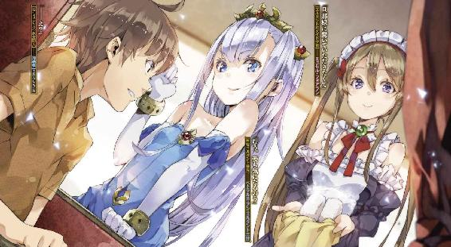
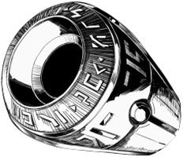

| アウトブレイク・カンパニー 萌える侵略者 03 | |
| 榊一郎 | |
| 講談社 (2012) | |
ebpaj-guide-1.0

口絵・本文イラスト／ゆーげん
デザイン／塚原麻衣子（ムシカゴグラフィクス）
第一章 やっぱり異世界
僕──加納慎一は、窮地の真っ只中だった。
「............」
生暖かい吐息が頰に触れる。
顎と顎の間からのぞく一対の牙が、やけに白いなぁ............などと、僕は頭の片隅でひどく呑気なことを考えていた。
人間は深刻な窮地に陥ると、ある種の逃避行動として、場違いなことを延々考えたりすることがあるらしいけれど......今の僕は、まさにその状態なのかもしれない。今僕がやるべきは、どーでもいい部分に感心することなんかではなくて──出会い頭に問答無用で僕の上にのしかかり、牙を剝いているこの獣を、なんとかして撥ねのけることであるはずだった。
赤黒い闇をたたえた、小さな空洞。
その奥から、濡れた舌が這い出てきて、牙を舐める。
獲物を前に舌なめずり......といったところなのだろう。
台詞をつけるなら『いただきまーす』といったところだろうか。
マジで死んじゃう五秒前。
やばい。すごくやばい。
っていうか、やばいやばいやばいやばいやばいやばいやばいやばいやばいやばいやばいやばいやばいやばいやばいやばいやばいやばいやばいやばいやばいやばいやばいやばいやばいやばいやばいやばいやばいやばいやばい！
──もう画面演出に凝るアニメで言えば、画面一杯に明朝体で『やばい』とか列挙されてゲシュタルト崩壊を起こしそうな場面だった。やばいのは分かっているのだけど、あまりに唐突なこの状況と、焦燥感に押し潰されて、『やばい』以外の思考が意識の表層に思い浮かばない。まあその一方でやけに冷静に自分を観察して、現状を俯瞰しているもう一人の自分が、脳の片隅にいたりするわけだけども。
それはさておき......
「............」
静寂に満ちた薄暗い部屋の中に......獣の生々しい息遣いだけが響いている。
窓は閉められ、カーテンも閉められているので、光源といえばカーテンの隙間から漏れてくる朝日の光のみである。
僕はその部屋の床の上へ、仰向けに押し倒された状態。
そして僕の上には、一匹の獣が荒い息を吐きながら乗っかっている。
獣はその四肢で僕の両腕と両腿を踏みつけて──押さえていた。獣の重量そのものは、そう大したものじゃない。けれど押さえ方が上手いというか......力を入れるための基点を的確に押さえられているせいで、身動きができない。筋肉の収縮が、上手く起き上がるための動作や、撥ねのけるための動作に繫がらないのだ。
まさしくこれは、獲物を狩り慣れている猛獣の手管だった。
無駄なエネルギー消費は、そのまま自分の餓死に繫がるからこそ、狩猟性の肉食獣は『ここ！』という一点を押さえて、獲物の抵抗を封じ込めることに長けているんだとか。
押さえ込まれた無力なウサギは──僕のことだ──後は、ただ来るべき未来に怯えて震えるしかない。将棋で言えば詰み、の状態である。手足が動かない以上、ここからどうにかする手段が、まるでない。
「............」
このまま僕は食われてしまうのか。
こんな屋内で──わけもわからないまま、正体不明の獣に襲われて。
──いや待て。加納慎一。
お前はウサギじゃない。
お前にはまだ人間としての最大の武器があるじゃないか！
僕は必死に考える。
人間には知恵がある！ 知性がある！
それこそが人間と獣を隔てる最大の特徴ッ!!
今こそ稼動しろ僕の灰色の脳髄！
この状況を切り抜けるナイスな案をはじき出せ！
「............」
両手両足。押さえつけられて動かない。
指先。動くけど摑めるものは何もない。
頭。両腕を押さえられているので、頭突きが相手に達するかどうか激しく疑問。
............
あれ？ 人間の知性終了？
絶望的な気分で僕は考える。
まあ知性がどうのといったって、実際に物理的に訴える力がなければ、物理的な窮地はどうにもならないというか。インターネットでどれだけ『凄腕の辛口論客』とか気取っていても、ぶん殴られたり刺されたら終わりというか。
いや──待て！
諦めるのはまだ早い！
言葉だ！ 口車だ！ 加納慎一ッ！
お前にはまだ口車で相手を煙に巻くという力が残っている！
僕はこの身に最後に残された武器にすべての希望を託した。
唸れ言霊！ はじけろ名台詞！ なんだかすごくそれっぽいことを言って相手を煙に巻くのだ──ッ!!
「あ......あの............」
「............」
「ちょっといいですか......？」
「............」
あああああ!?
駄目だ駄目だ──何言ってんだ僕は!?
口車は、相手に言葉が通じる場合にしか意味ないだろ!?
ギラギラした目で僕を見ながら、今から『いただきます』しようってケダモノ相手に、何を言おうってんだ僕は!?
「──ケダモノ？」
冷静になってる場合では全然ないんだけど、ふと僕は素に戻って考える。
前述の通り......ここは部屋の中だ。
窓もカーテンも閉め切られているので、全体的に暗い。だけどカーテンの隙間から入ってくる朝日が、逆光気味に僕を押し倒した獣を照らしている。全体的にその姿は暗い影に覆われている状態だけど──完全な闇の中でもあるまいし、まったく何も見えないというわけではない。
でもって、僕の目もこの暗さに少し慣れてきた。
とりあえず目の前にあるのは相手の顎で......あまりに近くにあるせいで、そればっかりが映って他の部分を見遣る余裕がない。でも落ち着いて僕の方で顎を引いてやれば、相手の顔の輪郭ぐらいはなんとか見ることができる。
「............え？」
僕はぽけっと間の抜けた声を漏らした。
相手の顔は獣毛に覆われている──ように見えたので、僕はほとんど反射的に相手を『獣』と認識していたわけだけど。よく見たらそれは......単に長い髪の毛が垂れて、顔の輪郭に被っているだけだった。
いや。それでも普段よりはなんだか毛深い感じ？
「──って」
薄闇に適応した僕の目は......ようやく相手の顔のつくりを把握することができた。
確かにぎらぎらした双眸や牙は、そのまんま獣のそれだけど──
「エルビア!?」
そう。それは僕がよく見知った女の子だった。
エルビア・ハーナイマン。
人狼......つまりウェアウルフの少女だ。
獣毛に覆われた長い耳と、ふさふさの、やっぱり毛に覆われた尻尾を持っている。
ウェアウルフといっても、別に怪物でもなんでもなく、普段の彼女はとても可愛らしいというか──くりっとした目と、ちょっとぼさぼさな感じの髪が特徴の、飾り気はあんまりないけど、素朴な感じがとても魅力的な女の子だ。
いきなり飛び掛かられて押し倒されたせいで、そして何よりも飢えた獣のような目で睨まれたせいで、僕も激しく混乱してしまい......いつも、のんびりほんわかしている同居人の少女だと分からなかった。普段のエルビアは、狼というより犬という感じだし。
けれど、よく考えたら、ここはもともとエルビアの部屋で。
そもそも僕は、朝食時になっても部屋から出てこないエルビアの様子を見にやってきたのだ。だったらここにいるのはエルビアなのは当たり前で、だから僕はエルビアに押し倒されているのは至極当然──つか当然？
「ちょっと......あの。エルビア、さん？」
「ふーっ......はーっ......」
エルビアからの返事はない。
やっぱり生暖かい息だけが、僕の顔にかかる。
改めて爛々と光るその目を見ると──なんというか、理性ある人間のそれじゃない。漫画で言えば、ぐるぐる渦巻きが描いてあるような感じの、『明らかに正気じゃないですよ？』的な雰囲気がものすごくあった。
やばい。いやもうマジにやばい。
のしかかってるのが『正体不明の獣』から『顔見知りの女の子』に変わっただけで、他の部分はまったく同じなのだ。
これむしろ状況悪化してないか？
獣に食われるというのも、もちろん、ものすごく嫌なんだけど。
知り合いの女の子に食われるとか......それどんな猟奇モノ？ って感じで、ものすごく怖い。
なんて言えば良いんだろう、信じていたものに裏切られる恐怖っていうか。いや。違うな。可愛いぬいぐるみがある日、牙を剝いて襲ってくるのを知ったような──落差とか違和感からくる日常の崩壊への怯えっていうか。
いや。今はそんな考察をしている場合じゃない。
とりあえず相手が女の子ならまだ口車の──言葉の通じる余地はあるわけで。
「エルビア......ちょっと落ち着こうよ。ね？」
「ふーっ......ふーっ......」
「いや。その牙剝くのやめて。っていうかそんな牙、長かったっけ？」
「ふーっ......はーっ......」
にまあ──とエルビアが破顔する。
やけに赤い舌が、べろりと彼女の唇を舐めなおした。
「舌なめずりもちょっと......怖いっていうか。あの。朝ご飯できてるしね、食べるならそっちにしない？」
「はーっ......はーっ......」
「いや。なんか気に障ったなら謝るから。は、話し合おうよ、エルビア」
「はーっ......ふーっ......」
......駄目だ。まるで聞いちゃいない。
それどころか──
「うひゃ!?」
思わず僕は素っ頓狂な声を上げていた。
僕の説得に応じる代わりに......彼女は『そいじゃいただきまーす』といわんばかりに顔を近づけてきて、僕の頰を舌でべろりと舐めあげてきたからだ。
「あの。美味しくないでしょ？」
「............」
「ミュセルの朝食の方が美味しいから、そっち食べようよエルビア」
「............」
エルビアはやっぱり無反応。
彼女の舌が、頰から首筋へと移動していくにつれて......僕はもう観念した。
加納慎一。享年十七歳。
異世界にて知り合いの獣っ娘に食われて死亡。
うわー......墓碑に刻むの躊躇っちゃう死に方だよな。いやうち仏教だからそんなのお墓に刻まないけどさ。
などと無意味なことを考えていると。
「............あれ？」
牙が──来ない。
というかエルビア、喉の辺りを舐めてから──そのまま鎖骨から胸の方に興味が移ったみたいで。普通、肉食獣って獲物を仕留めるときはまず喉笛をヤるんだってどっかで読んだような記憶があるけど......これが人狼だとまた違うんだろうか？
「エルビア......さん？」
「はーっ......ふーっ......」
エルビアは何か、もどかしげな感じで僕のシャツを口にくわえると、乱暴に頭を振ってこれを破いて──破ききれないと分かると、僕の腰の上に馬乗りになって、両手で服を引き裂いてしまった。まるで紙を破くみたいにあっさりと。
小柄な体軀に似合わない力だ。
これってやっぱり──
「──って」
ちょっと待て。
これってまさか。
獣っ娘。尋常じゃない目つき。普段と違う様子。荒い吐息。
幾つかの言葉が連想パズルのように脳裏を渦巻く。
そこから導き出されるのは──
「ちょっ──まさかエルビア？」
「............」
「く、くすぐったい、くすぐったい、ちょ、やめ、あ、そこは駄目、じゃなくて、こら、エルビア、うひゃあああああ!?」
エルビアは僕の胸の辺りを一通り舐めると、さらにその下へ──
「エルビア、エルビアさん、それは、ちょっと、ここじゃ駄目っていうか、いや、そうじゃなくて、ちょ──」
「............」
無心な感じで僕の身体の匂いを嗅ぎ、舐めていくエルビア。
改めて見てみると、この娘、半裸だ。
もともとエルビアは普段から露出の多い服を着ているうえに、部屋の中では下着同然の格好をしているので、見慣れそうなものなのだが──こういう状況ではもう、とてもエロスというかものすごくエロスというか果てしなくエロス。胸に巻いたチューブトップの隙間から、こう、胸の谷間が見えたりして、しかも下の方はいつものズボンがなくて褌みたいな下着一枚で、これがまた下手なショーツなんかよりも何倍もエロスで。
さすがの僕でもようやく確信した。
食うは食うでも──
「やっぱりそっちの『食う』かっ!?」
性的な意味の......！
なんというご褒美ッ!?
僕もとうとう脱ＤＴッ！
──などと喜んでいる場合ではなくて！
「ちょっ──エルビア、駄目だ、駄目だってば！」
こう見えても僕は節度をわきまえた紳士なのだ。いやマジで。
まあそれ以前に......三次元の女の子に手を出すと、いろいろと面倒なことが起きたりするのは百も承知。嫁は二次元に限る！ とまでは言わなくとも、成り行きでいらんことすると、後がとても怖い。
だけど......
「ふーっ......はーっ......」
エルビアは、やっぱり僕の言葉などまるで聞いてない。
もともとこの娘は、自分から男を押し倒してくるような性格はしてない。なので、こういう体勢になっているのも、たぶん、発情期とかそういうのが原因なのだろう。
まったくもってお約束だ。
獣っ娘には発情期！
本能のせいなのだから、本能のせいなのだから、それはもう仕方ないことなのだッ！ 自分からえっちなことに積極的になってもそれは本能のなせるわざなので無罪！ いわば本能無罪！ なんという免罪符！
そして......言葉は、煮え滾る本能の前には、とてもとても無力なのもまた、定番。
そういうわけで──
「駄目、駄目だ、駄目の駄目駄目だ、エルビア、駄目──ッ！」
無力な言葉が、ズボンの引き裂かれる音と共に屋敷に響き渡った。

僕の名前は加納慎一。
異世界初の総合エンタメ商社〈アミュテック〉の総支配人だ。
事の起こりは二十一世紀初頭──
日本は自国の領土内、具体的には富士の青木ヶ原樹海の片隅に、異世界へと繫がる超空間通路を発見した。
別の世界に通じる細く短い竪穴。
それは、広げることも塞ぐこともできない、空間のひずみのようなものらしい。
極秘のうちにこの超空間通路を介して調査隊を送り込んだ日本政府は、その異世界において、支配種たる地位を確立している生物の集団──人間の国家と接触に成功する。
そしてこの国家......神聖エルダント帝国と、日本政府は互いに慎重に歩み寄り、ぎこちないながらも国交を樹立することに成功した。
このタナボタ的な異世界との接近遭遇は、おそらく人類の歴史始まって以来の珍事であり──同時に、国交の樹立は快挙でもあっただろう。
だが日本政府は、この事実を誇ることなく秘匿した。
ある種の期待が、政府高官達の間で生じていたからだ。
何しろ異世界である。
もちろんそこには人類のまだ知らない生物がいて、文化があって、技術があって、資源がある。エルダント帝国の文化水準が中世西欧のそれに酷似していたことから、技術的な部分で得るものは少ないとしても、たとえば生物資源や鉱物資源がほぼ手付かずの状態で──存在すら認識されていない世界においては、相手を騙くらかして取り放題である。とりあえず相手と親交を深めて油断させてしまえば、後はどうにでもなる──と考えた底意地の悪い人が、当時の日本政府にいたらしい。
ところが......なかなか悪巧みという奴は上手くいかないもので。
とりあえずの国交は樹立したものの、『親しくなる』きっかけが摑めない。
この異世界には魔法技術があったため、意思の疎通はあんまり苦労しなかったみたいだけれど......そこから先が大変だった。親交を深めようにも、異世界側の反応が鈍いというか、日本政府側の用意した『お近づきの品』──各種伝統文化に、先方はあまり興味を示さなかったのである。
また超空間通路の広さが限られていることや、他国に対して秘密にしていることもあり、あまり大きなものや大量の物資を異世界側に運び込むことはできない。大々的な動きを示してアメリカだのなんだのに嗅ぎ付けられれば、なんのかんのと理由をつけられ『美味しいところ』を取り上げられてしまうのは、明白だったからだ。
そこで考えられたのが、日本が生み出し、言語や文化の垣根を越えて、世界中に輸出し続ける『クール・ジャパン』の品々──つまりはアニメ、漫画、ゲーム、ラノベなどのオタク産業だったというわけで。
実際......このオタク産業の商品は、神聖エルダント帝国でも実に受けがよかった。
なので日本政府は本格的にオタク産業で親交を深めるべく、その運び込む窓口としてエンタメ総合商社〈アミュテック〉を設立した。
ところが、そこはやっぱり役人の仕事──前例がないことには滅法弱く、そもそもどんなオタク産業商品を輸出してやれば良いのかも、わからない。政権交代だのなんだので自国内もいろいろ揉めている最中だったこともあり、政府はこの問題ばかりにもかまけていられず、時間も予算も人材もない状態。そこで関係者達はこう考えたのだ。
『ならばオタクを一人どこかから連れてきて総支配人に据えてしまえばいい』
かくして政府は機密の大義名分の下に、詐欺同然の人材募集を行い、それにまんまと引っかかって異世界まで連れてこられた筋金入りの純血オタク、元自宅警備員が──この僕、加納慎一なのだった。
「らめえええええええええええええええええええええええええええ──!?」
呂律の回っていない感じの悲鳴が響き渡る。
我ながら呆れるぐらいによれまくった声だけど、まあしょうがない。何しろエルビアに全身舐められまくっているのが、くすぐったいやら気持ちいいやらで、普通の声を出すのも難しい状態なのだった。
「............」
エルビア・ハーナイマン。
自称・放浪画家の少女で──前述の通り人種的にはウェアウルフ、つまり半獣人である。
この異世界では半獣人はあくまで『人種』の一つに数えられる。要するに彼女の備えるぺこりと垂れ下がった可愛い獣耳と、もっふもふでさわり心地の良い獣尾も、僕達の世界における『肌の色』の違いと同程度の認識なのだ。
だからエルビアの言動も人間としての常識や良識に沿ったもので、僕達とあんまり変わらない。半獣人といっても、それこそ獣耳や獣尾がついているだけで（いやそこは萌えポイントとして重要だけどね！）──だから僕はすっかり油断していた。
すなわち、この子の本性は文字通り半分、獣なのだ、ということを。
実際──以前、彼女自身から聞いた話では、半獣人の種族は全体的に狩猟本能が強いため、これを逸らすために、いろいろな『自分が夢中になって打ち込める』ものを推奨されることが多いのだという。半獣人が本能のままに狩りを行えば──獲物は家畜から、人間まで──それこそ法治国家は大混乱すること、必至だからだ。
エルビアの場合は、それが絵を描くこと、だったらしい。
何かをじっと目で追って、それを自分の中に取り込む。
確かにこれは『狩り』に通じるものがある。人間でもライフル使って獲物を撃つのと、カメラを使って被写体を写すのとは、近い感覚がある──というのを聞いたことがある。
けれどもちろん、これだと解消される本能的欲求は、あくまで狩猟本能だけだ。
つまり──まあその、アッチ系の欲求の方は、絵を描いたぐらいでそうそう解消されたりもしないわけで。
「エルビア、エルビア！」
正気に戻ってほしくてそう声を掛けるのだけど、エルビアは、やっぱりこっちの声なんかまるで耳に入っていない様子。
もちろん......男が女を押し倒す場合と違って、攻守逆の場合の無理矢理えっちは、男の側がその気になってないとまったく無理なわけだけど。
悲しいかな、僕も健全な──まあ言い切るには若干の躊躇を覚えるけど、それはさておき──十代男子、女の子の身体を間近に感じたりすると、そりゃもう、元気になっちゃうところはなって当然というか。
しかもエルビアは、なんだかんだでそれなりに出るところは出ているし、引っ込むところは引っ込んでいるしで、非常にこう......なんだ、その、僕の息子サンが元気になっちゃうのは当然な体つき。顔もまあ可愛いし、しかも日本じゃどうあってもお相手できない本物のケモっ娘である。
これに定番中の定番「発情期なの、発情期だから、あたしって普段はそんなふしだらな娘じゃないんだけど、でもああ、発情期だからっ！」的な免罪符持参状態で迫られた日には、元気にならなければ、それはもうオタクの息子じゃない。
まあつまり、僕の方は望まずして準備万端なわけで。
これではもう──
「ふーっ......ふーっ......」
ぐるぐる目玉状態で、エルビアは自分の下着ももどかしげに脱ぎ捨てる。
すでに僕のズボンは彼女によって破かれ、こっちも下着一枚状態だ。そしてエルビアの力なら日本製の化繊パンツなんてのは一瞬で破かれちゃうだろう。
いよいよもって、どうにもならない状態。
加納慎一......貞操の危機！
さらば十七年間守り続けてきた僕の純潔！
──って別に守ってないけどさ。
ドキドキしつつもそんなことを考えていると......
「──旦那様？」
ひょいと──部屋の入り口から一人の少女が顔を出した。
長い亜麻色の髪を二条にくくってまとめた──いわゆるツインテール状態にしている可愛い少女である。
ツインテールというと生意気ツンデレ少女の記号みたいに扱われていることが多いけど、この子はまるで逆、素直で大人しくてものすごく控えめな乙女だった。しかも頭には『これぞメイドさん』といわんばかりのフリル付きヘッドドレス、華奢な身体を包んでいるのは、暗色のワンピースに、これもフリル付きの白いエプロン。
典型的なメイドさん衣装に身を包んだ彼女の名は──
「ミュセル!?」
ミュセル・フォアラン。それが彼女の名前。
見た目通りにこの屋敷の──そして僕付きのメイドさんである。
僕はすがりつくようなまなざしを彼女に向けた。
「助け──」
「だ......旦那様......」
だがミュセルは何やら愕然と凍りついた様子で、僕を──僕とエルビアを見つめている。大きな翡翠色の瞳が、こぼれ落ちんばかりに開かれた瞼の下で、激しい動揺を示して揺れていた。
「──あ」
改めて状況を鑑みる僕。
全裸のエルビア。
パンツ一枚の僕。
しかもエルビアは僕の腰の辺り──まあ股間じゃなくて腹の上だけど──に馬乗り状態になっていて。さらに言えば僕の顔やら首筋やらはエルビアの唾液でべったべた。
そりゃまあ、誤解するなという方が難しい。
「ち、違うんだ！」
僕は思わずそう叫んでいた。
うわ。なんか自分で叫んでから思ったけど、なんて言い訳っぽい台詞なんだ。
自分が言われたら『何白々しいこと言ってんだろ、こいつは』とか思いそうだが──でも実際違うんだからしょうがないというか、他に言うべき言葉を僕は思いつかなかった。
「違う、誤解だ、ぼ、僕は！」
「............」
凍りついたままのミュセルは、何を言っても反応がない。
熱く滾っているのか、凍りついているのかの違いはあるけれど、僕の声が全然耳に入っていないという意味では、エルビアと同じだった。
そして──
「男ってみんなそういうのよねぇ」
しみじみした口調でそう言いながら......ミュセルの後ろからさらに、一人の女の人が姿を現した。
黒髪をシニョンにまとめ、小綺麗でさっぱりした髪型の女性である。
自ら他人の感覚に訴えかけるような派手さはないけど──その一方で、対するものを無意識のうちに和ませてしまうような、ほんのり癒し系の雰囲気がある。
年齢は聞いてないけど、たぶん、二十代前半。
眼鏡をかけているのと、童顔のせいで、角度によっては十代に見えちゃうこともあるけど──というかそっちの場合の方が、普段から圧倒的に多いけど。
しかしこれだけは、自ら激しく存在感を放つ胸──制服を押し上げるその二つのまろやかで大きな膨らみが、『大人ッ！』と言葉もなく主張していた。
古賀沼美埜里さん。
この人は僕と同じ日本人──しかも僕の護衛役として同居してくれている、陸上自衛隊の婦人自衛官だった。何かあれば９ミリ拳銃と９ミリ機関拳銃を駆使し、僕を守ってくれる頼もしいお姉さん──のはずなのだけど。
「み、美埜里さん......！」
「エルビアが部屋から出てこないから見てくるって言って──朝っぱらから何やってるの慎一君？」
「何って──見れば分かるでしょうが!?」
「ナニ？」
「いやそうじゃなくて！ というか助けてくださいよ！」
「お楽しみの最中じゃなかったの？」
「なんなんですかその親父っぽい発言は！」
さっきの『男ってみんなそういうのよ』発言といい、どうも最後の一線でこの人は信用ならないというか、見た目に反して悪ふざけが過ぎるというか──とにかく今も、僕が苦境に陥っているのを面白がっているような節がある。
「助けていいの？」
「......あ、当たり前でしょ！」
「あ。今若干、躊躇ったでしょ」
「よけいな聡さを発揮しないでくださいよ!!」
僕は半泣きで喚く。
まあ正直言えば、エルビアのことは嫌いじゃないし、えっちするのも『心底嫌』ってわけではないんだけれども、まさか、人生初えっちが、ミュセルと美埜里さんの見ている前で、というのは断じて勘弁願いたかった。
「分かった」
美埜里さんは頷くと、おもむろに足元にかがんで何かを持ち上げた。
どうやら最初から持ってきていた──用意していたらしい。
バケツ、いや水汲み桶である。
中身は当然──
「ちょっ──美埜里さん!?」
「サカリのついた犬猫には、これが一番だよ」
思わず表情を引き攣らせる僕に、彼女はにっこり笑ってそう言うと──
「えいっ」
なんの躊躇もなく、水汲み桶になみなみと満たされていた冷水を、僕と、そして絶賛発情中のエルビアの上にぶちまけたのだった。
でもって──数分後。
「............や。申し訳ないす」
わりとあっさりと、エルビアは正気を取り戻していた。
場所は僕達の住む屋敷の食堂。
暖炉があって、ソファがあって、でっかい柱時計があって、といわゆる洋館の一室そのまんまの室内風景である。現代日本人の一般的な感覚で言う『居間』とはかなり違う。特にその広さは特筆もので、二十畳はあるだろう。そこに住人が寛げるようにと、まばらに家具が置かれているその様子は──居間というより応接室のイメージの方が近い。
それはさておき。
冷水を頭からぶっ掛けられた僕とエルビアは、美埜里さんによってこの居間へと強制連行され、とりあえずミュセルが持ってきてくれた布で身体を拭き、これもミュセルが持ってきてくれた新しい服を着て......ようやく一息ついたところだった。
エルビアはいつもの衣装なので、おへそが出てたり鎖骨が出てたりで、露出度は高いのだけど......とりあえず落ち着いているせいか、さっきまであった妙な色っぽさは消えていた。
おかげで僕の息子も落ち着きを取り戻してくれている。
ただ......
「『月のモノ』が始まるとどうも......抑えが利かなくなっちゃって」
恐縮しているのだろう、身を縮こめるようにソファに座ってエルビアはそう言った。
月のモノっていうとやっぱアレか。
アンネの日記か。いや日記は違うけど。
そういえば妹の初潮が来てお赤飯炊いたときは、どうしてなのか不思議でしょうがなくて、根掘り葉掘り聞いたら、母親にウェスタン・ラリアット食らったっけ。そこは普通に拳骨くらいにしとこうよと子供心に思ったけど、まあそれはさておき。
「そういえば、さきほどは、ちょっと雰囲気が違いましたね」
と──こちらも落ち着いたミュセルが言う。
「あい。そうなんすよ......」
照れるように後頭部を搔きながらエルビアが言った。
「この間始まったばかりなんで、どうも......」
「あ。それで我を失うほどに？」
「すんません、後で抜け毛は片付けるっすよ」
「......匂いはともかく──抜け毛？」
眉をひそめて僕は呟く。
そういえばさきほどは、エルビアの姿が妙に毛深く見えた気がしたけども。
「ライカンスロープの人達はその辺が大変ですよね」
なんだかミュセルは納得している様子だけど、僕にはイマイチ分からない。
美埜里さんの方を振り返ってみても、彼女は肩をすくめるだけだった。僕より異世界歴の長い彼女でも、詳しいことは知らないみたい。
「あの......エルビア？ イマイチ話が見えないんだけど」
「ああ......シンイチ様は異郷の人だったっすね」
納得顔で頰を搔くエルビア。
「そっちにはウェアウルフとかいないすか？」
「まあ伝説とか神話とかには出てくるけど、本物はいないかなあ。たぶん」
「なら知らなくて当然すね」
エルビアは頷いて──それからこう続けた。
「半獣人族は月に一度、こう、先祖返りというか、より獣寄りになっちゃう時期があるんすよ」
「それって月の満ち欠けとか、そんな？」
「そうそう。それっす」
嬉しそうにエルビアは言った。
「まあ個人差はあるっすけど──毛深くなって、体臭がきつくなって、あとは......耳や尻尾が伸びたり、筋肉が張ったり、力が強くなったりとか、そんな」
「変身？」
まあ満月の夜に狼男が変身するってのは定番というか、もともとの伝説だけど。
ウェアウルフ──狼男というと、僕らの世界では『普段は人間で満月の夜だけ狼に変身』みたいなイメージが強い。
でもエルビアを見ている限り、普段から彼女は獣耳やら獣尾やらを露出させているので......そういう『変身型』ではなくて、常時、獣と人の状態が混在していて、変化がないのが、こっちのウェアウルフなのだと勝手に思い込んでいたのだ。
けれども、どうもこっちでもウェアウルフは『月齢』に影響を受けて、身体に物理的な変化が生じるらしい。
まあ『変身』ってほどでは、ないみたいだけど──
「骨格まで変わっちゃうのは稀っすけどね」
あ。逆に言えば骨格まで変わっちゃう場合もあるわけか。
そこまでいくともう完全に『変身』だ。
しかしそれすらも、『個人差』って言葉でくくれてしまうのが......すごいというか、いい加減というか。遺伝子とか、いったいどうなってるんだろう。
「で、なんというか......より獣っぽくなって、いろいろな欲求が強くなっちゃうっていうか、身体の奥底から出てくるものに逆らえなくなるっていうか。これも程度差はいろいろあるんすけども──アタシの場合」
そこでエルビアはちょっと恥ずかしそうに笑った。
「この間、初めて、『月のモノ』が来たもんで......」
「ってちょっと待て」
僕は愕然として問うた。
「そういえば今まで聞いてなかったけど......エルビア、いくつなの？」
普通、初潮って小学校高学年とかその辺で来るんじゃないの？
少なくとも妹の紫月は小学校六年生のときだったような......
「日本人の平均だと十二歳とか十三歳くらいだけど」
美埜里さんが口を挟んできた。
「早ければ八歳とか九歳とかでお赤飯の子もいるし、十代後半まで遅れる場合もあるみたいよ？ ましてエルビアのそれは、人間のとは違うでしょうしね」
まあ『月のモノ』なんて言ってるから混同しがちだけど......よく考えたら結果として生じる現象はむしろ逆だ。普通の人間の女性の場合は、出血と同時に、痛みやら気だるさを伴うものみたいだけど、エルビア達のそれは、どうも各種身体能力の増加を伴うものであるらしい。
「アタシは十五す」
とエルビアは、はにかみ含みの口調で言う。
表情もどこか少し照れている感じで──
うわぁ。
なんかこう、普段は大雑把というか大らかというか、肌を見せても全然気にしないような言動のエルビアが、こんなふうに恥じらっている姿は、妙に新鮮だったり。
「......っていうか十五？」
てっきり僕と同じか、年上ぐらいかと思ってた。
何しろこの子は──実は隣国バハイラム王国のスパイなのだ。
本人にどれだけ自覚があるかどうかは疑問だけど、まさか、成人もしていないお子様をスパイとして派遣するような真似はしないだろうと思っていたから、勝手に十八か九だと思っていたのだ。
ついでに言うと、身近に美埜里さんみたいな例がいるので、よけいに『若く見えても実はちゃんと大人』という可能性を無意識に考慮しちゃうのだ。
けれど考えてみれば、戦国時代の日本では十五くらいで元服──成人したというし、十八歳だの二十歳だのといった『区切り』は戦後日本の、民法上で成立する価値観でしかないわけで。
「とにかく、さっきも言いましたっすけど、アタシはまだその......慣れてなくて......」
エルビアはさらに身を竦めながら言った。
要するに、『月のモノ』も始まったばかりで、それに伴う欲望の増大とか、本能的な衝動を、適当にいなす術をきちんと手に入れていない、ということらしい。
つまり──
「つい欲求のままに慎一君を押し倒しちゃった、と」
「すまんこってす」
美埜里さんの露骨な言葉にうなだれるエルビア。
「......その狩りとかだけじゃなくて......あっちの方の欲求も強くなるもんで......」
「──マジかよ」
僕は呆然と呟いていた。
なんという美味しい本能！
本当に発情期だったとは。
つまりエルビアは──
「性欲をもてあます！」
大塚●夫さんの渋い声を真似るのはなかなか難しい。
いやそうじゃなくて。
さらに細かく聞いていくと、実際に初めての『月のモノ』が始まったのは二ヵ月ぐらい前だとかで──この二ヵ月ぐらいはなんとか我慢して、そういうのを僕達に可能な限り見せないようにしていたらしい。けれど、逆にそれが変に鬱屈したものをエルビアの中に溜め込む結果になっちゃったとかで。
今日この日にそれが爆発した──と。
とはいえ──
「まあでも男なら誰でもいいとか、そこまで我を忘れちゃうもんなの？」
ウェアウルフ達の恋愛観がどうなっているのかは知らないけど、好きでもない男と本能に任せてヤっちゃったりしたら、後々我に返ったときに、初体験そのものがトラウマになったりしないんだろうか。
あ......でも前に『シンイチ様は命の恩人だから押し倒されてもいい』みたいなことをエルビアが言っていた。そのことを思うと、ウェアウルフの場合、その辺の貞操観念はわりと緩いんじゃないか、とも考えられる。
「や、それは──その」
とエルビアは曖昧に笑って──何故か視線を脇に逸らして頰を赤らめる。
「そういうわけでは、ない、すけど」
「ほほう」
目を細めて美埜里さんは言った。
ずいと身を乗り出して婦人自衛官は問うた。
「誰でもよくはないけど、慎一君ならいいと？」
「............」
エルビアは無言。
いやだから──反則だろ普段、あんな、こう大らかというか、がさつというか、そーゆー感じのくせに、こんなときだけ、しおらしい乙女みたいな感じになっちゃうとか！ 『押し倒されてもいい』とか言ってたときは、もっと、あけすけだったじゃん！ キャラぶれてんじゃないの!?
などと──僕はバクバク無意味に高速運転中の心臓を抱えて考えていると。
「へぇ。ほぉ。ふぅん？」
「なんなんですかその目は」
妙に嬉しそうというか、面白がっているのが丸分かりの表情で、こっちを見てくる美埜里さん。なんなんだよ。あんたやおい専門じゃなかったのかよ。
「慎一君モテモテだね。モテ期襲来って奴だね」
それは到来じゃないかと思うけど、エルビアの件に限って言えば襲来でもいいよーな気がする。まあどうでもいいけど。
「いや......これってもててるっていうんですか？」
普通、モテ期ってのは複数の女性に好かれるような状態を指すのかと思ったけど。
エルビアだけなら少なくとも『モテモテ』とか言わないだろう。
けど──
「そもそも、メイドさんに獣耳少女が同棲している時点でハーレム条件はクリアだよ」
「なんのゲームなんですか」
エロゲとでも言うつもりか。
「本当、すまんこってす」
と──エルビアはエルビアで、改めて申し訳なさそうにうなだれている。
彼女によると、こういう『月のモノ』は、ライカンスロープ全体の特性で......人間にはもちろん、同じ現象が生じたりはしないのだそうで。
人間種至上主義、亜人種は下に見られる社会からすれば、『人間らしければらしいだけ良い』ことになり──この『月のモノ』に代表されるような、亜人種独特の生態や風習はむしろ『非常に恥ずかしい』モノであるらしい。
「よりケダモノっぽいってことで」
とエルビアが言う。
「いやまあそうなんだろうけど」
僕は苦笑する。
「でもまあ実際、半獣人だしなあ」
何をいまさらという感じである。
むしろ獣っ娘には発情期設定があるのは基本だろう。
そんなふうに考えている僕を、エルビアは少し上目遣いに見つめながら──
「気持ち悪くないすか？」
「何が？」
僕が問い返すと、むしろエルビアは驚いたように目を瞬かせる。
「いや。だから人間とは違う『月のモノ』なわけで......その......」
「いや。むしろご褒美ッ！」
力強く『グッジョブ！』とサムアップしてみせる僕。
それこそ、いきなり押し倒されたことそのものは驚いたけど、僕に言わせると発情期装備なんて、よりエルビアの萌えキャラレベルが上がったとしか思えない。上がってどうすんだという話はあるけど、それはさておき。
「生々しいとは思うけど、気持ち悪いとまでは思わないよ」
「............」
きょとんとした様子でエルビアは僕を見つめている。
いや。そんな驚かれるようなことか？
「まあ今後は相談してくれれば、欲求が強いときは僕はエルビアの近くに寄らないとか、いろいろ対処はできるだろうし。毎回、桶の水食らってたら、風邪ひいちゃいそうだし」
「シンイチ様──」
ある種の警戒と怯えに固まっていたエルビアの表情が──ゆっくりと嬉しそうな笑顔へと溶けていく。おお。可愛い。守備範囲の大きなオタを自称する僕としては、もちろんクーデレやツンデレも大好物だけど、やっぱ、こう朗らかな笑顔っていいよね。
「これは、うかうかしてらんないんじゃない？」
と美埜里さんが肩を叩くのは──しばらく傍観者然として話の聞き役に回っていたミュセルである。
「あ、はい。頑張ります」
と──ぽけっとした表情で反射的に頷いてから。
「え？ あ──いや、その、わ、私ですか？」
急に何かに気付いた様子で慌てて左右を見回すミュセル。
「他に誰がいるの」
「いや、わ、私は──」
そういってミュセルは俯き、そのちょっと尖った耳を真っ赤に染める。
ちなみにこの子は人間とエルフの混血で──だから、そのことをちょっと気にしている。僕達の前ではこうしてあまり気にせずこの耳を晒しているけれど、外に出るときにはいつも髪型を少し弄って耳を隠すようにしているのは、混血児はわりと差別の対象になることが多いからである。
「──ところで」
と──壁際にいた傍観者その二がふと声を上げる。
「これはもう外に戻していいですかい？」
傍観者その二は、美埜里さんが使った桶を手にそう問うてきた。
なんというか......今までの話にまるで興味なし、といった平然たる声だ。まあもともと彼の場合は表情やら口調やらが読みにくいのだけれど。
ブルーク・ダーウェン。
この屋敷の庭師。
そして現在、この部屋の中では唯一、僕達、現代日本人の感覚からすれば『明らかに人間じゃない』と一見して分かっちゃう容貌の持ち主だった。
彼は──リザードマンである。
砲弾型の長い頭部、鱗に覆われた厳つい顔、裂け目のような口、ちょろちょろと思い出したように口の先から出入りする舌......もうこれでもかってぐらいに爬虫類で、手足は長いけど、トカゲが直立して二足歩行しているようにしか見えない。
亜人種は珍しくないこの異世界でも、やはりリザードマンはかなり特異な存在らしく、半獣人達の間ですらも、別格扱いされることが多いんだとか。
まあ身近に他の男がいないからといって、エルビアもブルークを相手に発情したりはしないだろうし。どう考えても、生物としての外見やら生理形態が違いすぎる。
「あ。うん、大丈夫、ありがとう」
と美埜里さんは頷く。
ちなみに美埜里さん、エルビアの発情期のことは知らなかったみたいだけど、何か騒ぎがあったときに有効──と、僕の悲鳴が聞こえた時点で、ブルークに桶を借りて水を運んだらしい。『まあ効かなくても、水ぶっかけておけばスタンガンも効きやすいでしょ？』と朗らかに恐ろしいことを言っていた。
「ではあっしはこれで」
そう言ってブルークはのそのそと食堂を出ていく。
その後ろ姿を見送りながら──
「やっぱり、種族が違うと羞恥心とかその辺の感覚も違ってくるのかな」
僕はふとそんなことを呟く。
それは別に、誰かに同意や意見を求めるような台詞ではなかったのだけれど──
「それはそうかもね」
と美埜里さんが応じてきた。
「国や時代が違うだけでも価値観は変わっちゃうし。それが生き物として違う部分が幾つもあれば、同じものを見ていても、別の見え方してる可能性はあるし」
「そういえば爬虫類は、五感とかどうなってるんでしたっけ？ ピット器官とか聞いたことありますけど」
ピット器官というのは、赤外線を感知する爬虫類独特の器官で──体温が気温よりも常に高いネズミや鳥といった獲物を、『輝き』として爬虫類は『観る』ことができるんだとかなんとか。要するに普通の目以外に、赤外線専門の目を持っているわけで──そりゃ、僕達が見ているのとは、世界が違って見えても不思議じゃない。
「あれって蛇だけじゃなかったっけ。トカゲ類はピット器官はなかったような。まあそもそもこっちのリザードマンがトカゲに近いのか蛇に近いのか、もっと別の何かか、は私にも分からないけど」
と首を傾げる美埜里さん。
まあそりゃそうだ。
あくまでトカゲっぽい外見だからリザードマンと呼んでいるだけで、僕達の世界の爬虫類の常識が全部通用するとは限らない。というか──その場合は、そもそもドラゴンなんて生き物が存在するはずがない。あれってつまり翼一対を足の変化したものと考えると、昆虫と同じ六つ足の生き物扱いになってしまうしね。
「ブルークともかなり分かり合えてる気がするけど、ひょっとして、僕の錯覚だったりするんですかね......」
未だに彼の容姿や言動には面食らうことが多いけど、真面目に働いてくれているし、悪い奴じゃないと思うのだ。以前、僕はブルークと彼の連れてきてくれたリザードマンの戦士達に、窮地を救われていることもある。
同じ屋敷に住む仲間なのだし、できればもっと仲良くしたいと思うのが人情だ。
しかし──
「慎一君」
美埜里さんは僕の両肩に手を置いて言った。
「分かった。君があえてその苦難の道を行くというのであれば──ふふふ、私が本当の力をすべて出し切るときが来たようだね」
「......なんの話です？」
なんなんだ、その邪気眼発言。
美埜里さんは爛々と眼鏡の奥で目を輝かせて言った。
「全力で慎一×ブルーク本を作る」
「いやちょっと待て」
「あ、慎一君は受けの方がいい？」
「あんたはその価値観しかないんかい!!」
「ないっ！」
「うわ、言い切った!?」
......この人もなんか最近、言動に遠慮なくなってきたな。
腐女子バレして開き直ってるみたいだけど──
「同じ種族でも男と女とでこんだけ違うんだもんな......」
異性と異性。異国人と異国人。異人種と異人種。そして異種族と異種族。
分かり合えるのが最善なのはまあ当然として──でも完全な相互理解なんて、実は机上の空論でしかないのかもしんない。
そんなことを......僕は溜め息混じりに考えていた。
神聖エルダント帝国。
この日本政府が初めて異世界で接触した国家は──名前の通り帝政を敷いている。
要するに皇帝陛下を頂点とする絶対君主制だ。
そしてこの『エルダント』という名前は国家名であると同時に......皇帝の名前でもあり同時に首都マリノスの中央にある城の名前でもある。はっきり言って紛らわしいというか混乱必至のネーミングだと僕なんかは思うのだけど、実際にはエルダント皇帝は『陛下』『皇帝』と呼ばれるだけで固有名詞が使われることの方が稀みたい。
まああれだ──僕らの世界でいえば、一神教において神様に名前が付けられていないのと同じようなものなのかもしれない。
皇帝といえばこの世にただ一人。
だから一般的な単語で呼称してもさして問題はない──そんな感じ。
日常生活において、エルダントという名前を実際に使う場合には、他国との比較の上で『神聖エルダント帝国』という名前を出すか、さもなければ、皇帝陛下の御座所であるところの『神聖エルダント城』のことを指している場合が多い。まあこれすら単に『帝城』という人の方が多いのだけど。
で──
「......相変わらずだよなあ」
呟きながら、僕はその神聖エルダント城の中を歩いていた。
このお城......様式的には中世ヨーロッパのそれによく似ているのだけど、明らかに異なるのは、その規模と、建築方法である。
よく大きい建築物に対して『山のような』という表現を使うことがあるけれど、この神聖エルダント城は本当に山と同様の規模なのである。何しろ僕の屋敷の前に立って見上げると、それが地形の一部のように見えちゃうというか......地平線の彼方に見える山脈のような印象なのだ。
しかもいったいどうやってこんな巨大な城を造ったのだろうと思っていたら──
「何が相変わらず？」
と僕の斜め後ろを歩いている美埜里さんが問うてくる。
「いや。なんていうか圧倒されますよね」
「まあ......そうだね」
振り返らなくても──声だけでも美埜里さんが苦笑を浮かべているのが分かる。
もう何十回とこの神聖エルダント城に来ている僕達だけど、未だに、知っているのはそのごく一部......おそらく十分の一にも満たないだろう。このお城は単純に規模というのならば、ちょっとした町や村並みの大きさがあるのだ。
「この床のことも、気付いたときはちょっとビビりましたよ」
足元に僕は視線を向ける。
綺麗に磨きぬかれた大理石調の床は──緩やかな色の濃淡はあるけれど、どれだけ目を凝らしてみても、継ぎ目が見えない。
当初はその意味が分からなかった僕だけど──というか、そもそも継ぎ目がないことに気付かなかったのだけど──
「まさかこの城自体が一枚岩だとは思わないわよね」
と──美埜里さん。
そう。
あろうことか、この神聖エルダント城というのは、石材やら何やらを積み上げて造っているのではない。巨大な岩山を一つまるごと使って──これをくりぬいて造ったのだそうだ。
山のよう......ではなくてもともと山だったのだ、この城は。
床の石材に継ぎ目がないのも当然である。
もちろん、ツルハシとスコップで延々と掘って削ってできるような作業じゃない。そんなことをしていたら、千年かかっても、この神聖エルダント城は完成しなかっただろう。
魔法だ。
この神聖エルダント帝国には魔法使い達がいて......その中でも土木系の魔法に長じた人々がいる。彼らの力で神聖エルダント城は岩山から削り出され、永劫不滅のような頑強さで、今日も帝都に君臨しているのだ。
まあ基本構造が岩だとか言われると洞窟とか、チベットの山岳寺院みたいなのを想像しちゃうかもしれないけど、この城の内装の基本様式は中世ヨーロッパ風味だ。だからこそ僕も、この城の建築方法──というか何というか──について、しばらく気が付かなかったのだけど。
「毎回毎回、なんか、こう......とんでもない人に会いに行ってる気がして腰が引けちゃうというか......」
僕は──〈アミュテック〉社・総支配人である加納慎一は、定期的にこの神聖エルダント城に登城している。
僕が住んでいる屋敷は、建て前上、〈アミュテック〉社の社屋ということになっているけれども、これは、もともと神聖エルダント帝国から──つまりはエルダント皇帝陛下からお借りしているもので。ついでに言えば〈アミュテック〉社それ自体が神聖エルダント帝国が一部出資している半官半民企業とも言うべきもので......だから言ってみれば、皇帝陛下は僕の傭い主でもあるのだ。
だから僕は、皇帝陛下に対して業務経過の報告をする義務がある。
だが──この神聖エルダント城の威容を目の当たりにするたびに、僕は分不相応な気がするというか、本当に僕なんかが皇帝陛下と直で話をしても良いのだろうか、という不安を覚えたりする。
文字通り神にも等しい絶対権力者。
その権威の一端が、つまりはこの神聖エルダント城なわけで......こんな城の中を歩いていたら、萎縮しない方がおかしい。
「そのわりには、いつも実際に皇帝陛下と会うと、平然としてるじゃない」
「いやまあそれは......まあ」
苦笑する僕。
やがて僕達は廊下の角を曲がって──
「──来たね」
長い長い廊下の奥。
そこに、両脇を騎士達に挟まれて、一人の男性が立っていた。
一見するとうだつの上がらないサラリーマン風というか、きっちり七三に分けた白髪混じりの髪型、いつも笑っているみたいに細い目は、哀愁漂う中間管理職、といった趣だ。
だがそんな風貌に騙されてはいけない。
あるいはそんな容姿すらも、必要に応じて作られたものなのかもしれないのだから。そのくらいのことは、やりかねない人物なのだった。
的場甚三郎。
極東文化交流推進局──という政府内部署の局長を務める公務員だ。ただしその実体は異世界交流計画の現場責任者であり、〈アミュテック〉の各種事務手続きや、物資の手配など、面倒で細かな作業を受け持っている人でもある。
ただし、だからといってこの人が僕の『仲間』かといわれると......ちょっと微妙だ。
何しろ自分達の思惑──この神聖エルダント帝国を、文化交流の美辞麗句の裏で、実質的に支配すること──からずれたところに踏み出した僕を、日本政府は特殊部隊まで送り込んで消そうとした。
そして的場さんは、その日本政府側の人間なのだ。
だから全面的にこの人を信用するのは危険だろう。
まあ......日本政府の高官や政治家達と違い、的場さんは多少なりとも僕寄りの発言や行動をしてくれることもある。日本政府よりも僕を優先している──わけではもちろんなくて、おそらく、単にそれがいちばん、波風が立たない方法だと彼が考えているからに違いない。
いずれにせよ。
なんの考えもなく頼るのは危ないけど、だからって敵と考えて身構えるべきでもない、そういう微妙な相手だった。まあだからこそ、この人と喋っていると、いろいろ気疲れしちゃうわけだけどね。
「戻ってきてたんですか」
僕達は、的場さんに向けて歩み寄りながら言った。
的場さんは一度、この異世界から僕らの元いた世界──というか日本に戻っていた。『暴走』した僕を排除するために派遣された自衛隊の特殊部隊が、作戦に失敗して引き上げる際......一緒に日本に戻って、事の顚末を詳細に報告することになったのだ。
ちなみに、この自衛隊特殊部隊の一件は、エルダント帝国側も知っている。
日本政府の本当の思惑も含めて。
なので──一見すると、的場さんを守るように立っている騎士二人は、実際には彼の監視役なのだろう。むしろ問答無用で捕まえて投獄してしまわないだけでも、エルダント帝国側の対応は鷹揚といえる。下手をすれば国交断絶から戦争のコンボに転がり落ちてもおかしくなかったわけだから。
まあ車一台分通るのがやっと、なんて狭い超空間通路越しだと、全面戦争も難しいかもしれないけれどもね。
「なんだかんだで私は現場監督だからね」
と苦笑を浮かべる的場さん。
彼は僕がその横にまで辿り着くのを待って、それから一緒に歩き出した。
僕ら二人が歩くその後ろを、騎士二人と、そして美埜里さんが半歩遅れて歩いていく。硬い石造りの廊下に、革靴の足音がやたら尾を引いて響いていた。
「で......日本政府の意向だけどもね」
的場さんはふと思い出したように言った。
来た──僕は内心で気持ちを引き締める。
目下最大の懸案事項が、それなのだ。
一度は僕を暗殺までしようとした日本政府。
その政府関係者達──いわゆる『お偉いさん』達がちょっとやそっとで考えを変えないのは周知の事実だ。まあ政治家や官僚に限らず、人間──四十五十とかになると、変な自信がついちゃって、もう自分の間違いを認めるのすら、難しくなっちゃうらしい。挙げ句に自説を補強するために暴論や極論に走っちゃう人も少なくない。
いまさら──彼らが『ごめんネ』などと謝ってくるとは、僕も思っていない。
「とりあえずは君の『暴走』については黙認することになった」
「ありがたくて涙が出ます」
と僕は精一杯の嫌味を言う。
特殊部隊まで送り込んでおいて、作戦が失敗したら『黙認してやる』もないもんだ。
だけど──
「とりあえず君の手腕は高く評価されている」
と的場さんは言った。
「未だ具体的な利益には繫がっていないものの、国家間の親善において、一定の成果を出したのは事実だしね。先の、『きわめて遺憾な誤解』のせいで、少々我が国と神聖エルダント帝国の間で、緊張が生じたのは事実のようだけど──」
ちらりと的場さんは背後の騎士達を一瞥する。
「君の活動が、将来的に......日本に対して莫大な利益を生み出す可能性は、相変わらず無視できない。そう判断された」
「............つまり？」
「このまま順調に国交が続いて、交易の手段が確保されれば、日本の各種生産品の販売先が一国分まるまる増える可能性だってあるわけだしね。国内需要が倍増するようなものだよ」
「まあそうですよね」
不平等条約だの詐欺同然の手口だのを使わなくても、十分に交易は利益を生む可能性がある。ならば、すでに神聖エルダント帝国とのパイプ役として使える僕を、無理に除けてしまうのは得策ではない──そう考えた、ということみたいだった。
何しろ前述の通り、エルダント側は日本政府の思惑を知っている。
ということは、僕がいなくなるだけでエルダント側は日本政府に対する不信感を抱くのは間違いないわけで──そうなれば、もう、日本とエルダント側の交流は不可能になるか、そうでなくてもやたら面倒でややこしい状態になりかねない。
「とりあえず僕は、直ちに、生命の危険を意識しなくてもいい程度に、安全な状況にあるらしいと考えていいんですかね？」
とりあえず僕もわざわざ嫌味っぽく、回りくどい表現を使って──政治答弁的な物言いでそう尋ねた。
「......まあ信用できないだろうが」
と的場さんは肩を竦める。
「前回の暗殺作戦も、政府全員の賛同を得て行われたわけじゃない。というかこの間、また首相が変わってね」
「......はあ」
僕は呆れ混じりでそう相槌を打つ。
まあもともと、日本はよくささいなことを理由に首相の変わる国ではあるわけだけど。
「お馴染みの失言と政治献金問題さ。さすがに今回はごまかしきれない規模だったみたいでね。君の暗殺作戦にＧＯサインを出した総理はもう内閣にいない」
「だから殺されかけたことは水に流せと？」
「まあ、そういうことだね」
と的場さんは言った。
本当、無茶なことを言うというか──いかにも役人的な物言いだ。
『責任者』という名前の首を挿げ替えたので、もう全部別ですよ、今までのことはなかったことにしましょうね、という理屈である。そのうち、『不祥事があった際に責任をとるためだけに存在する役職』とか、作りそうだった。もちろん、その役職には『イケニエ』というルビが振られることになる。
「恥ずかしいですね」
「私もそう思うがね」
と的場さんは苦笑を深める。
「いずれにせよ、これは一国の政府が、一個人に対するものとしては異例なくらいの譲歩だよ。よくよくこの間のことが懲りたんだろう。もちろん、君は拒むこともできるけど、その場合はもちろん、予算申請は通らないから、新しいアニメや漫画やゲームや小説は、輸入できない」
「そうきましたか」
なんだかんだ言って、僕が神聖エルダント帝国に持ち込んでいる漫画やアニメやゲームやラノベは、日本政府を通じて供給されている。これは日本・エルダント間の唯一の交易路──超空間通路を日本政府が押さえているのだから、当然のことだ。
そして実際に国内で商品として売られているそれらのオタク・グッズを購入し、運搬する予算は、やっぱり日本政府から出ているわけで。
「まあ最初からこうするべきだったんだろうね。予算で締め付けて手綱をとるのは政治の基本だよ」
と──締め付けられている本人を前に、平然とそんなことを言う的場さん。
「ただまあ、当時の首相がほら、タカ派というか、強引なことが好きな人だったからねえ。ついつい君の暗殺、なんて手段に訴えようということになったのだけど」
「そんな政治家が首相やってちゃ駄目でしょう」
というか政治家してたら駄目だろ。
「選んだのは国民だよ。人気があるんだよね。言動が過激だから」
「............」
まあそりゃそうなんだろうけどさ。
当たり障りのない無難なことを言う人よりも、多少無茶でも、耳に残るようなことを口にする人の方が、周囲の期待は高まる。『今まで順当にやって駄目だったんだから』ということで。
まあそれはさておき。
結局──僕は、この日本政府側の提案を呑むしかないのだろう。
僕としては現状維持ができなければ、どうにもならないし。
そんなことを考えていると──
「──さて」
僕達は謁見の間の前にやってきた。
神聖エルダント帝城には、幾つかの謁見の間があるけれど──これはいちばん小さいものだ。
どちらかというと、個人的用件で皇帝陛下にお目通りしたうえで、あまり他の貴族や帝城関係者に聞かれたくないような話をするのに便利、という部屋だ。
公式の大きな謁見の間では、誰かが出入りするたびに、扉の左右を守る騎士達が訪問客の名と大まかな用件を叫びあげるが──ここでは、そんな大袈裟な儀式は行われない。守衛役の騎士達は僕らの顔を見て黙って頷き、それから扉を開いて通してくれた。
部屋の中央に敷かれた赤い絨毯を踏みしめて歩く。
小さいとはいえ、この謁見の間も二十畳ほどの広さがある。
奥は一段高くなっていて──
「よう参った。シンイチ」
そこにしつらえられた玉座に......エルダント皇帝陛下がいた。
傲岸不遜そのものの口調であるはずなのに、何故か微笑ましく僕が感じてしまうのは、やはり彼女の性格や生い立ち、そして何よりも容姿を知っているからだろう。
神聖エルダント帝国皇帝陛下。
肩書だけ見ると大層なのだけど、その実体は──
「陛下におきましてはご機嫌麗しゅう──」
「よさんか」
と玉座の上で顔をしかめるのは......幼女だった。
というかそれを指摘すると、彼女はものすごく怒るけど。
ペトラルカ・アン・エルダント三世。
見た目は十代前半、それも下手するとランドセル辺り背負ってると似合いそうに見えちゃう幼い外見の少女──彼女こそがこの国の絶対君主様なのだった。
でもまあ、彼女は本当にロリキャラとしては完璧というか......まるで宝飾品みたいな銀髪と翡翠色の目で、そのまんま硝子ケースに飾っておきたくなっちゃうくらいに隙のない美少女なのだった。ロリキャラからお姉さまキャラまで全方位まんべんなく萌えられる僕の目から見れば、幼女だろうがなんだろうが、十分、彼女は魅力的に見えた。
「他人行儀な挨拶をしおって。嫌味か」
「いや。一応他人ですけど」
「名前で呼び合うのを許した仲ではないか」
「......いやまあそうだけど」
と言って......そこで僕は気付いた。
これは皇帝陛下──もといペトラルカの、的場さんへの嫌がらせというか、牽制だ。
彼女が僕のことを気に入っている様子を、ことさらに見せつけて、『もう一度シンイチをどうにかしようとすれば妾は本気で怒るぞ？』という威圧の一種なのだ。
さすがは皇帝陛下。見た目はロリでも侮れない。
これはやっぱり僕としては、乗っておくべきなのだろう。
なので──
「じゃあペトラルカ」
僕はことさらに親しげな口調で言った。
「今度は二人っきりで、たくさん、漫画とか読もうね」
「な......!?」
ペトラルカが目を丸くして固まる。
あれ？ なんかまずかったかな。
「そ、そうか......そうか......」
一瞬の硬直から脱すると──ペトラルカは何か考え込むような表情を見せながら頷く。
「シンイチ」
「あ？ はい」
「汝からそんなことを言ってくるとは、その、少し、驚いたぞ？」
「え？ そ、そう？」
ものすごく僕らが仲良しだってのをアピールして、的場さんにプレッシャーかけるためにやってたんじゃないの？
──などと思う僕だったが、このロリ風味皇帝陛下は、けっこう、瞬間湯沸かし器みたいなところがあるので、迂闊なことを言うといろいろ危ない。さすがに処刑されたりはしないだろうけど、この皇帝陛下、幼女の外見のわりにはいいパンチを持っているので、殴られると、とても痛いのである。
なので僕はとりあえず、よけいなことは言わないでおくことにした。
「うむ。と、とりあえずだな」
なんだかちょっと上ずった感じの口調でペトラルカが言う。
「その、執務の時間を空けるよう手配して......そうじゃな。それから専門の離宮を用意させるので、そこでというのはどうじゃ」
「あ......うん」
なんか大層なことを言い出したな、この子。
離宮って......まさか本当に僕と一緒に漫画読むためだけに、別荘とか建てたりはしないと思うけれど。だいたい、的場さんを牽制するだけだったらそんなの実際には必要ないし。
でも絶対権力者の金銭感覚って僕らとかなり違うからなぁ。その場限りのネタであるはずなのに、洒落で実際に屋敷を建てちゃいかねないというか──『お小遣いをあげよう』と言うので両手を出したら、ずっしり重い金塊を渡された、みたいな話になりそうで、不安感があった。
「それはそれとしてペトラルカ、報告だけど......」
「う、うむ。それはそれとして、報告じゃな......」
なんなの、その残念そうな顔は。
まあペトラルカの場合は、そういう表情も可愛いんだけどさ。
「とりあえずまあ、学校の方は問題なく──と言いたいところなんだけどね」
ここで言う学校というのは、オタク文化を──漫画や小説やアニメを楽しむために、日本語やそれに付随する各種知識を教える場所のこと。僕がペトラルカにお願いして作ってもらったわけだけど、実はそういう公の教育機関というのは、この神聖エルダント帝国では初めてなんだとか。
なのでしばしばペトラルカが『皇帝陛下』とだけ呼ばれるのと同様、ただ『学校』といえばそれは僕らのオタク養成所のことを指す。
でもって。
この学校......実はすごい人気なのだ。
僕としては、できるだけ多くの人達にオタク文化を楽しんでほしいと思ったので、厳密な入学資格を設けず、学費も〈アミュテック〉持ち、ということにしたのだけど──これがまずかった。『皇帝陛下肝いりの施設』という噂も相まって、貴族から庶民まで、入学希望者が殺到したのである。
当初の生徒数は五十人ほどを見越していたのだけれど。
実際に応募してきたのはその二十倍──千人。
いくらなんでも、こんな数の生徒を受け入れられるはずもない。
そういうわけで......心苦しいけれども、最初は貴族の子弟、さらには平民でも比較的裕福だったりなんらかの権力がある家の子達を中心に、選考を重ね、五十名の生徒を受け入れた。
でもって現在、これを数少ない教師達で──というか、ぶっちゃけ僕と美埜里さんしかいない──回している状態だ。
「なんじゃ。問題ありか」
「人手がどうにも足りないというか──足りなくなるのは目に見えているというか」
現状は、なんとかなっている。
けれど......最終的に僕達の学校は『来る者拒まず去る者追わず』の理想を体現すべきだと考えている。文化は押しつけるとそのまま侵略兵器にもなりかねない。だから僕としては、学校に入るのも出ていくのも、生徒の自主性に任せたいと思うのだ。
それはつまり......入学希望者は、全員受け入れなければならないということで。
二十倍の生徒数に膨れ上がったとして、どう対応すべきかが焦点となってくる。場所だけ確保して、大学みたいに大講堂で一方的に授業を垂れ流す、というのも一つの手なんだけど......それにしたって講師が二人じゃ、どう考えても人手不足だ。
「学年を分けて、ミュセルや、第一期の生徒を講師に据えるというのも考えているんですけどね......」
漫画にしろアニメにしろ小説にしろゲームにしろ......まずは最低限の日本語の読み書きを覚えないとどうにもならない。生徒の中にはラノベの翻訳までやっちゃうくらいに日本語に精通してきた者もいるから、彼らを『基礎課程』の講師として採用して、不足人員を補うというのは悪くない話であるはずだった。
しかし──
「ミュセルをか？」
とペトラルカが意外そうな表情をする。
「あ。駄目？」
僕の屋敷のメイドさん、というのが建て前だけど、厳密に言えばミュセルを傭っているのは神聖エルダント帝国そのもの──つまりはペトラルカだ。彼女が駄目と言えばミュセルを講師に据えるのは無理になるのだけれど。
「いや。駄目というわけではないが......」
何やら珍しく口籠るペトラルカ。
「まあ、ミュセルが講師になれば、どうしてもそっちに時間取られちゃうから、あんまり家事ができなくなるでしょ。そういうわけで、できればもう一人、メイドさんを確保したいところなんだけど......」
この辺はやっぱりペトラルカにお願いしないといけないわけで。
〈アミュテック〉社独自に家政婦さんを傭うというのも可能だろうけど、僕達の世界から連れてくるとなると何かと面倒だし......こちらの世界でとなると、やはり神聖エルダント帝国を通して傭った方が、素性調査やら何やらも含めて、安全確実だろう。
「シンイチ」
「はい」
「それはつまり、汝の側に、また女を増やせという話じゃな？」
ペトラルカ皇帝陛下はジト目で僕を睨む。
「え？ あ──いや別にそんな！」
と慌てて首を振ったものの。
考えてみれば僕の屋敷には今、ミュセルにエルビアに美埜里さんと、若い女性が三人いるわけで。もちろん、ブルークという男もいるわけだけど、リザードマンで庭師の彼は、外見が僕達とは完全に別物だし、屋敷の中にいることの方が少ないから......まあ、男は僕を中心とした『ハーレム状態』だと言っても過言ではないわけで。
「......で？ また胸の大きなメイドがほしいのか？」
コツコツと玉座の肘掛けを指先で叩きながらペトラルカが尋ねてくる。
ああ。なんか半眼から放たれる視線が超冷たいんですけど。
「またって何またって!? だからそれは誤解っていうか、もうそのネタ引きずるのやめようよ!?」
僕は悲鳴じみた声で言う。
どうも僕はペトラルカに『巨乳好き』というレッテルを貼られちゃってるみたいなんだけど。確かに僕は大きな胸は大好物だけど小さな胸だって好きなんだ！ たとえばペトラルカぐらいの胸だってこうちょうど、ありそうでなさそうな、そんな微妙な膨らみが、掌の中に納まっていい感じ──............などと迂闊に言うと本当に首チョンパされかねないので黙っているのだけれど。
「別にミュセルを手伝って家事をしてくれるなら誰でもいいんだよ」
「ふむ......しかしミュセルも学校に行くとなると」
「何かまずい？」
「朝昼晩とほぼ一日中二人一緒ということに......」
ぶつぶつとペトラルカが何か考え込む表情を見せているけれども。
まあミュセルと長時間一緒だと僕は嬉しいけど、ペトラルカにとって、それから何か不都合が生じるわけでもないだろうし。それとも何か僕の気付いていない複雑な事情でもあるんだろうか。
「ペトラルカ？」
「あ──いや。なんでもない」
ちょっと慌てた様子でペトラルカは首を振った。
本当になんなの。
「まあ良かろう。メイドの件は考えておく。身元の確かな者を探すとなると意外に時間がかかるものじゃが......」
「お願いします」
僕は素直に頭を下げる。
「他には何かあるか？」
「まあ......いろいろと」
と僕は溜め息をついて言った。
生徒が増える──それそのものは良いことだろう。
直接的か、間接的かはさておき、それだけオタク文化に興味を持ってくれている人がいるということだし、読み書きも教えることになるから、神聖エルダント帝国における文化水準の向上にも一役買うのは間違いない。
しかし──
「もし生徒が何倍、何十倍にも増えるとなると──揉め事もそれだけ大規模になったりするんじゃないかって心配でね」
「揉め事？」
「やっぱり種族ごとの対立がひどいっていうか......仲が悪いんだよ」
僕は先日の学校でのゴタゴタを思い出しながら言った。
だん！ と拳が机を叩いた。
教室内の視線がその音の源に集中する。
そこでは──小柄な少女と、長身の少年が、ものすごい怒りの形相で睨み合っていた。
少女はドワーフ族で、少年はエルフ族だ。
ちなみに拳で机を叩いたのはドワーフ族の少女の方。
拳は......あろうことか、分厚い木製天板に一センチ近く食い込んでいた。
この種族は皆小柄で、特に女性は丸顔が多いので、童顔に見えるのだけど──全体的に膂力が強く、『チビだから』『ガキだから』となめてかかるとエライ目にあう。
実際、本来ならば精強そのものの自衛隊特殊部隊が、徒手空拳でドワーフ族の女性達にぶちのめされるのを、僕は見ている。
まあ、自衛隊員達の場合は、単純に『女だから』『子供だから』という意識があって全力を出せなかったのだろうし、他にも、魔法が絡んでいたからとか、相手が小柄すぎて格闘戦をしにくかった、ということもあるんだろうけどもね。
まさか、いくら自衛隊の実戦格闘術でも、身長一メートル半以下の相手と殴りあうなんて状況、想定してないだろうし。
「もう一度言ってみなさい！」
「ふん、何度でも言ってやろう」
エルフ族の少年が見下す感じで──いや実際、彼の方が身長が五十センチ近く高いから実際に見下ろさざる得ないんだけど──鼻を鳴らして言った。
「コ●ツとバー●ビーがラブラブ？ 馬鹿か！ なんでもかんでも、強引に同性愛に結び付けて喜ぶなど。汚らわしい。所詮、穴掘りの卑しいドワーフか──と言ったんだよ」
「ひょろ長でろくに力もない貧弱エルフがナニを偉そうに！」
ドワーフの少女も負けていなかった。
「あんたこそ、作品を見て言うのは『カ●デちゃんは僕の嫁』とか『ブルー●ーズちゃん萌え！』とか恥ずかしいことばっかり──馬鹿じゃないの？」
エルフの少年とドワーフの少女の間には何やら漫画が一冊......置かれている。
題名を見るに、確かアニメのコミカライズ版で──アニメのＤＶＤも図書室の方で見ることができるようになっている。
どうも、その漫画の登場人物について口論になっているみたいだけど──
「恥ずかしい？ 何が恥ずかしいというのだ。萌えは文化だ！ そんなことも分からぬとは所詮──」
「所詮、所詮って便利な言葉で思考放棄？ さすがエルフは体重が軽いだけあって、脳の中もスカスカみたいね！」
「脳の代わりに石ころが詰まっているドワーフに言われたくはないな！」
............
まあ出るわ出るわ。
耳を覆わんばかりの、罵詈雑言のオンパレード。
要するにこれはあれだ。
特定の漫画について、ヤオイ的解釈をするドワーフの少女を、エルフの少年が馬鹿にしたとか、そういう流れなのだろう。
「あー......」
僕は溜め息をついた。
なんというか......まあ、オタク作品について、女の子の求めるものと、男の子の求めるものが、時として相容れないのは僕にも分かる。
でもって多くのアニメ作品は漫画や小説と違って『レーベル』で色分けされていない。
なので、男性客と女性客が一緒に流れ込んできて──同じ作品を見ながら、それぞれの嗜好に合わせた解釈をして楽しんだりする、という事態が生じるわけだ。
でも当然、男と女とでは萌えるポイントが違う。
同じ作品について言及しているはずなのに、自らの趣味嗜好で解釈して作品を語ったりすると──エルフ少年とドワーフ少女の主張を聞いていれば分かる通り──双方相容れないものになってしまう。
ただし。
通常はこういう『趣味嗜好の違い』は棲み分けができるものだ。
コミケなんかを見れば分かるけど、ジャンル分けが物理的にも時間的にもされていて、通常は対立する趣味嗜好の人達がかち合わないようになっている。同じアニメ作品を取り扱っていても、女性向けの同人誌を売るブースと男性向けの同人誌を売るブースが隣り合ったりはしないものだ。普通は。
そこでわざわざ対立する趣味嗜好の人達のところまで出ていって、議論を吹っかけるようなことはほとんどない。自分の理解できないものは無視、というのがたいていのオタクの基本スタンスだからである。
良くも悪くもオタクはオタクとの付き合い方を心得ているのだ。
自然発生的に成長してきた文化ゆえのことだろう。
ところが......
この学校ではそうした常識が当てはまらない。
そもそもこの神聖エルダント帝国は、娯楽文化に乏しい国だった。
そこに僕達が大量の漫画やらアニメやらゲームやらラノベやらを持ち込んだせいで、過剰反応というか......『効きすぎた薬』のような状態になっているのだ。互いに趣味の違う相手との距離感を計れなくなっているというか。
しかも......
「エルフなんて！」
「ドワーフのくせに！」
もともと仲が悪いエルフ族とドワーフ族──嗜好の違いがあるとなると、むしろそれを取っ掛かりにして罵りあいが始まってしまう。なんというか、最初から喧嘩をする機会を窺っていて、それぞれの趣味をこき下ろすことで、相手を挑発しちゃうのだ。
さらに──
「おい、貴様、今のは聞き捨てならないぞ！」
「無駄に長いだけの耳持ちがえらそうに！」
「なんだとこのずんぐりむっくりが！」
「湿気臭い森の奥でのたくり過ぎてカビでも生えたの？」
「貴様らこそ硫黄の吸い過ぎで脳をやられたんじゃないのか？」
オタク作品はあくまで取っ掛かりになっちゃってるので、結局は、互いの種族の外見的特徴や歴史をあげつらっての罵りあいになる。
そうなれば、当然、他の同族連中も黙ってはいないわけで。
最初はエルフの少年とドワーフの少女の罵りあいだったのだけど、それはすぐに教室全体に波及して──エルフ集団対ドワーフ集団、の睨み合いになる。
でもって......
「は！ お話にならんね！」
「ああ。そう言って逃げるのね。最低ね」
「なんだと？ 貴様こそ一方的にまくしたてるばかりで──」
まあ、僕も経験があるけど、こういう罵りあいは、基本、決着なんてつかない。
『はい論破！』とか『馬鹿馬鹿しくて話にならんね』とか、一方的に相手をこき下ろす言葉をまくしたてておいて、議論を打ち切り、相手の反論を無視、なんてのはネットでも常套手段だけど──そもそも、オタク作品に対する解釈や趣味嗜好の違いは、罵りあいの取っ掛かりに過ぎないので、正しいとか正しくないとか、そういう問題ではなくなってしまうのだ。
だいたい、作品なんて自分が好きなように楽しめばいい。
なのに『こうあるべき』みたいな話を始めちゃうから話がこじれるし──楽しみ方が千差万別である以上、誰もが納得する結論なんか出やしないのだ。
なので──
「許せん！」
「それはこっちの台詞よ！」
とエルフ少年とドワーフ少女が互いに身構えて、それぞれ呪文を詠唱し始めたりする。
「〈炎熱の蛇〉ッ！」
「〈嫌火無双〉ッ！」
エルフ少年が放った炎が、その名の通り蛇のようにうねくりながらドワーフ少女に絡みつくのだけど──ドワーフ少女はドワーフ少女で耐火系らしい呪文を唱えているので、炎の蛇が肌に触れる紙一重の状態ではじかれ、被害を与えられない。
ちなみにだいたいの傾向として、エルフは、『飛ばす』系の呪文が得意、ドワーフは『掛ける』系の呪文が得意。僕も最近知ったことだけど。
「〈千歩猛脚〉ッ!!」
「〈疾風の拳〉ッ!!」
だん！ とものすごい勢いでショルダータックルをかますドワーフの少女に対し、仰け反りながらエルフの少年が呪文を唱えてこれを迎撃。ドワーフの少女のぶちかましは、エルフの少年に触れる前に突如発生した烈風に押さえ込まれて、失速。
実力が拮抗しているせいか、それとも最後の一線で流血沙汰にならないようにと心得ているのか......双方共に、喧嘩している本人に実害はないのだけれど、当然、流れ弾というか、破壊力の余波は教室のあちこちに、文字通り飛び火する。
「熱いッ!? 何すんだこの耳長どもッ！」
「痛いッ!? ふざけないでよこの亜人！」
と──炎の蛇に触れたり、吹っ飛ばされたドワーフ少女にぶつかって、痛い目を見た人間の少年少女達が怒声を上げる。
こうなるともう山火事と一緒。
怒声が怒声を呼び、喧嘩の渦は教室全体に広がって止まらない。
種族差別問題、などというと格好が良いけど──いや良くないけど──その発端が８０１だの萌えだのとなると、さすがにこう......情けなさが加味される。しかも萌えオタのエルフとか、８０１にハマるドワーフとか、『指輪物語』のトールキン先生が見たら嘆きで顔を覆いそうな状況である。
入り乱れる、怒声と、足音と、破壊音。
飛び交う火炎と、電光と、衝撃と、破片。
あっという間に戦場さながらの状態になった教室を前に──
「──って」
教壇上で、隣に立っていた美埜里さんがジト目で僕を見る。
「止めないの？」
「僕に死ねと？」
僕だってちゃんと授業をしたい。
それ以前に、他人が喧嘩をしているのを見るのはあまりいい気分じゃないし、教室の備品が壊れるのもよろしくない。たとえ大量生産品でもフィギュアが壊れたりすると心が痛むし、漫画や小説が破れると、もったいなさで身悶えしそうになる。
でも......迂闊にあそこに割って入ると、本当にエライ目にあうのはすでに経験済みだ。
かといって大声を出しても、もう耳を貸してくれるような状態じゃない。全員、熱くなりすぎていて、目の前の『敵』しか見えていないのだ。
僕はほとんど、学級崩壊を前にして無力感に打ちひしがれる教師の気分だった。
というかそのものなんだけど。
「しょうがないね」
溜め息をつく美埜里さん。
そして彼女はおもむろに──
──銃声。
「──ッ！」
９ミリとはいえ、さすがに室内でいきなり響く銃声は、きっつい。
エルフもドワーフも人間も、凍りついたように動きを止めて、こちらを振り返っていた。
教壇の上の僕──ではなくて、自衛隊正式の９ミリ拳銃を頭上に向けている美埜里さんの方を。思わず天井の方を振り向くけど、特に弾痕らしきものは見当たらない。ひょっとして空砲だったのだろうか。
ともあれ──
「聞きなさい、この馬鹿生徒ッ！」
美埜里さんは両手を教卓について叫んだ。
普段はおっとりしている美埜里さんが、こういう怒鳴り方をするとさすがに迫力がある。
彼女は眼鏡の奥から生徒達を睨み付けながら続けて言った。
「人種差別は許しません！」
どん！ と背景に効果音が入りそうな迫力でまず一言。
おお。さすが自衛官で大人の女。
決めるときは決める、カッコイイです！
「エルフ豚、ドワーフ豚、人間豚を、私は見下しません！」
──と思ったのはそこまでで。
あの。ちょっと美埜里さん？
豚ってナニ。豚って。
「すべて平等に価値がない！」
「ちょっ............！」
「私の使命は！ 役立たずを刈り取ることです！ 愛する海兵隊の害虫を！ 分かりましたか、このウジ虫ども！」
いやあんた海兵隊やのうて自衛隊やろ。
などと、動揺のあまり何故か関西弁で脳内突っ込みを入れてしまう僕。
というか、どこのハートマン先任軍曹だよあんた！
「ちょ、美埜里さん、美埜里さん、言い過ぎ、言い過ぎ！」
『そびえたつクソ』とか『共産主義者の手先のおフェラ豚』とか......耳をふさぎたくなるような下品な台詞が美埜里さんの口から飛び出す前に止めようと、僕は両手を振って彼女の前に割り込んだ。
「えー。これからが燃えるところなのに」
と──美埜里さんは不満そうである。
なんなんだ、あんたは。
「最後は微笑みデブに射殺されますよ」
「Ｍ14ないから大丈夫よ」
「僕はスカした美少女の方がいいです」
──などと『フル●タル・ジャケット』を見てないとまったく分からない会話をしたりなんかしつつ、僕は生徒達の方を振り返る。
「えーと。とにかく教室内で喧嘩は駄目。分かった？」
「はいっ！」
生徒達は揃って姿勢を正して叫んだ。
それこそ鬼教官にしごかれた新兵の如くに。
もともと彼らが育ってきたのは封建制の社会なので、美埜里さんのような『上から押さえつけるように怒鳴る』方が通りが良いというか──そういう一方的な上意下達の構造に彼ら自身が慣れちゃってるらしい。
じゃあ一度、上から目線できっちり叱れば、二度とこういう喧嘩は起きないかと言われれば......そうでもなくて。どんなに激しく怒っても、効果は一時的だった。もともと種族同士が何百年と対立してきた背景があるので、一朝一夕に相手に対する敵意が消えてなくなるはずがないのだ。
「どうしたもんだかな......」
相変わらずぎすぎすした空気に満ちている教室で──うんざりしながら僕は呟いた。
以上、回想終わり。
とにかく──教室は、常に喧嘩の火種がくすぶり続けている感じなのだった。
着火するのは別になんでもいい。先に引き合いに出した例では、特定のアニメキャラに対する解釈の違いから喧嘩に発展した例だけど。むしろこれはまだマシな方だった。
何しろヒロインの胸は巨乳であるべきか、ツルペタであるべきか、で喧嘩になったこともあるし、ある漫画のアニメ作品について、声優さんは●●さんであるべきか、■■さんであるべきかで、摑み合いの喧嘩をしたエルフとドワーフもいる。もちろん、純然たる作品論を戦わせていたはずが、いつの間にか『お前のかーちゃんでべそ』的な罵りあいに発展しちゃった例もある。
「もう落ち着かせるのが毎回、一苦労で」
と僕が訴えると──
「まあそれは仕方ないじゃろうな」
ペトラルカは顔をしかめてそう言った。
「仕方ないって......」
「エルフとドワーフの仲の悪さは一朝一夕にできあがったものでもないからの」
「まあそうなんでしょうけどね......」
僕は溜め息をついた。
（まあ種族の違いってのは、大きいよなあ）
今朝のエルビアやブルークのことを思い出しながら、僕は考える。
別に差別的な意図はなくても、肉体構造やその生理機能に差があるなら、それはもう違う生き物、と言ってしまっても過言ではないわけで。当然その生き物としての差から来る価値観の相違は、軋轢を生んだりするし、これを、根本的に解消するのは不可能に近い。
僕にはブルークのようなリザードマンの感覚が分からないし、逆も同じだろう。
同じ種族だって、立場が違うだけで分かり合えなかったりするのだ。
ならば、人間と亜人種、あるいは亜人種でも違う人種同士であれば、揉めちゃうのは当然ということになる。
「僕としては、いずれリザードマンの子供とかも入学させてあげたいんですけどね......」
「リザードマン？」
ぽつりと僕が漏らした一言に対し、怪訝そうに声を上げたのは、ペトラルカ──ではなくて。
彼女のすぐ後ろで立っていた美麗な騎士だった。
『白銀の』なんて枕詞が付いてしまいそうな感じの美形で、実際、着ている簡易式の鎧も、その下の衣装も、白を基調にしたものだ。彼自身もまたペトラルカと同様に鮮やかな銀髪で、これを長く伸ばしているものだから、もう漫画やアニメの中の典型的美形キャラそのまんまの容姿なのである。
ガリウス・エン・コルドバル卿。
この神聖エルダント帝国の騎士であり、大臣であり、ペトラルカの親戚でもある。
つまりはペトラルカに次ぐ位の重要人物だ。
「リザードマンを学校に入れてどうしようというのだ、シンイチ？」
彼は呆れたような口調でそう問うてきた。
「どうって......彼らも教育の機会を設けてあげたら、喜ぶかなとか。リザードマンってエルフとかドワーフに比べても差別されてるでしょ？」
「サベツ？」
とペトラルカが首を傾げる。
あ──まただ。
たまにこう、僕らにとっては当たり前の単語が、通じないことがある。
そもそも、そういう概念がないとか、微妙に意味がずれるとかで......たいていの言葉は僕らが相互にはめている便利アイテム──魔章指輪が意訳してくれるんだけど、それを受け止めるための概念が相手側にないと、意味が通じずに、音でそのまま直訳しちゃうみたいなのである。
「あ、つまり、平等じゃないというか、他の種族より、虐げられているっていうか、格下の扱いうけてるでしょ？ それをまあ、なんとか僕の学校だけでも、なくしてあげたらなあとか──」
「馬鹿な」
とガリウスは心外そうに言った。
「いいか──シンイチ。アレは確かに人と同じように歩いて、言葉も話すが、基本的に獣だぞ？ いや。獣ですらもないかもしれん」
「......えらくまた、リザードマンを嫌いますね」
僕は顔をしかめて言った。
「念のために言っておくが、個人的感情ではないぞ」
とガリウスは言った。
「リザードマンは全体的に冷血で、人間に比べて情が薄い」
「そ......そうなの？」
と言いつつも──なんとなくガリウスの言っていることも、分からないではなかった。
今朝のこともそうだけど、ブルークを見ていると、喜怒哀楽が人間より全体的に薄い感じがするのだ。たとえば殴られても怒らない──どころか、嫌だとか悲しいとか辛いとか、そんなふうに思ってる様子もない。全体的に痛覚が鈍いっぽいので、そういう『痛み』や『苦しみ』に直結している感情がない、あるいは乏しいのかもしれない。
「奴らを人間と同じ扱いをせよと言っても、それはむしろ新たな問題に──それこそ君の言う『サベツ』になりかねないぞ」
とガリウスは言った。
ああ──なるほど。
リザードマンを他の人種と同様に扱うと、むしろ、他の人種からも苦情が出るわけか。
まあ、差別されてる人を手厚く保護した結果、差別されてない人よりも結果的に優遇され過ぎて、不平等になっちゃう、なんて話は僕らの住んでいた日本でもよく聞いた話だ。
「まあでも、リザードマンがお客様になってくれれば、それだけで、オタク作品を売る相手にはなりますよ。なんていうか、今まで、なかった市場がそこにできるというか」
前述のような感覚や価値観の違いはあるだろうから、リザードマンがオタク文化の作品群を面白いと思ってくれるかどうかは、分からないけどね。
ただブルークは......僕が薦めたせいもあるだろうけど、時折、アニメを見たり漫画を読んだりはしてくれているみたいだった。たまにミュセルに、漫画の台詞の意味について尋ねていることもあるらしい。
まったく興味がないってわけでもないんだろう。
それに──
「リザードマンがこの国の事実上、底辺層なわけですけど。この国の文化を全体的に高めて隆盛させるって意味では、上から引っ張り上げるより、底上げを図った方がいいんじゃないかな、とも思いますし」
底辺であると思われているリザードマンに読み書きができて、文化を享受する習慣ができてくれば、それより上の階層を自任する人々も、読み書きができないことを恥じるようになるんじゃないだろうか。そうなれば自主的に人々の教育レベルは上昇していくだろうし、文化を広めるのに必要な基礎教養も定着しやすい。
「ふうむ......」
騎士ガリウスは顔をしかめて唸る。
僕の言葉を改めて斟酌しているのだろう。
この人──平気で差別的発言しまくったりするけど、悪意があるわけでもないし、それに執着するわけでもないのがすごいところだ。つまり、きちんと差別しないことに利があると分かれば、自分の意見を撤回するだけの柔軟性というか、度量の広さがある。
決して『素敵！ 抱いて！』とかは思わないけど、僕はこの騎士のそういう部分は尊敬していた。なかなかできることじゃない。権力を握る立場にいる人間ならなおさらに。
「確かに小は喧嘩から、大は殺し合いまで......種族間の争いは無視し得ぬ問題じゃな」
ふと思いついた様子でペトラルカが言った。
「過去には内乱に発展した事例もあると聞く。今も騎士団に持ち込まれる案件の中には、その手のものがかなりの割合で含まれておるそうじゃ」
「それは──確かに」
騎士ガリウスが頷く。
「それが少しでも減れば、騎士団の負担も減るのではないか？」
神聖エルダント帝国において、いわゆる『警察』というものは存在しない。
すべてその辺の武力関連は、内外問わず騎士団の仕事だ。
だから騎士団は、戦争が激化するとそっちの方が忙しくなって、国内治安の維持がおろそかになる──という問題を抱えている。
どうも日本政府は、オタク文化の輸入計画とは別に、その辺の問題点を突いて、神聖エルダント帝国内の警察権を握ろうと考えていたみたいだけど......その辺りの計画もおそらく頓挫中だろう。ペトラルカもガリウスも、もう日本政府を全面的には信用していない。
ともあれ──
「どの種族も等しく我が臣民、と考えるのならば、それらの争いを減らすのは、帝国の国力増強にも繫がる。悪いことではないが──」
ペトラルカは顔をしかめてこう続けた。
「その一方で、例の〈ベイドゥナ〉のような連中が出てくることもある」
「ああ......」
僕は溜め息をついた。
憂国士団〈ベイドゥナ〉──この過激な集団に僕やペトラルカ、それに美埜里さんやミュセルは、一度、捕まって人質にされるという経験をしている。彼らは人種差別もこの国の文化の一部であり、それを破壊することは侵略であると言って僕を殺そうとした。
「単に上から『サベツ』するな、と言っても意味が分からん者もいれば、反発を覚える者もおろうな」
とペトラルカは言う。
「まあ──そうだよね」
まあ僕らの世界でも人種差別はデリケートな問題だ。
一朝一夕に、僕一人の発案でどうにかなるものでもないのは、分かっていたのだけど。
「まあ、それはおいおい考えておこう」
と騎士ガリウスがまとめるように言った。
「他には何かあるかね？」
「まあ大きな問題はないんですが......」
僕は首を傾げながら記憶を探る。
「そうですね。強いて言えばスポーツものの反応が薄いのが、ちょっと計算外でした」
正直に僕はそう告白した。
良いことも悪いことも基本的に包み隠さず報告する──僕はそう決めていた。自覚があったわけでもないし、自ら望んだことでないとはいえ、僕はもともと侵略の尖兵として送り込まれた人間だ。下手な隠しごとは疑心暗鬼の元になる。
「すぽーつ？」
とペトラルカが首を傾げる。
「なんじゃそれは？」
「ああ、だから──どういえばいいのかな」
スポーツってナニ、と問われると、概念の幅が広すぎてどうにも説明しづらい。
もともとスポーツに分類されるものはこの神聖エルダント帝国にも幾つかあるみたいだけど、僕らがスポーツというものに対して抱くイメージと微妙にずれるのだ。
たとえば日本の平安貴族のやる蹴鞠。
あるいは英国貴族がたしなむ狩猟。
そんな感じ。
あれらと、僕らがスポーツと言われて思い浮かべるもの、たとえば、マラソンや水泳、サッカーやラグビーや野球は、やっぱりちょっと違う。
神聖エルダント帝国においては水泳はあくまで『水練』──軍事訓練の一種でしかないし、マラソンとかも同様だ。
かといって、蹴鞠とか狩猟みたいなタイプになると、類似のものはあるみたいだけど、あくまで趣味とか嗜みとか、そういう扱いで、『身体を鍛える』とか『心身共に健康』とかそういう感覚でやっているんじゃない感じだ。
特に『二勢力に分かれて勝ち負けを競う球技』というのは皆無に近いらしい。
だから、スポーツを扱った漫画の大半が、エルダントの人達にはぴんとこないみたいで。
「まあそもそも、野球とか、サッカーとか、あの手の球技は、戦争の代用品みたいなところもあるしね」
とは僕の脇にいた美埜里さんの弁。
「ドッジボールとか、かなりモロだし。リアルタイムで戦争している国に、代用品需要が発生する余地はないって考えもあるわけだし」
「まあそうなんですけどねえ」
その辺の理屈は僕も分かっていたのだけど。
「もったいないんですよね。面白いものもいっぱいあるし」
サッカー、テニス、野球、ラグビーその他もろもろ。
スポコン漫画はもはや、漫画の一ジャンルだし、そこから派生する作品も多々ある。
「スポーツものだけは、実際にやった経験がないと面白さは伝わりにくいよね」
美埜里さんが頷く。
まあ、別に野球をしたことがなくても、野球漫画は楽しめるかもしれない。
けど、やはりその場合には前提条件として、球技だのなんだのに、触り程度でも経験があるかないかは大きいし、そういうものを理解するための環境──テレビの野球中継とか──があるというのも大きい。
それに──
「オーソドックスを知っているからこそ、楽しめるものとかも多いですしね。『少林サッ●ー』とか『アス●ロ球団』とか、『ないから、そんなの！』って突っ込むのが面白いわけで......」
親父のライブラリにあった、かなり古いアニメだけど......『侍ジャイア●ツ』とかすげーのなんの。ハイジャンプ魔球とか分身魔球とか大回転魔球とか。いったいなんの意味があるのかさっぱり分からない奇天烈な投法のオンパレードだった。でもそこがまた面白いのだ。
無茶な話も徹底するとそれはそれで味になる。
たとえばハイジャンプ魔球に対抗するために、ライバルが崖の上から射られる弓矢を、バットで打ち返す訓練してみたり──
「若いのに喩えが旧いんじゃないの？」
と美埜里さんが言う。
「今なら『サッカーの王子様』か『イナズマイレ●ン』でしょ」
さすが現役バリバリの腐女子──目の付けどころが僕と違う。
「面白いと言われれば、気になるのう」
何やらペトラルカが身を乗り出して言った。
このロリ風味皇帝陛下は、基本的にオタク作品を楽しむことにかけてはかなり貪欲だ。そういう意味では『乗せやすい』ので僕としてもありがたい。
「一度、やってみます？」
「む？ 何をじゃ？」
「だから──日本式のスポーツですよ」
と僕は提案した。
これで彼女がスポーツそのものに興味を持ってくれるなら、それはそれで、またいろいろとこれから打てるべき手が増えるだろうし。
「まあきちんとやるなら、野球場なりサッカー場なり、整備が必要でしょうけど──たぶん、それは練兵場とか、どっかの空き地とかを使えばなんとかなると思います」
「ふむ......」
ペトラルカは思案顔でしばらく唸っていたけれど。
「考えておこう」
そう言って頷いた。
第二章 るなてぃっく
神聖エルダント帝国内──陸上自衛隊第一駐屯地。
それは、この異世界における自衛隊の最前線基地だ。
存在そのものが秘匿対象であるこの異世界に派遣された自衛官達の、文字通りに拠りどころである。国家の命運を懸けた極秘任務に就くため、選び抜かれた自衛隊の精鋭達が、ここに集い、任務のときを待っているのだ。
........................なーんて。
シリアスな言い方をしても、実際は、そんな大層な設備は何もない。神聖エルダント帝国の片隅、練兵場と呼ばれる広場の片隅に、自衛隊員達が仮設官舎を組み立てて寝泊まりしているに過ぎないのだ。もちろん、名前には第一と付いているけれど第二、第三駐屯地はないし、目下、それらを確保する目途も立っていない。
言ってみれば仮住まいの自衛隊拠点。
もともと、超空間通路に大きな資材を運び込むだけの太さがないことから、問題の官舎はバラック建ての小さなものだ。自衛隊員一個小隊、三十名弱が寝起きするための空間がかろうじて確保されているだけで──それも数ヵ月前まではテントだった。
僕の扱いに比べると、あまりに差があるようにも思えてしまうけど、総合商社〈アミュテック〉は建て前上、日本政府と神聖エルダント帝国の共同出資という形になっているのに対し、自衛隊はあくまで日本国の所属ということで、線引きがされているのだとか。
しかし............
「あ。シンイチ様だ」
「シンイチ様だ」
くだんの練兵場に顔を出すと──自衛官よりも先に目敏く僕達を見つけて駆け寄ってきたのは、練兵場本来の住人達、つまり、軍役に就く前の子供達だった。
年齢は皆、十代前半といった感じで──人間も多いが半分以上は亜人種、そしてちらほらとリザードマンの子供も見かける。
ちなみに彼等は未だ正規の軍人ではないけれど、身分を確定し軍人に準じた扱いを受けるために、魔章指輪を持っている。なので僕達とも意思疎通ができるのだ。
彼らの向こう側で、自衛隊員達が、こちらを見て小さく手を振ってきた。
自衛隊員達の側には、樹脂製の──耐衝撃構造のコンテナが数個、積まれている。僕達がこの『神聖エルダント帝国内陸上自衛隊第一駐屯地』に顔を出したのは、そのコンテナが目的だった。
「あれがニッポンってところからの交易品すか」
と興味津々の様子で尋ねてくるのは、エルビアだ。
そう。あのコンテナは輸送用のもので──日本から持ち込まれたもろもろの物品が入っている。軍用規格の品物で、無骨そのものの外見だけど......その分、気密性や耐衝撃性も十分に考慮されていて、雨に降られようが多少乱暴に投げ捨てようが、中の荷物は傷一つなく無事、という優れものである。
本格的な交易はこれからだけど......すでに日本と神聖エルダント帝国との間では定期便のような形で自衛隊が行き来していて、日本からの物資を運んでくるのも自衛隊員達の役割になっている。
これは通常の補給という以外に、来るべき本格的な交易の実験も兼ねているとかで──超空間通路を経由する際にどんな影響があるのかは、まだ、完全に分かっているわけじゃない──僕や美埜里さんだけでなく、こちらに駐屯している自衛隊員達の注文した品物も一緒に詰め込まれている。
大量にパソコンやら漫画やらラノベやらアニメのＤＶＤやらゲームやら──と運び込む際には自衛隊の車両が屋敷の前に横付けするのだけれど、〈アミュテック〉の仕事とは直接関係のない品物──僕や美埜里さんの個人的な嗜好品や、エルダント帝国では手に入りにくい食料などは、この週に一回の『定期便』で送られてくる。
そういうわけで、僕は幾つか頼んでおいた品物を受け取りに、やってきたのだ。
ちなみに同行しているのは美埜里さんとエルビアとブルーク。
エルビアとブルークは荷物持ちだ。女の子に荷物持ちというのも気が引けたけど、エルビアいわく、いろいろ身体を動かして発散しないとまたよけいな真似に出てしまう可能性があるとかで、自分から荷物持ちを申し出てきたのだった。
まあ彼女の場合、スパイ活動の一環もあるのかもしれないけれど。
「交易品じゃなくて、まあ私物がほとんどだけどね」
まあ前述の通り、〈アミュテック〉の取り扱う交易品なら、別便で直接屋敷に届けられる。
こっちはあくまで、自衛隊側の兵站というか、補給行動に、僕達が個人的に便乗させてもらっているだけの感じだ。
「シンイチ様、シンイチ様」
「早く早く。開けてよ」
練兵場の子供達は口々にそう訴えてくる。
どうも彼らは、僕の到着を待っていたらしい。
なんでも自衛隊員達が、僕や美埜里さんが到着しないとコンテナを開けないといっていたとかで......好奇心旺盛な子供達は、早く僕達が来ないかと待っていたらしい。
「今回はセンベイとかあるかなあ」
「僕、アジツケノリがあったらマチャマチャの実と交換してもらうんだ」
わくわくした様子で口々にそんなことを言う子供達。
練兵場の子供達は、毎日顔を合わせているということで、すっかり自衛官の人達と馴染んでいるようだった。たまに自衛官の人達から、私物として持ち込んだお菓子だの日本食だのをもらったりしているのも見かける。第二次世界大戦後の、アメリカ兵と日本人の子供もこんな感じだったのかもしれない。
「早く早く！」
子供達にせかされて、僕達はコンテナに歩み寄る。
一応、警備役ということで、側に立っていた自衛隊員達に一礼すると......僕はさっそく、僕と美埜里さん向けの品が入ったコンテナに手を掛けた。鍵はもう開いているので、後は開けて、それぞれの頼んだ品かどうかを確認して分けるだけだ。
分厚い気密用のゴムパッキンがついたコンテナの蓋を開くと──そこには、さらに段ボール箱が幾つか入っているのが見えた。
「ブルーク、片っ端から取り出してそこに並べてもらえるかな」
「へい」
ブルークはのっそりと前に出ると、コンテナに両手を突っ込んで大小の段ボール箱を引っ張り出す。コンテナそのものがけっこう、底が深い構造になっているので、上の方はともかく、底の方に入っている箱を取り出す場合に、背が高くて腕の長いブルークの方が仕事が早いのである。
ブルークが並べていくのは、大小十あまりの段ボール箱。
正直、思いついたらメモして美埜里さんに手渡し、手配してもらっているうえ、必ずしも頼んだ順番に来るとは限らないので──実は何が入っているのか、何が来ているのか、逐一開けてみないと分からないことも多い。
そういうわけで、僕はガムテープをひっぺがして片っ端から箱を開け始めた。
「エルビアも、良かったら箱開けてくれるかな」
「いいんすね？」
そう念のためにと確認してくる彼女に、頷く。
エルビアはエルビアで、初めて見る段ボール箱やらガムテープやらに触るのが面白いらしく、嬉しそうに手を掛けてはこれをひっぺがし──
──ばり。
「──って、エルビア、何やってんの!?」
「え......？」
きょとんとした表情のエルビアの下で、ずたずたになった段ボール箱が割れて、中身を地面にこぼしていた。ガムテープを剝がすだけでいいのに、どうも彼女、段ボール箱の蓋部分をまるごと摑んでむしりとっちゃったみたい。
なんて力だよ。
女の子でも、さすが半獣人──特に『月のモノ』の最中ということもあってか、力の調整がイマイチ利いていない感じだった。
「ま......まずかったっすか？」
エルビアは若干、怯え気味で尋ねてくる。
「いや、まあ──いいけど」
段ボール箱なので、別に破いちゃっても、そう目くじらを立てるようなものではないけれども──しかし『月のモノ』の最中のエルビアには、迂闊にものを触らせられないのではないだろうか。フィギュアとか握りつぶしちゃいそうだ。
「箱はともかく、中身は繊細なものもあるから、気をつけてね」
「......申し訳ないっす」
てへへへと苦笑するエルビア。
彼女は地面の上にこぼれたもろもろを拾い集めようとして──
「............」
ふと動きを止めた。
「──エルビア？」
僕が声を掛けても彼女は無反応。
何かに驚いたかのような感じで固まっている。
その視線の先には──
「──ボール？」
何やらアニメ絵のイラストがついた箱から、金色のボールが一つ、半ば転がり出ている状態だった。大きさは、サッカーボールぐらい。というか金色なので一瞬何かと思ったけど、表面の五角形の模様は、間違いなくサッカーボールのそれだった。
「あれ？ これどっかで見たような」
「あ、それ、私の！」
と美埜里さんが片手を挙げて嬉しそうに言う。
「あー......買えたんだ、良かったぁ」
「なんです？」
「『サッカーの王子様・ＦＩＮＡＬ』の限定グッズだよ」
と──ボールを拾い上げると、そこはかとなく得意げに美埜里さんは言った。
『サッカーの王子様』というと、若いイケメン・サッカー選手達が超能力や魔法ばりのスーパーテクで戦う新次元サッカー漫画──というかまあ、つまりは、腐女子どストライクの少女漫画と、そのメディアミックスたるアニメ作品を言う。
でもってＦＩＮＡＬというのは確か、アニメ第三期だったはず。
まあ、いわゆる無茶系のサッカー・アニメとしては『イナズマイレ●ン』に匹敵するぐらいに売れている作品だったと記憶している。アニメだけでなくゲームになるわミュージカルになるわで──どれもすごい人気だ。さすがにモロに腐女子向け、ということで、僕は守備範囲外だったけど、そのファンの熱狂ぶりは有名なので、僕も覚えがあったのだ。
「作中で主人公のマサトが、最後に獲得する『黄金のボール』を再現したものでね。まあボールそのものは普通のサッカーボールを金色に塗っただけみたいだけど、付属品としてレアカードと──」
とそこまで美埜里さんが言ったそのとき。
「......え？」
彼女の手から黄金色のサッカーボールが消えていた。
いや。違う。ものすごい速さで奪い去られたのだ。
だが誰に？
「ちょっ──何!?」
「エルビア？」
振り返った美埜里さんと僕は──自身がボールであるかのように、ものすごい勢いでごろろろろろろろろろろろろろろろ、と練兵場の地面を転がっていくエルビアの姿を見た。どうも美埜里さんに飛び掛かって黄金色のボールを奪い、これを全身で抱え込んだらしい。転がっているのは飛び掛かった際の勢いが余ったのだろう。
「なに？ なになに？」
「なんだ？ どうした？」
愕然とする美埜里さんと僕──それに自衛隊員達と子供達。
この場にいた誰もが驚いた様子で、いきなりボールを強奪していったエルビアの方を見ていた。まあブルークだけは驚いているかどうか分かりづらい感じだったけど、それはさておき。
「こ──こら、返しなさい!!」
我に返った美埜里さんがエルビアを追って駆け出す。
だが──エルビアは。
「............」
転がりきるまで転がって──練兵場の端でむくりと起き上がると、一瞬こっちを振り返る。その目は、完全に、先日僕を襲ったときのぐるぐる目玉と同じ状態だった。
駄目だ。あれは正気じゃない。
彼女はしばらく、駆け寄ってくる美埜里さんの方を見ていたが......
「わうっ！」
一声、まさしく犬みたいに──いや狼みたいにか？ ──吼えると、エルビアは黄金のサッカーボールを抱えたまま、美埜里さんに背を向けて走り出した。
「なんなんだ？ あれ？」
と自衛隊員の一人が僕に聞いてくるけれど。
そんなの僕にも分からない。いったい何がどうなっているのやら。
エルビアが今まで隠していたスパイの本性を──隠し切れてなかったというか、根本的にスパイとかそーゆーのに向いてなさそうだけど、彼女──いまさら曝け出したということなのだろうか。
でもサッカーボール一つ盗んで、どうなるものでもないような気がする。
というか......エルビアは明らかに僕を押し倒していたときと同じ、漫画表現で言うところの『ぐるぐる渦巻き』の目になっていたわけだけど。正気じゃないのは分かるとして、いったいどんな本能が、彼女をこの行動に駆り立てているのだろう。
さすがにサッカーボールに欲情した──わけでもないと思うんだけど。
「誰か！ 捕まえて!!」
「......ちょ、美埜里さん!? 何持ち出してんですか！」
美埜里さんがいつも持参しているスーツケースから、９ミリ機関拳銃を取り出すのを見て僕は慌てた。
いかん。この人もなんだか、ぐるぐる目玉になってる。
まあ彼女の場合は、本能云々じゃなくて、貴重なレアグッズを奪われて激昂しているだけ──というかなんというか──なんだろうけども。まあそれがオタクの本能と言われりゃ本能かもしれないけど。
「止まらなければ射殺する！」
「すんなよ！ っていうかそんなので撃ったらレアグッズに当たりますよ!?」
「他人に、他人にとられるくらいなら！ いっそ！」
まるで恋人を寝取られて血迷った女みたいで──すでに美埜里さんはこっちの冷静な意見など聞く耳持たない状態だ。
「よせ、古賀沼！」
さすがにこれはまずいと思ったのか......自衛隊員が三人ばかり走り出す。二人が美埜里さんに追いついて、彼女を押さえ、羽交い締めにすると同時に、もう一人が、エルビアを追った。
エルビアを射殺されるわけにはいかないので、僕も三人目の自衛隊員と同様に彼女を追って走り出す。
「君、それを返せ！」
「返さないとあそこでキレてる自衛官が銃を乱射するぞ？」
「普段、我々はいろいろ強いられているから、タガが外れると大変なんだぞ!?」
......どういう説得だよ。
などと僕が胸の内で突っ込んでいると、自衛隊員の一人がエルビアに飛び掛かり、彼女の右腕にしがみついた。
「──ばうっ!?」
エルビアが怒りの声を上げる。
あ。やっぱり正気じゃないっていうか、獣そのまんまの状態になってしまってるみたい。
犬のような──もとい狼のような唸り声を上げると、彼女は身をよじって逃げようとして、しかし、その瞬間にボールが彼女の手を離れて落ちた。
ぼん、と彼女の前で弾むボール。
再び彼女は両手でこれを摑もうとするも、腕には自衛官がしがみついたまんまだ。別にことさら、大柄な人ではないけれど、さすがに腕を振り回すだけで振り落とすことはできないみたいだった。
「うううッ！」
エルビアは──腕に自衛官をぶら下げたままボールを追いかける。
っておいおい!? 女の身体で、大人の男一人腕にぶら下げて、走るか!?
さすがに半獣人である。
昨日の朝は僕が押し倒されたわけだけど、逆に『月のモノ』の最中に彼女を無理やり押し倒そうものなら、撲殺を覚悟しないといけないかもしれない。
呆れながらも、僕もまたエルビアの左腕にしがみついた。
これでエルビアはボールを持つことはできない。
「エルビア、エルビア、正気に戻って──」
「ばう！」
エルビアは──蹴った。
ボールを。
どうやら両腕が使えない以上、サッカーボールを持つことはできないと理解しているのか、彼女は足を使ってボールを動かし始めた。軽く蹴って、少し動かしてはコレを追って走り、そしてまた足で止めてはじゃれつくようにボールを弄る。
右腕には自衛隊員を、左腕には僕を、ぶら下げたまま。
おいおいおいおいおいおい!?
「おおおお？」
残りの自衛隊員達の間から驚きの声が上がった。
人間二人をぶら下げたままということもあるけど、何より──サッカーなんか存在しないはずの異世界の住人が、サッカーボールをドリブルしているのである。これに驚かずして何に驚くというのか。
あるいは僕達は、改めてこの異世界でサッカーが誕生する瞬間に、立ち会っているのかもしれない！
──などとエルビアにぶんぶん振り回されつつも僕は感動していたのだけれど。
「あああああああ限定品、限定品のゴールデンボールがッ!!」
同僚に押さえつけられながら、美埜里さんはますます逆上していた。
まあ、もともと実際に使うことは想定していない限定商品──アニメの関連グッズ。この手のものは箱に傷がつくのも嫌がる人が多いのに、中身が実際に蹴りまくられて土砂まみれになったら、そりゃ逆上もする。
とはいえ──
「エルビア！」
「ばう！」
邪魔だ、うざい、とばかりにエルビアがひときわ大きく僕と自衛隊員を振り回す。
美埜里さんの方に注意を向けていた僕と自衛隊員は、彼女の腕にしがみつく力を少し緩めてしまっていたらしい。見事なくらいにあっさりエルビアの腕からすっぽ抜け、僕と自衛隊員はそのまま二メートル近くをすっ飛んで地面に転がった。
「いたたたたた......」
腰打った、腰......ずしんときた......！
僕は骨まで響く痛みに地面の上で悶絶する。
だが──
「大丈夫か、君」
そう言って、一緒に投げ出されたはずの自衛隊員が、手を差し伸べて僕を助け起こしてくれた。どうやら僕と違って、投げ出された後、すぐに身を起こしたらしい。さすがに自衛隊員、元自宅警備員とは鍛え方がまるで違う──って当たり前だけど。
それはさておき......
「──あれ？」
僕が地面でのたうっていた時間は、おそらく三十秒もなかったと思う。
だが気がつくと──エルビアと自衛隊員達の状況が変化していた。
「ほらっ！」
「ばうっ！」
「こっちだ！」
「ばうっ！」
............あれ？
いつの間にか、ボールは自衛隊員の手に──じゃなくて足に渡っていた。
あるいはサッカー経験のある人が交じっていたのかもしれない。自衛隊員達は、器用にボールをドリブルしながら、飛び掛かるエルビアをかわし続けている。
もともと正気じゃないエルビア──肉体能力は半端ないけど、その分、今の彼女はひどく近視眼的というか、ボールだけしか見えてないっぽい。だからこそ、連携プレーでボールをやり取りする自衛隊員達から、彼女はボールを奪えないでいるようだった。
もっともエルビアはエルビアで、『ボールを持つこと』そのものより、『ボールを追いかけること』そのものが面白いのか、やけに嬉しそうな表情でボールと、というより自衛官の人達とじゃれている。
「ほら！ こっち来い！」
「ばうばうばうばう！」
「よーしよーし！」
「ばう！ ばうばう！」
なんというか──エルビアも自衛隊員達も楽しそうだ。
あ......あれだあれ。
なんていうんだっけ。『取ってこい』って犬に言いながらフリスビー投げるやつみたいだ。もちろん、犬はフリスビーがほしくて走るんじゃなくて、それをくわえて戻ることで、飼い主に遊んでもらうのを楽しんでいるわけで。
......あれ？
ということは──エルビアも別にあの黄金のボールそのものがほしい、わけではないのかもしれない。現に今彼女は、ボールを追いかけることに夢中になっているけれど、なかなか自分のところにボールを取り戻せないことについては、あまり苛立っている様子がない。
そんな彼女と自衛隊員達のじゃれあいを眺めながら──
「──あ」
ふと思いついて、ぽんと拳を掌に打ち付ける。
「これだ」
でもって名案が閃いた僕の背後では。
「あああああ！ 私の、私のごーるでんぼおおおおるうううう！」
と──聞きようによっては激しく誤解されそうな台詞を美埜里さんが叫んでいた。
「親善試合？」
ペトラルカが首を傾げて言った。
練兵場でのドタバタの数日後。
エルダント帝城内──小の謁見の間。
いつもの朝の謁見の場、僕はペトラルカに対し、サッカーの親善試合を提案していた。
「まあ別に御前試合でもなんでも、名目はいいけれど」
昨日のエルビアと自衛隊員達の姿を見ていて、閃いたのだ。
仲が悪くてすぐ喧嘩しちゃう各種族。
イマイチ受けのよくないスポーツもの。
この二つの問題を同時に解決できるのではないか──と。
今じゃたいてい、大義名分だけのようになっているけれど......『親善試合』ってのはもともと、読んで字の如く、そういう目的でもって実施されるものだったはずだ。異なる国や集団に属するチーム同士が、相互理解を深めるために行う試合。
お互いにぼろぼろになるまで殴りあった後に友情が芽生える、なんてのは定番というかよくある話だし──実際に喧嘩させるわけにはいかないけど、スポーツというルールのある枠内で戦うなら、お互いに全力を出し切った後、健闘する相手を褒め称える気持ちとかも生じやすいのではないだろうか。
もちろん、それで関係者が実際のサッカーを見て、その面白さを少しでも理解してくれれば、サッカー漫画やサッカーアニメも、他のものと同じくらいに人気が出てくるのではないか、と考えたのだ。そこからさらに他のスポーツものにまで興味が出てきてくれれば、御の字だ。
これぞまさに一挙両得。
「野球漫画を楽しむためには野球を、サッカー漫画を楽しむためには実際にサッカーをやった経験があればいいんです。別にそれに精通する必要はなくて。『こういうものなんだ』っていうのを体験的に知ってればそれで十分かな、と」
「ふうむ......」
腕を組んで唸るペトラルカ。
その脇に立ちながら──
「提出された『会場』の仕様を見る限り、『サッカー場』とやらを作るのはそう難しくありませんな」
書類を片手にそんなことを言う老人が一人。
官吏というよりは魔法使い、といった方がそれっぽい感じの、白髪、白髭、枯れ枝のように瘦せた爺さんだ。
ザハール宰相。
騎士ガリウスと並んでペトラルカを補佐するこの国の重鎮である。幼い皇帝陛下の側近役というとどうしても、虎の威を借る狐というか、傀儡皇帝の陰で権力をほしいままにする腹黒い奴を想像しちゃうけど......どちらかというと、この老人は、そういうぎらぎらした雰囲気はなくて、お嬢様キャラに対する『爺や』とか『老執事』といった印象だった。
ちなみに先日の謁見の場にいなかったのは、腰を痛めて寝込んでいたからだそうで。
「陛下のご観覧席を作るとなると、それなりに警備も含めて丁寧に設計させねばなりますまいが──それにしても基本、地を均す、芝生を敷く、くらいのことですからな」
芝生を敷くのって実は意外に面倒くさそうな気がするけど──どうもザハール宰相の話によると、草の種類を選んだうえで、幾つかの魔法を併用すれば、わりと簡単に一定面積を緑の絨毯にすることは可能なんだとか。この辺はやっぱり異世界だ。
でもって──
「ふむ。擬似戦争──か。面白いな」
意外なところからも賛同意見が来た。
騎士ガリウスだ。
彼は顎に人差し指と親指を添えて首を傾げ──それだけの姿が、もう憎たらしいぐらいにばっちし絵になっている──そして言った。
「両軍に分かれて互いの陣地を攻めあう。たとえば〈駆逐する炎〉を相手の陣営に持ち込む、と考えれば、このサッカーなる遊戯、騎士団の訓練にも使えるな」
「......また物騒な話を......」
僕は唸るように呟いた。
〈駆逐する炎〉というのは、この世界の魔法兵器で、いってみれば爆弾のようなものらしい。本体は金属球とこれを支えるフレームでできていて、作動させると怒り狂った火の精霊が飛び出してきて辺りを焼き尽くすんだとか。
一度、僕達はこれを用いたテロの現場に居合わせたことがあるため、正直、その名を聞くとあまり良い気はしない。
「まあ、そこまで厳密に利を求めずとも良いであろう」
とペトラルカがとりなすように言う。
彼女はガリウスの方を振り返りながら苦笑を浮かべた。
「ここしばらく、第一騎士団が動くような大規模遠征もなかったからの。騎士団内の鬱憤も溜まってきているのではないか？」
「それは......お恥ずかしい限りです」
と騎士ガリウスは端整な顔を歪めて言った。
どうも話を聞いていると......良くも悪くも、ここ数ヵ月は隣国との戦争、膠着状態が続いているとかで。人が死なないのはまあ良いことだと思うけど、それが原因で騎士団はけっこう、暇をもてあましているというか、鬱憤が溜まってきているのだとか。
騎士というと、どうしても僕達は貴族で優雅で上品で......みたいな印象を先に抱くけれども。これはたいていの場合に、フィクションの作品からもたらされたイメージだ。考えてみれば彼らも軍人であり戦争職人なわけで──現実的には血の気が多いというか、乱暴な人も多いはずなのだ。
でもって......そういう人達にしてみれば、平和が長いのはむしろ『暴れたりない』ということになってしまうらしい。結局、そうして蓄積される不満や苛立ちが、騎士団内の規律を乱したり、平民への暴行事件に発展したりすることも、あるのだとか。
（その辺はエルビアの『月のモノ』と同じなのかもねえ）
ふとそんなことを思う僕。
エルビアのようなのは極端としても、人間誰しも、不平不満や鬱憤が溜まってくることはあるわけで。『戦争できないから』というより、全力で身体を動かしていないと、何かと発散できない、というのはあるのだろう。
「ここらで帝都に詰めておる第一騎士団も参加させてやれば、何かと発散できよう。場合によっては妾が勝者には叙勲をしてやっても良い」
「いや、陛下、そこまでは」
と慌ててザハール宰相が止めに入る。
「軽々しく叙勲はなされるものではありませぬ」
「分かっておる。だが勝者に叙勲されるとなれば、それは実際の戦と大差ない。騎士達を奮い立たせるにはうってつけであろう」
「いや、それはおっしゃる通りなのですが......」
ザハール宰相は渋い顔で言った。
「むしろ騎士以外が優勝してしまった場合が問題で」
まあ......彼の言うのも、もっともな話。
叙勲っていうのは、つまり勲章を授けるということで......もちろん、勲章にもいろいろあるだろうけど、つまりは授けられた者の立場が上がるということになる。
騎士がもらって喜ぶような勲章となると、それなりに大きな武勲を立てた場合に下賜されるもの、ということになる。だがそれを平民が受け取るとなると、それこそいきなり貴族に取り立てられるようなものだろう。つまり迂闊に下賜すると神聖エルダント帝国の根幹を成す身分制度に亀裂を入れかねない──ということになるわけで。
しかし──
「ザハール老。それは聞き捨てなりませんな」
騎士ガリウスが顔をしかめて言った。
「第一騎士団の者達は練度も高く、皆、意気軒昂な者達ばかり。サッカーなる遊戯が実際にどれほどのものかは無論、分かりませんが、経験なきことは皆同じ......ならば庶民や亜人種になど断じて負けるものではありません」
「それは──その通りやもしれませぬが」
とザハール老は少し困った様子。
まあ、騎士団を率いる立場で、自らも騎士であるガリウスならば......そりゃこういう意見が出ちゃうのは当然だ。
そして彼の意見は、根拠のないものではない。
身分がどうのというのはさておいても、騎士団といえば日ごろから身体を鍛えているだろうし......体力や運動神経といった基礎的な部分で明らかに平民とは異なる。サッカーをしたことがないのは皆同じなのだから、その基礎部分での蓄積がある分だけ、騎士団は他の者達より有利、負けるはずがない......と考えるのは当然だった。
「あ。それなら僕にも考えが」
僕は片手を挙げて言った。
「シンイチが？」
ペトラルカを含め、その場にいた者達の視線が僕に集中する。
「別に優勝者に渡すのは勲章でなくてもいいんでしょ？」
「それはそうじゃが。俸禄や領地を与えるとなると、もっと面倒じゃぞ」
とペトラルカが言った。
まあそりゃ、実際に戦争して勝ったわけでもないだろうから、ほいほい分け与える領地が余っているとも思えないし、俸禄──給与アップとなると、恒常的な財源を改めて確保せにゃならんわけで。
「うちがスポンサーになればいいんじゃないかな」
「なに？ すぽんさー？」
ペトラルカが眉をひそめ、騎士ガリウスとザハール宰相が顔を見合わせる。
あ──またか。
魔法翻訳の限界だ。
「まあ、お金を出してイベントを──お祭りとか、催し物を、開催する人のことだけど」
僕は分かりやすく嚙み砕いて言った。
言うまでもなくスポンサーっていうのは本来、広告主という意味だけど、別に辞書的に意味が正確でなくても、ここは大まかな雰囲気が伝われば十分だ。そもそもこの神聖エルダント帝国に『商業広告』という概念があるかどうかも怪しいし。
「パトロンのことか？」
「うーん、まあ似て非なる感じだけど、まあ細かいことはおいといて──」
僕はペトラルカ達を見回して言った。
「最初に叙勲がどうのって言ってた以上、別にお金とか領地じゃなければ駄目、ってこともないんでしょ？」
「それは──そうじゃが」
と怪訝の表情で言うペトラルカ。
僕が何を言おうとしているのか、まだよく分からないのだろう。
「今、貴族とか豪商とか......ごく一部の家の人しか、うちの学校には入れないみたいだけど、特別に枠をあけて、優勝チームには入学できるようにするとかは？」
正確には優勝チームには入学権とも言うべきものを一人に一つ進呈するのだ。
以前にも述べた通り、今、僕達の学校は、貴族達の間でちょっとしたブームになっている。皇帝陛下ご執心のニホン文化を学べる場、ということで自分の子弟をここに通わせたがる貴族は多いのだ。けれど教師役は僕と美埜里さんだけなので、面倒を見ることのできる生徒数には限りがある。
今のところ、僕達の学校へ入学を希望している貴族の子弟は──実に千人以上。
中にはすでに入学した貴族の子弟に、『権利』を譲ってくれと交渉している貴族もいるとか。その状態で『入学権』とも言うべきものを賞品として掲げれば、ほしがる貴族はいるだろうし──ニホン文化、オタク文化に興味がない庶民の場合でも、これを売ってお金にすることができるだろう。
「ふむ？ しかしシンイチ、その方──現状で生徒数は限界と言っていたではないか？ 十名ばかり増えても大丈夫か？」
サッカーのチームは基本、十一人だから、最低でも優勝チーム用に十一の『入学権』を用意することになる。それはつまり現状でも手一杯に近い学校に、いきなり現生徒数の二割に相当する新入生が入ってくることになるわけで。
ペトラルカの心配はもっともな話。
だが──
「まあその点についてはなんとかするよ」
と僕は請け負った。
実を言うとミュセルや──駐屯地の自衛隊員を臨時講師として引っ張ってくることは以前から考えていた。
特にミュセルは簡単な日本語の読み書きはすでにできるので、貴重な神聖エルダント帝国生まれの教師ということになる。まあ実を言えばペトラルカも同じくらい、日本語ができるけれど、さすがに皇帝陛下を教師に引っ張り出すわけにはいかないだろう。
もっともミュセルも教師として引っ張り出すと、屋敷の方の家事が滞ってしまうので、その場合には新しいメイドさんを手配してもらわなければいけないけれども。
「あるいは......」
僕は人差し指を一本立てて言った。
「日本から仕入れたての漫画なり、なんなりを優勝賞品として進呈とか？」
この前の、美埜里さんの慌てようを見ていて思ったことだけど。
人間、『これは数が限られている商品です』といわれると、それだけで目の色が変わることが多い。希少品に高値がつくのは当然だけど、それはあくまで希少だからであって、製造や運搬にお金がとてもかかる、というわけじゃない。
おそらくこうした事情は、日本でも神聖エルダント帝国でも変わらないだろう。
印刷機もないエルダント帝国では本は希少品だし、それが日本からの漫画、それも最新刊とかだと──たぶん、こちらでは宝飾品並みの価値が出る。
「──なるほど」
ザハール宰相がすぐに乗ってきた。
明確な分け方をされているわけではないようだけど、同じくペトラルカの側近と言っても、軍事は基本的に騎士ガリウスが、経済は主にザハール宰相の担当ということらしい。
「それならば問題はありませんな」
あくまで〈アミュテック〉社が賞品を出すのならば、帝国内部の信賞必罰制度とはまた別のところで行われるものだから、ザハール宰相も頭を悩ませずにすむ。
「良かろう──ではそのように手配せよ」
ペトラルカがまとめるようにそう言った。
帝城でペトラルカの許可が出たその後。
「──そういうわけで」
いつものように学校にやってきた僕は、授業の前に、生徒達に向けてこう告げた。
「親善試合というか、球技大会というか......まだ名前とかは決まっていないけど、そういうものが開催されることになったから」
善は急げだ。
サッカーは野球なんかに比べたら、基本ルールは簡単に覚えられるけれど、いざ試合をするとなると、あらかじめ知っておくべきことはかなり多い。生徒達には早めにその気になって、サッカーについて覚えてもらった方が良いだろう、と思ったのだ。
しかし......
「............」
生徒達は揃ってきょとんとした顔をしている。
まあ当然といえば当然──いきなりそんなことを言われても、彼らとしてはどうして良いのかわからないに違いない。そもそもサッカーが何か知らない生徒の方が多い......どころか、スポーツのなんたるかも分からない生徒が大半だろう。
まあその辺はおいおい説明していくとして。
「──先生」
一人が一同を代表するように手を挙げて言った。
ちなみに以前──ドワーフの少女と大喧嘩していた、あのエルフの少年だ。
確か名前はロイクといったっけ。
さすがに僕も生徒全員の名前と顔を覚えているわけではないけれど──以前の喧嘩について日誌に記録する際、名前を調べたのだ。エルフの生徒の中ではわりと中心的な存在で、日本語の読み書きの成績も良い方だ。
言うなれば生徒会長タイプかな。
「それはつまり、その『サッカー』とやらに我々も参加するということですか？」
「そうだね。というかうちの学校が主催するわけだしね」
僕は頷いてみせる。
正しくは総合エンタメ商社〈アミュテック〉が主催だけれども、学校と〈アミュテック〉は人材面から見ればほとんど同一の組織なので区別する意味はあまりない。
「しかし先生」
別の者がさらに手を挙げる──この間、大喧嘩していたドワーフの少女だ。
こちらはロミルダとかいったっけか。神聖エルダント城を築城した際に貢献したドワーフの家の娘だそうで。ドワーフとしては珍しく貴族扱いの家系なんだとか。
「先生のお話によれば、サッカーとは十一人で一組を作ってやるものだそうですが」
「そうだね。だからイレブンっていうわけだし」
「生徒は五十人以上いますよ？」
「うん。そうだね。それが問題」
僕はさらに頷いて言った。
「学校から十一人を選抜して、というのも手だけどね。どうせなら皆に参加してほしいから、僕としては学校からは四チーム出すつもり」
「というと......」
生徒達はまた自分の周囲をそれぞれ見回す。
「エルフ・チーム一つ、ドワーフ・チーム一つ、人間チーム二つ。まあどうしても運動の類が駄目な人とか、体調崩して当日出られなくなる、なんて人もいるかもしれないから、補欠も含めて一チーム十二人から十四人。これならだいたい四チーム作れるでしょう？」
「............」
生徒達の間にざわめきが広がる。
本当は全部、人種ごちゃ混ぜの混成チームにしたかったのだけど......さすがにそれは現状では無理だろうと判断したのだ。ただでさえ仲が悪いエルフやドワーフを一緒のチームに入れてしまうと、そもそもチームの態をなさない可能性が高い。無理やり一緒のチームにしたくらいでまとまるものなら、そもそも親善試合なんて必要ないわけで。
「まあ基本的には、各種族対抗戦ってことになるかな？」
「............」
生徒達が戸惑っているのは、僕にもよく分かった。
常日頃から、僕は各種族の対立や差別をなくそうとする方向の言動をしている。美埜里さんもこの方針に従ってくれている。だから生徒達も、その辺はおおむね理解しているだろう。『学校の先生達はあまり種族間のいざこざを喜ばない』と。
だからこそ......生徒達は、むしろ種族間の対立を助長するかのような『各種族対抗戦』という形を僕が提案していることについて、不思議に思っているのだ。
「念のために言っておくと」
僕は少し身を乗り出して言った。
「これは恨みっこなしの、正々堂々とした、『勝負』だからね。日ごろの上下関係とかは忘れて、誰が勝ってもいい。手を抜くのはむしろ失礼だと思ってほしい」
身分の違いから、人間チームにエルフやドワーフ・チームが遠慮して手を抜いたりすると、むしろ親交を深めるどころか溝が深まるだけだ。
「ただしスポーツは喧嘩じゃないからね。殴る蹴るの暴力は駄目っていうか──相手を傷つけたりしちゃ駄目だ。あくまで決められた規則の中でどちらが優秀かを競うものだよ」
「............」
生徒達はひたすら戸惑うばかりであまり反応が良くない。
なので──僕はダメ押しのようにこう告げた。
「ああ──そうそう。試合は皇帝陛下もご覧になるからね。御前試合とも言えるかな。もちろん、優勝チームは陛下も覚えてくださるだろうし......ついでに言うと、最新の、日本から持ってきた幾つかの品も優勝チームには授与される」
「──！」
とたん──生徒達の目の色が明らかに変わった。
「ひょっとして３ＴＳとかＰＬＰとかですか!?」
「え......？」
いきなり飛び出てきた名前に僕は目を丸くした。
どちらも携帯ゲーム機の名前だけれど──
「ゲームはどんなものがつきますか？」
「ＰＬＰでモンスターバスター２ができるって本当ですか？」
「あ──ええと」
僕は一瞬、答えに迷った。
今現在......神聖エルダント帝国内には、３ＴＳもＰＬＰも存在しない。
学校にはパソコンと据え置き型のゲーム機が二台ずつ置かれていて、生徒達は空き時間で自由にゲームができるようになっているのだけれど。彼らはそもそも携帯ゲーム機というものを見たことがないはずだ。
なのにどうして、彼らの要求の中にその携帯ゲーム機が出てくるのかというと。
現代日本を舞台にした漫画やアニメや小説やゲームの中で、携帯ゲーム機が描写されていることがしばしばあるからだ。作中での扱われ方を見ていれば、それがゲーム機だということは理解できるし、パソコンや据え置き型のゲーム機から、携帯ゲームがどういうものかもおおよそ想像ができる。
すると......次に彼らの中に生まれてくるのは『本物を見たい』『本物に触りたい』という欲求になる。
それが何かは知っているけれど、未だに手に入らないモノ。
いつもは学校でしかできなかったゲームが──家でもできる。
そりゃ、まあ、誰だってほしくなるよね。
というか君ら、皇帝陛下云々より、『日本から持ってきた最新の品』の方に反応してなかった？ まあ......皇帝陛下とお近づきになって云々、というのは生徒達本人というより、彼らの親の思惑で、生徒達自身はむしろ単純にオタク文化を享受しているから......将来的な権力よりも目の前の娯楽に興味が湧くのは当然といえば当然だ。
「全員分は──用意......できますかね？」
僕は美埜里さんの方を振り返って問うた。
先日の的場さんとの会話からも分かるように──この間の暗殺騒ぎの一件で、日本政府とはちょっと気まずい状態になっていて、以前のように、好きなものを好きなだけ発注してこのエルダントに運び込む、というのが可能かどうかは疑問だ。
相変わらず、正規の手続きで的場さんを介して要求したものは、こちらに運ばれてくるけれど......いきなり携帯ゲーム機十一台とソフト、なんてことになると、あまりいい顔はされないかもしれない。
そんなふうに思った僕だけれど──
「的場さんに確認しないと分からないけど、まあ大丈夫だと思うよ」
美埜里さんが苦笑しながらそう言ってくれた。
「一台、何百万もするわけじゃないし、曲がりなりにも国家予算で動いている計画だしね。むしろこっちだと電池の方が問題じゃないかな」
「あー......」
神聖エルダント帝国では『電気』そのものが貴重品だ。
現在、太陽光発電と風力発電、それに小型のガソリン式発電機を持ち込んで、僕達は電力を確保しているけれど......携帯ゲーム機となると、コンセントのないところへ持っていくのが前提だ。毎日、コンセントのある学校に出てくる生徒はともかく、そうでない人達がもらっても、すぐに電池を使い切っちゃって、無用の長物化しそうだった。
実は魔法使い達に雷の魔法を使って蓄電させる、というのも考えたのだけど、魔法使い達が扱う雷の魔法は、たいていが自然現象におけるそれそのもので......『小出しにする』とか『電圧や電流を微調整する』ということができないらしい。
要するに落雷で直接、充電しようとするようなもので、下手をするとバッテリーを破裂させかねない。あまりに危険だということで僕のこの案は美埜里さん達に却下された。
とはいえ......
「まあ今でもそれなりに電力供給に余裕はあるんですよね？」
携帯ゲーム機の充電など、たかが知れたものだ。
その分、生徒達がパソコンや据え置き型のゲーム機を使う時間が減るというのなら、十分に電力はまかなえるのではないのだろうか。
美埜里さんが頷くのを確認すると──僕は生徒達に向かって言った。
「じゃあ君達が優勝した場合は、賞品はそれで」
「おおッ!!」
「やたっ!!」
生徒達の間から歓声が上がる。
中には小躍りしてそれでも足りず、両腕を振り回している生徒もいる。あふれ出る喜びをどうして良いのか分からず、持て余し気味、といった感じ。まるで誕生日プレゼントにほしかったものを買ってもらえると知った子供みたいだ。
いや、実際に彼らは二十歳未満、僕達日本人の基準で言えば子供なのだけど。
とにかく彼らの喜びようは、僕にもとても馴染みがあるもので......彼らは僕から見ればファンタジーの国の住人達なわけだけど、結局のところ、子供なんてどこの世界でも大差ないのだろう。
ただ......
「でも本当に大丈夫？」
俄然やる気を見せる生徒達を眺めながら......美埜里さんがそっと僕に耳打ちしてくる。
「大丈夫とは？」
「こんなことで種族間の軋轢がなくなったりはしないと思うけど？」
「いやいや」
僕は人差し指を立てて左右に振って見せた。
「何をおっしゃる美埜里さん。互いに全力を尽くしてこそ見えてくるものもあるはずですよ！ ほら、アレですよアレ！ 『なかなかやるな』『お前もナ』的な友情がはぐくまれたりとか！ スポーツってそういうもんでしょ？」
「............」
美埜里さんは......しばらく眼鏡越しに、何故か胡散臭いものを見るような半眼で僕を見つめていたけれど。
「慎一君？」
彼女は溜め息を一つついた。
「はい？」
「実はあまりスポーツとかしないでしょ？」
「............」
はい。実はそうです。
というか自宅警備員がスポーツとか、してるわけないでしょうが。
踏み台昇降くらいなら、まあ、自分の部屋でもできるけど......
「慎一君ってスポーツに変な幻想抱いてない？」
「幻想、ですか？」
「スポーツマンは、皆、爽やかで正々堂々としてるナイスガイ、とか」
「............えっと」
違うの？
「スポーツで全力を出し合えば、勝ち負けとか関係なしに互いに分かり合える、とか」
「............あの」
「実際にはスポーツの遺恨で傷害事件や殺人事件も起きてるし」
「あ......いやその......」
「サッカーじゃ、フーリガンが暴動起こしたりするよ？」
「............まあ、そ、それは、観衆ですし！」
引き攣る表情を自覚しつつも、僕はそう言った。
まあ確かに僕の中のスポーツに対するイメージというのは、漫画やアニメやゲームの中のもので、実際のスポーツに励んだ経験もなければ、スポーツ番組を見たりすることもあまりなかったけれども。
「と......とりあえずやってみる分にはいいと思うんですよ！」
僕は強引にそう言った。
「たとえ思った通りの効果が出ないとしても、各種族の仲が今以上に悪くなることもないでしょうし」
それに──スポーツはスポーツだ。
それは確かに『戦い』かもしれないけれど管理された戦いだ。
正面からガチンコでぶつかったとしても、ルールがある分だけ、喧嘩するよりは遥かに平和的で問題がないだろう。現場で試合が身も蓋もない喧嘩に発展しようものなら、それこそイエローカードやレッドカードを出して強制退場させれば良いわけだし。
少なくとも──このときの僕は、そう考えていた。
学校の授業が終わって──放課後。
校舎の玄関口で、僕は美埜里さんがトイレから戻ってくるのを待っていた。
「シンイチ様！」
呼ばれて振り返ると、エルビアと、そしてミュセルが外に立っていた。
エルビアはいつも通りの格好だけどミュセルは外出着である。
メイド服っていうのは基本的に作業服の一種なので、外出するときには着ない。漫画やアニメだと、演出の都合とかで、記号的にメイドさんは四六時中あの衣装を着ているように描かれていたりするけれど。
とにかくミュセルの外出着というのもまた綺麗で可愛らしい。
基本的には露出を抑えた地味な格好なのだけど......ハイネックのワンピース型ドレスというのは実に清楚な印象で、彼女によく似合っていた。
ちなみに声を出したのはエルビアの方だ。ミュセルは外では基本的に僕のことを『旦那様』と呼ぶ。
「ボール、持ってきたっす！」
そう言ってくるエルビアの背後には、何やら大きめの段ボール箱が幾つか積まれているのが見えた。どうやら屋敷から馬車でこの箱を運んできたらしい。
そうそう。そういえばそうだった。
数日前──つまり練兵場でのドタバタがあったその日に、僕は日本政府に対してサッカーボールを三十個ばかり送ってくれるよう、注文していたのだった。
それが今日届いたのだろう。〈アミュテック〉の仕事の一環として注文したために、自衛隊の駐屯所ではなくて、屋敷の方に届けられたみたいで──それを気を回してミュセルとエルビアが持ってきてくれたのだ。
親善試合をするかしないかはさておき、僕はサッカーを学校の授業に取り入れるつもりでいた。美埜里さんの言うように『擬似戦争』であるところの競技を持ち込み、ガス抜きをさせることで、教室内でのゴタゴタが減らせるのではないかと考えたのだ。
別にワールドカップやらＪリーグ参加やらを目的にチームを育てるわけではないので、ゴールポストや、そこに張るネットは、神聖エルダント帝国で適当に用意すれば良いけれど......さすがにサッカーボールだけはゼロから作るのは難しいだろうと判断して取り寄せたのだ。
しかし......
「ありがとう──って」
僕は二人に歩み寄りながらミュセルに問うた。
「なんでミュセルまで？」
エルビアはさておき、普通、こういう仕事はブルークの担当だろう。まあボールなんて体積のほとんどが空気だから、段ボール箱の積み下ろしはミュセルでも難なくできちゃうだろうけど......
「ブルークさんはちょっと、用がある、とかで」
ミュセルが──珍しく苦笑して言った。
「誰か訪ねてくるとか──なんとか」
「へえ？」
ミュセルが苦笑するのも珍しいといえば珍しいんだけど。
あのブルークが──所用？ 誰かが訪ねてくる？
こっちも珍しいといえば珍しい。以前、自衛隊の特殊部隊が屋敷を急襲した際に、リザードマンの戦士達を連れてきてくれたことがあるけど......それを除けば、ブルークが屋敷外の誰かと話をしている姿を僕は見たことがない。彼の交友関係というのが、いまひとつ想像つかないのである。
「なので、その、私が──エルビアさんの、その」
ちょっと困った様子でミュセルが言った。
「見張り役といいますか......箱の積み込みとか、力仕事はエルビアさんがしてくださったんですが、その、エルビアさんお一人では......」
「すまんこってす」
頰を搔くエルビア。
「はあ？」
ミュセルがエルビアの見張り？ なんで？
──と思ったが、エルビアがうずうずしている仕草を見て、僕は合点がいった。
ボールだ。彼女、ボールに、やけに反応する。
「ひょっとして......」
「はい」
ミュセルが頷いた。
「屋敷でもちょっと......大変だったんです」
「ああ──」
僕は練兵場での騒ぎを思い出して溜め息をついた。
たぶん、届いたボールに我を忘れてじゃれつき、これを押さえ込むのにミュセルとブルークが大変な苦労をしたのだろう。確かエルビア自身に聞いた話では、『月のモノ』はそろそろ終わるはずなのだけど──
「そういえば改めて聞いてなかったけど、結局、なんなの？」
僕はエルビアの方を振り返って尋ねた。
僕自身が『サッカーで親善』という発想にかまけていたせいで、エルビアの奇行については細かく問い質さないまま、きたのだけれど。
「ボールそんなに好きなの、エルビア？」
「好きというかなんというか」
エルビアは首を傾げて言った。
「アタシら、半獣人は──まあ主に狼系と虎系、熊系で、リザードマンはまた違うっすけど──とにかく、半獣人の大半は、『月のモノ』があるっすよ。月の満ち欠けにこう、体調がすごく影響受けるっていうか」
「うん。それは聞いたけど......」
「で、アタシらは、月を、特に満月を神様としてあがめているところがあるっす」
「神様──月を？」
......まあよく考えてみれば、不思議なことではないだろうけど。
僕達の世界においても、たいていの神話で、太陽や月は神格化される。
それだけ身近で影響の大きな天体ということなのだろう。特に日によって欠けたり満ちたりする月は、まるで『生きている』ようにも見えるだろうし、女性は特に一ヵ月周期でバイオリズムが変化するから、なおさらに、身近に感じるに違いない。
そういえば......こちらの世界でも基本的に『月』や『太陽』は僕等の世界と大差ない。
夜には月が空にのぼるし、日によって満ち欠けもする。
でもって一年の長さ、一ヵ月、一週間、といった日の長さも似たようなものなのだ。この世界が『惑星』なのかどうなのかは分からないけど、こういう条件が似ているからこそ、相互理解できるような文化が生じているのかもしれない。これで環境が全然違ったら、それこそ、ＳＦドラマに出てくるような異形の存在ばかりが進化して、人間の発生する余地なんてないし。
「神聖エルダント帝国や、バハイラム王国じゃ、邪教扱いっすけどね」
「邪教？」
暗黒神ボール様を崇拝して生け贄を捧げたりするんだろうか。
なんとなく僕はどこぞの量産型モビ●スーツを前に、フンバラフンバラ言いながら土下座している大量のエルビアを想像しちゃったけど。ンなわけないか。
「皇帝陛下を侮辱するってことで......」
と苦笑するエルビア。
「あ──なるほど」
さすがの僕もそこで合点がいった。
祭政分離がまだはっきりしてないわけね。
そういえば『神聖』エルダント帝国だったな。
支配者──皇帝や王とその血族の権威付けのために、『この人達は神様の末裔なのだ』と臣民に教えるのは、別に珍しい話じゃない。そういう国家では皇帝や王以外の神様を崇める宗教の存在は、あんまり都合が良くないのだろう。
とはいえ。
こういうことは禁止されたからって、すぱっとなくなるわけでもない。江戸時代にも隠れキリシタンなんてのがたくさんいたみたいだし、崇める対象が単純であればあるだけ、信仰そのものを取り上げるのは難しいだろう。
それが、エルビア達のように生理現象に直結していればなおさらだ。
「で、ついつい、その、まあるいお月様みたいなのを見ると、こう──」
ぶるりと身を震わせるエルビア。
怖がっているとか寒がっているとかではもちろんなくて、たぶん、武者震いに近い──興奮の震えなのだろう。ほとんど恍惚とした表情すら浮かべてエルビアは言った。
「まあるいものをこう、触ってると、満たされるんすよ......」
エルビアは両手で見えないボールを撫でさするような手つきを示す。
「特にこう、このシンイチ様の球は、やわらかくて、イイ大きさで、じゃれつき甲斐があるというか......」
いやあの。僕の『球』て。
変な方向に誤解しちゃいそうでいろいろ危ない。
だいたい、普段、可愛い顔つきしてるのに、いきなりそんな──エロい表情されたら僕としても困るんだけど。ついつい、この間、押し倒されたときのことを思い出して下半身がむずむずしちゃうでしょ。
「球体なんて他にもあると思うけど......」
でも考えてみれば、サッカーボールの弾力とその大きさは、あんまり日常生活において他に類を見ない気もする。掌に載る程度だと小さすぎるし。大きめに作るとなると、さすがに石や鉄は重いし硬いしでじゃれつくのは難しいだろうし──逆に紙や普通の布で作ると、『月のモノ』状態のエルビアでは一発で抱き潰しちゃうだろうし。
「あんまり鬱憤が溜まるのも良くないんだっけ」
ふとペトラルカ達の会話を思い出して、僕は言った。
このまま『月のモノ』を延々抑え込ませていると、それはそれで別の不都合が出そうだ。それこそ来月には本気でエルビアに無理矢理エッチされかねない。
「分かったよ」
僕は苦笑しながら箱から一つ、サッカーボールを取り出すと、エルビアに言った。
「エルビア。一つ君専用に貸してあげるから」
「え......？」
エルビアは目を丸くしていった。
「い......いいんすか？ 大事なものなんじゃ？」
まあ練兵場での一件では、エルビアはえらい勢いで美埜里さんに叱られていたから、このサッカーボールというものは恐ろしく高価で希少なもの、と刷り込まれちゃってるのかもしれない。
「まあだから、あげる、とはいえないけどね。貸してあげることくらいはできると思う」
「そ、そうすか!?」
もうよだれを垂らさんばかりに目を輝かせるエルビア。
なんかこう、可愛いけど......ちょっと怖い。
「存分にじゃれてください──というか、エルビア」
「はひ？」
すでに僕が手にしたボールを穴のあくほど見つめているエルビアは、どこか間の抜けた声で応じる。すでに心ここにあらずといった様子だ。
そんなにボール好きか、君。
「この間、自衛隊の人達とやってたみたいに、手じゃなくて足で弄るとかできる？」
「あ。できる──と思うっすけど」
「サッカーってそういうもんなんだよ。足で蹴って、球を転がす遊び」
僕は軽くボールを蹴る仕草をして見せた。
エルビアは束の間、何度も目を瞬かせて僕とボールを見つめていたけれど......
「......やってみるっすよ」
ボールを受け取ると、ぽん、と軽く蹴ってみるエルビア。
軽く浮き上がって何度か地面の上を跳ねるボールを、エルビアは駆け寄って足で押さえ込み、さらにまた軽く蹴る。浮かんで跳ねて──足で押さえる。
上手い上手い。
初めてとは思えないけど、これもウェアウルフの運動神経の賜物なのか。
そんなことを僕が考えている間も、エルビアはひたすら無心にドリブル──というかなんというか──を続けている。
浮かんで跳ねて──足で押さえる。
浮かんで跳ねて──足で押さえる。
浮かんで跳ねて──足で押さえる。
浮かんで跳ねて──足で押さえる。
浮かんで跳ねて──
「──ってエルビア？」
「あの、止めた方がいいのでは......？」
ミュセルがおずおずと言ってくる。
エルビアが、何やら無心にボールを蹴りながら、延々、どこか遠くの方へと進んでいくからだ。もともとこの学校は風通しの良い丘の上にあるので──というかもともとは風車小屋とそれに付属する倉庫なのだ──敷地の周りには特に障害物もなく、その気になれば延々とどこまでも走っていけるような広さがある。
「ちょっと、エルビア、エルビア？」
「............」
聞いてない。
駄目だ。こちらから見ると背中しか見えてないけど、たぶん、またあのぐるぐる目玉になってる気がする。金色のボールでなければ──月に似ていなければ、多少は抑えがきくかとも思ったけど、どうやら間違いだったみたい。
「連れ戻そう」
僕はミュセルと二人で足早にエルビアに近寄ると、左右から彼女の手をとって押さえた。
「エルビア！ エルビア！」
「──はっ？」
分かりやすい吐息を漏らしてエルビアが瞬きする。
さすがに『月のモノ』が終わりに差し掛かっているせいか、練兵場のときと違って、すぐに正気に戻ってくれたみたいだ。
「あ。えっと。またやっちゃったすか？」
「うん」「はい」
僕とミュセルが揃って頷く。
「ボールを蹴るのはいいけど、それだけじゃ意味ないっていうか、楽しくないでしょ？」
僕は学校の近くに、並んで生えている二本の木を指差した。
「サッカーってのはゴールにそのボールを蹴りこむ遊びだよ。だからどうせやるならあっちに向けてこう、蹴りこんでみてよ」
「............」
エルビアはきょとんとした表情でボールと僕を見比べる。
「なに？」
「いや......ただ蹴ってるだけじゃ駄目すか？」
「駄目ってことはないけど......」
そんなん楽しいか？
「こう......足で球を弄ってるのが妙に楽しいっすよ」
楽しいらしい。
「いやでも、やっぱりサッカーは最後、ゴールに入れないと」
と僕が言うと、エルビアは何か......途方に暮れたような表情を浮かべた。
何？ なんなの？ 僕がなんか悪いこと言った？
「そのゴール、ってのに蹴りこんだら、終わるんじゃないんすか？」
「そりゃまあ」
サッカーは二チームに分かれて勝敗を競う球技なんだから勝敗は当然に出るわけで。勝っても負けても終わるは終わるわけだけど。
「あの......」
エルビアは上目遣いに僕を見る。
あう。ペトラルカとかミュセルに上目遣いにされるのも効くけど、エルビアのこれもすごい効く。獣っ娘の上目遣い！ 僕は今、新たな萌えの地平に立っている！
いや、そんなふうに恍惚としている場合ではなくて。
「どうしてもゴールに入れて終わらせないといかんすかねえ......？」
しみじみとエルビアがそんなことを言う。
まるで大好きな遊びを中断して帰ろうといわれた子供みたいだ。切なそうというかさびしそうというか。普段が能天気な雰囲気だけに、なおさら、この子のこういう表情には『来る』ものがある。
「いけない──と思うんだけど」
なんかエルビアを見ているといろいろ自信がなくなってきた。
別に無理に勝敗なんてつけなくてもいいんだ、と言われればそんな気もする。
「旦那様？」
怪訝そうにミュセルが僕の横顔を覗き込んでくる。
「いや......なんていうか」
僕は呻くように言った。
「『勝ち負けって何？』とか、『そもそも勝つってそんなに大事なことなのか？』とか『勝ち組と負け組を分けるその大人の発想に、僕達はいつも傷ついていくんだ』とか、なんかそーゆー、人生論的な深い命題に直面してるよーな気がして......」
「はあ......」
ミュセルは不思議そうに首を傾げる。
そんな間も──エルビアは、無心に、僕の周りを回りながら、延々とボールを蹴って歩いていた。
なんだかんだで僕達が屋敷に戻ってきたのは黄昏時だった。
空は茜色に染まり、風景はわけもなく侘しい雰囲気をかもし出している。終業間際に店舗で流される『蛍の光』みたいなもので......なんとなく寂しい気持ちになって家に帰りたくなる、そんな風景だった。
日本も神聖エルダント帝国も、この辺は全然変わらない。
「なんだかこう......何かが終わっちゃう、みたいな切ない気持ちになるんですよねえ」
馬車の客室の窓から外を眺めつつ、ふと僕はそんなことを言った。
「帰ろう帰ろうおうちに帰ろう──って？」
「そうそう。家が恋しいっていうか」
「なに？ 日本に戻りたくなった？」
苦笑して対面の席に座る美埜里さんが尋ねてくる。
同時に──
「旦那様......？」
隣に座るミュセルが少し不安げに僕の方を見つめてきた。
前に一度、僕は彼女に『自分は神聖エルダント帝国にいない方がいいかもしれない』と告白したことがある。だからどうも僕がある日突然、日本に帰ってしまうのではないか、という心配をしているみたいだった。
「まあ日本に、ちょっと里帰りしたい気持ちはあるにはあるんですけど」
それは確かに僕の正直な気持ち。
一緒に住んでいたときは別にどうでもいいと思っていたけれど、いざ、何ヵ月も離れて暮らすと、両親や生意気な妹の顔が見たくなってくるのが不思議といえば不思議だ。むしろ自宅警備員時代には、何ヵ月もまともに顔を合わせていなかったくらいなのに。
ただ──
「なんだかもう『家に帰る』っていうと、この屋敷に......って感じなんですよ」
僕は言って、窓の外に見えてきた屋敷を指差す。
ミュセルや美埜里さんやエルビアやブルークと、一緒に住んでいるこの屋敷。
今の僕にとって『家』と言われて最初に脳裏に浮かぶのは、こちらだ。
考えてみれば引きこもりだった頃は、両親や妹と同じ建物の中に住んでいても、一人暮らししているようなものだったし。一人暮らしの気楽さも悪くはないけれど、誰かと一緒に暮らすのは、やっぱり......なんかほっとする感じだ。
「まあそれはそれとして一度、日本に戻っておいた方が良い気はしますけどね。オタク文化の流行なんて本当に半年単位でころころ変わりますし」
「まだネットは実用に堪えない感じだしね」
と美埜里さんが言う。
インターネット回線を異世界側まで引き込もうという試みは何度か行われているのだけれど、どうにもこれが上手くいかない。簡単なアナログ回線の音声通話ならば、雑音は乗るにしても、なんとか通信できるのだけど......大容量のデジタル回線となると、何か大量に雑音信号が乗って、ろくに通信速度が出なくなるのだ。
これでは昨今のブロードバンドを前提にしたネットにはとても対応できない。
作動中のＩＣチップは強電磁パルスで簡単に壊れるとか、だから核戦争を想定した兵器にはむしろＥＭＰ耐性の高い真空管が適しているとか、そういう話も聞いたことがあるけれど──超空間通路には何か強い電磁場とか、それに類する何かがあるのかもしれない。
「送ってもらったアニメ雑誌とか見てると、ちょっと浦島太郎の気分ですよ」
「まあねえ」
そんな会話をしながら僕がミュセルや美埜里さんと一緒に馬車から降りると......そこには、息を弾ませたエルビアの姿があった。
彼女は学校から徒歩で帰ってきたのだ。
これは別に彼女をいじめて仲間はずれにした、わけではもちろんなくて。彼女が『ボールを蹴って歩く』のを望んだため、彼女だけ、馬車の横をボールを蹴りながら走ってきたのだ。
「エルビア、本当に走ってついてきたんだね」
と僕が驚いて言うと、エルビアは『てへへへへ』と恥ずかしそうに笑って──それでも足は延々とサッカーボールを弄っている。馬車と併走なんてそれなりにきっつい運動のはずなんだけど、多少息が荒くなっている以外、本人はまるで疲れた様子がない。
そもそもこの息の荒さも、走ったからか、ボールに興奮しているからか、区別がつかないし。
なんかもう彼女、えらくボールにハマっている感じ。
そのままベッドに持ち込んで抱いて寝そうな感じだった。
「............」
ベッドでボールを抱きしめて頰ずりしながら眠るエルビア。
上気して赤らんだ頰。とろんと潤んだ瞳。荒い息をつきながら彼女はボールに舌を這わせて──
おおう。想像しただけですごくエロい。
まあ......これで少しでも『月のモノ』の内圧が下がって、僕を押し倒したりとかしなくなってくれると、助かる。というかまあ僕も健康な十代男子だったりするので、エッチなことは嫌いじゃないというか、獣っ娘に迫られたりするのはもうとてつもないご褒美だったりもするわけだけど。さすがにこの屋敷じゃミュセルや美埜里さんの目もあるので、僕としては躊躇してしまう。
「さすがに、そろそろボールは離してくれないかな。屋敷の中にボールが転がってると危ないし。それに屋敷では画家としての仕事もしてくれないと」
そもそも絵を描かせることを条件に、彼女はスパイとして処刑されるところを救われたようなもんなので......何日も絵を描かずにいる状態は、対外的にもいろいろまずい。
「......分かったっすよ」
きゅうん、と犬だったら悲しげな声でも出そうな感じで、エルビアはボールを僕に返してくる。いやそんなに好きか、君。ボールは友達とかそっち系の人か。
僕としてもちょっと罪悪感が湧くけど、さすがにある程度の『抑え』は利かせておかないとまずいし。
そんなことを僕が考えていると。
「......あれ？」
視界の端を何か見慣れないものが過ったような気がした。
いや。正しくは見慣れたものと見慣れないものが一緒に──
「あ。ブルークさん」
とミュセルが言う。
僕は改めてその『見慣れないもの』の方へ向き直って──合点がいった。
ブルーク。そしてその傍らに見慣れないリザードマンがもう一人。
正直、種族として違いすぎて、僕にはリザードマンの見分けなんてつけられるかどうか怪しいけど、ブルークと、そのもう一人のリザードマンに関しては、はっきりと違いが分かった。背格好は似たようなものなのだけど、色が──薄いのだ。
全体的に青白いというか。
さらによく見てみると、ブルークほどは筋肉がついていない感じもする。
「あれがブルークのお客さんなのかな」
そういえば彼は『人と会う』約束があるとかいっていたのだっけか。
屋敷の玄関からは──僕達の位置からは、少しブルーク達は離れていて、彼らが何かを話していても聞こえない。
ただ......
「............？」
僕の目の錯覚だろうか。
青白いリザードマンが、ブルークに何度か触れて、何か頼み込むような姿勢を見せている一方で、ブルークはこれを無視しているような感じで。そもそも側にいるその青白いリザードマンと顔を合わそうともしないのだ。
外見の怖さはさておき、実直、朴訥、を絵に描いたような性格のブルークが、こういう拒絶的な態度を他人に対して示すというのは、ちょっと意外だった。
「ブルークさん、どうしたんでしょう」
とミュセルも心配そうに言うところを見ると、僕の目の錯覚ではないのかな。
そんな会話をしていると──ブルークはブルークで僕達に気付いた様子で、客人らしいリザードマンをその場に置いて、こちらに小走りに駆け寄ってきた。
「おかえりなさいやし。旦那様」
「あ。うん、ただいま。それはそうと、いいの？」
「いいとは......？」
「ブルークのお客さん置いてきちゃって」
と僕はその青白いリザードマンの方を向いて問う。
だがブルークは珍しく、言葉に詰まって──
「ああ......いや。かまいやせんよ」
何か言い訳するように、そう言った。
やっぱりなんだかちょっとおかしい。いつものブルークじゃないみたい。
ほんのささいな違いなので、僕の気のせいなのかもしれないけれど──
「僕達の出迎えはいいから、あっちに」
「いや。もう彼女も帰るところですから」
「──彼女？」
思わず僕はまた青白いリザードマンの方を振り返る。
いや。リザードウーマンと言うべきか。
ああ、言われてみれば雌──もとい女性っぽい雰囲気はある。要するに、ブルークに比べると少し小柄で細いのだ。そもそも今までリザードマンの女性ってのを僕は見たことがないので、気付かなかったのだけど。
顔はもちろんだけど、体型も特に女性としての凹凸があるでもなし。
考えてみれば卵生で、爬虫類なわけだから、生まれてきた子供に母乳をあげることもないのだろうし......そういう意味では、人間とかみたいに女性だから胸が大きいとかいうわけでもないみたいだ。
そういえば爬虫類の生殖器って、出し入れ可能で二股とか聞いたことあるけど。
その辺も影響してか、よけいに男女差の区別がつかない感じ。
「彼女って......ブルークの恋人とか？」
ふと思いついてそんなふうに尋ねてみる。
「あー......」
ブルークはつかの間、どう答えたものか、と悩むかのように唸っていたけど。
「妻です」
「妻ぁ!?」
思わず僕は素っ頓狂な声を上げていた。
「ブルークって結婚してたの？」
「へい」
とブルークは頷く。
「まあ人間様の結婚とはずいぶん違いやすがね」
「そうなの？」
「別に儀式なんぞありやせんし」
と素っ気ない口調で言うブルーク。
彼はもともとあまり雄弁な方ではないけど、なんというか──いまひとつ、喋りにくそうにしているというか、あまりこの辺の話題には触れたくなさそうな感じが、その口調から伝わってくる。微妙な表情は、相変わらず分からないけど。
いや──
「............旦那様？ それは」
「え？」
ブルークの目は僕の手元を見ていた。
僕が、エルビアから返してもらった、サッカーボールを。
「ああ、そうそう、これはサッカーボール」
僕は改めてサッカーボールを掲げて見せて言った。
「ブルークに用があったからちょうどいい」
「あっしにですかい？」
「これはね、サッカーっていう競技で使う道具なの。で、今度、〈アミュテック〉主催で、御前試合っていうか、親善試合っていうか、そういうのをするんだけど──人間とかエルフとかドワーフとか、各種族がチーム作って参加するから、ブルークにも、リザードマンのチームも作って参加してもらいたいんだ」
僕は言った。
「ブルーク、リザードマンの知り合い、けっこういるでしょ？」
「そりゃ──まあ」
とこれもまた曖昧な物言いのブルーク。
なんだろう。やっぱりなんかいつもと様子が違う。
彼は何やらじっと僕の手にしたサッカーボールを見つめていたが。
「それは......あっしも参加しろってご命令ですかい？」
躊躇するような口調でブルークは問うてきた。
「え？ あ──うん、そう、だけど。命令っていうかお願い」
正直言って──僕はちょっと戸惑っていた。
ブルークはわりと簡単にＯＫしてくれそうな印象があったのだけど。
何か気が乗らない理由でもあるのだろうか？
個人的な事情なのだとしたら、迂闊に聞くのもまずいだろうし。彼の『主人』の立場にいる僕が尋ねれば、ブルークは嫌でもなんでも答えなければならなくなるだろうし。
「ご命令ならば──分かりやした」
ブルークは頷く。
「族長会の方に話を通しておきやす」
（......っていうか）
そういえば以前も、族長会がどうのとか、長老達がどうの、なんて話を彼はしていたけれど。リザードマンの社会形態がイマイチ分かっていないので、細かいことは想像になるけど、ひょっとして、ブルークってリザードマン達の中ではそれなりに『顔』だったりするんだろうか？
「ではあっしはこれで。仕事がありますんで」
「あ──うん」
のしのしと歩いていくブルークの後ろ姿を見送る僕達。
奥さんのところに行くのかと思ったけど、彼は青白いリザードウーマンをその場に残して、屋敷の裏の方へと歩いていった。まるで彼女のことなんか見えていないというか......存在していないかのような振る舞いである。
「ブルーク、あんまり気乗りしないように見えたけど......」
「でも、けっこう、じっとボールは見てましたよね......ブルークさん......」
とミュセルが言う。
そう。それはそうなのだ。
まったく興味がない──という雰囲気ではなかった。むしろなんか妙にじろりと強い視線を注いでいたように見えるけど。表情は変わらなくても、その辺はもう何ヵ月も一緒に住んでいるので、僕らにもなんとなく分かった。
そこで──
「............」
僕はもう一つの視線に気付いた。
僕が手にするサッカーボールに注がれる、ブルークのでもエルビアのでもない視線。
それは──
「──あれは」
ブルークの奥さんだっていう、青白いリザードマン。
彼──じゃなくて彼女が、僕の手元をじっと見つめているように見えた。
「なんだ？」
半獣人は皆、月を信仰しているとか、丸いものに我を忘れちゃうとか、そういう傾向でもあるのだろうか？
「エルビア？」
「なんすか？」
「その──お月様を信仰するのって、リザードマンもそうなの？」
「いや、リザードマンはまた別っすよ。ウェアウルフとウェアタイガーとウェアベアは月を信仰してるっすが、リザードマンにそういう話は聞いたことねえっす」
「うーん？」
するとどういうことだろうか。
ブルークの奥さんということなら僕も挨拶しておいた方がいいのかな。
そんなふうに考えて彼女の方に近づこうとすると──彼女の方からこちらに一礼すると、そのまま足早に立ち去ってしまった。まるで逃げているみたいだ。
なんだか......気まずい感じ。
「よく分からないな。なんだろ」
「リザードマンはアタシらや人間と違って卵生っすし、冷血って話も聞くっすよ。だから考え方も違うって」
とエルビアが言う。
「うん、まあ、それは分かる──んだけどね」
なんか引っかかるんだよな。
そう思いながら、僕は皆と揃って屋敷の中に入った。
食事が終わってお風呂も終わって。
後は簡単に日誌だけスマホでつけて寝るだけ──という状態。
実を言えばそこからが、僕とミュセルの時間だった。
「ミュセル」
厨房の扉を叩いて彼女の名を呼ぶ。
別にことさら、秘密にしなきゃいけないわけじゃないけれど──これがなんというか、秘めたる逢瀬、みたいな感じで実にドキドキしたりする。
「旦那様」
ミュセルが扉を開いて、僕を迎えてくれる。
そうして僕らは綺麗に片付けられた厨房の調理台をはさむように座って、おもむろにノートを開くのだ。ミュセルはすでにかなりのレベルまで日本語を読むことはできるけど、『書く』となると、やはりまだ難しいみたい。
簡単な意思疎通ができれば十分、という考え方もあるけど、僕としてはエルダント側の『翻訳者』が一人でも多くほしかったということもあり、彼女の勉強に付き合っている。
ついでに言うと、僕が日本語を教えるのと引き換えみたいな形で、ミュセルは僕にエルダントの言葉と、それから魔法の基礎を教えてくれる。
この魔法の基礎、の部分だけは、実は神聖エルダント帝国に知られたら、まずい部分。
なんでもミュセル達のような立場の亜人種は、許可なく魔法を他人に教えてはいけないとか。相手が貴族ならば問題ないのだそうだけど、僕がエルダント帝国において貴族に準じた扱いを、ありとあらゆる面で受けられるかどうかは分からないし、僕にお咎めはなくても、ミュセルの方が『勝手なことをした』と怒られる場合がある。
だから僕は──これだけは本当に内緒で、ミュセルに魔法を習っている。
だいたい、前半は僕がミュセルに日本語を教えて、後半はエルダントの言葉と魔法の勉強。
まあ教えるといっても基礎的なところはお互いに終わっているので、自分が分からないところ、引っかかるところを質問し合う、という形式なのだけど。
「さて。はじめようか？」
僕は魔章指輪を外して問う。
ミュセルもこれに倣いながら言った。
「ハイ。シンイチ、サマ」
ミュセルが言う。
ちなみにたいていの場合に──というか他人の目があるときには、彼女は僕のことを『旦那様』と呼ぶ。僕のことを『シンイチサマ』と呼ぶのは二人っきりのときだけ。
これも『うっかり間違ったりしない？』と聞くと彼女は、ちょっと頰を赤らめて俯きながら『本当は、いつも心の中でシンイチ様、と呼んでから、旦那様、と言い換えてます。大丈夫です』と言った。
やばい、なんか萌えた。
それこそもうミュセルが可愛くって可愛くって押し倒しちゃいかねないくらいだけど、そこはぐっと我慢の子。
「そういえば、ミュセルは御前試合とか出る気ない？ エルビアは混成チームの方に入ってもらう予定だけど」
ちなみに半獣人はエルダント帝国ではあまり数がいない。
というより、半獣人の内訳において、大半を占めるのがエルダント帝国ではリザードマンなのだ。ウェアウルフやウェアタイガー、ウェアベアといった典型的な『毛のある獣』系の半獣人は、どちらかといえば、隣国バハイラム帝国の方が多いんだとか。
いずれにせよ、学校に子弟を通わせることができるような立場にいる親は、神聖エルダント帝国では皆無に近い、ということらしい。
なので、ウェアウルフやウェアタイガー、ウェアベアのチームを作るのは無理っぽい。
となると混成チームに入らざるを得ないわけで。
「ワタシ、ハ、ショクジ、ハコヅメ、シテ、モッテイク、シマス」
とミュセルは笑いながら言う。
「それは『食事』を『箱詰め』する、とは言わなくて、『お弁当』、だよ」
「オベントウ。オベントウ、オベントウ」
うんうんと頷きながら嬉しそうにミュセルが笑う。
「シンイチサマ、ノ、オベントウ、ワタシ、ツクリマス」
「ありがとう」
僕は頷く。
「つまり、ミュセルは応援とか、観戦だね」
「オウエン？ カンセン？」
「応援は、頑張れって励ますこと。観戦は、誰かが戦って──いや、誰かが競い合っているのを、見に行くこと」
と僕は言った。
当たり前に使っている言葉の内容を解説するのは、なかなか難しい。
「参加したいとは思わないのね」
「カチ。マケ。ニガテデス」
とミュセルは言う。
それから僕が彼女が口にする片言の日本語を聞いていたところによると、要するにミュセルは何かを競ったりして勝ち負けを決めるものは、興味がない──というよりあまり好きではないらしい。
「カチ。マケ。オコリマス。マケ、ノ、ヒトデス」
ミュセルは言う。
「カチ、ノ、ヒト──エライ、スギル、カッコウ、マス、デス」
ちょっと分かりにくいけど──要するに負けた奴は不愉快になって勝った奴を恨むし、勝った奴は増長して、偉そうな態度になる、ということか。ミュセルは『威張る』とか『増長する』という単語をまだ知らないから、この辺、知っている単語でなんとかしようとして、変な表現になっちゃってるみたい。
ミュセルの性格からして、たぶん、これはすごく控えめな表現なんだろう。
彼女は人間とエルフの混血児として育ってきて、あちこちで迫害を受けていたみたいだ。だからこそ、勝負みたいなことをしなければならなくなった場合、勝てば罵られ、恨まれ、怒られて──負ければ今度はますます、馬鹿にされ、蔑まれるという状態だったに違いない。
「まあ無理強いはしないよ」
とりあえず一区切り、ということで魔章指輪をつけながら僕は言った。
「スポーツに対する考え方も人それぞれだし──僕も特に自分でスポーツをするのがすごく好きってわけじゃない」
「でも──」
ミュセルも指輪を着け直しながら言った。
「旦那様のお望み通りに、各種族が少しでも仲良くなれば嬉しいですよね」
「そうだね」
僕は水差しからコップに水を注ぎながら言った。
「各種族の確執が少しでも減れば、混血児の扱いも良くなるだろうしね」
そもそも相手を嫌う、あるいは相手を下に見る、という意識が前提にあるからこそ、混血児は純血の者に比べて劣る──忌み嫌われる、という認識になるわけで。相手の種族を尊重する気持ちが生まれれば、むしろ、相手の優れたところを取り入れた、より良い存在、と見てくれる可能性だってあるはずだ。
その辺、混血児をネタにしたオタク向け作品を見ているとよく分かる。
作中で混血児が差別され迫害されているというパターンは多いけど、吸血鬼との混血児とか、エルフとの混血児とか、悪魔との混血児とか......結局、そういう混血児キャラは、人間以上の力を得て活躍するし、それが読み手にも格好良く見える。
少なくともオタク作品に出てくる混血児は、読み手から見れば「格好良い」憧れの的だ。
だから──
「旦那様」
目を丸くしてミュセルが言う。
「まさか......」
「あ、まあ、あはははははは」
笑ってごまかす僕。
どうもばれちゃったみたい。やっぱりミュセルは頭がいい。
種族同士の確執を減らす云々は、学校の授業を滞らせないという観点からも、有意義だけど──ミュセルのような、混血児の立場を良くする効果も期待できる。それが目的のすべてとは言わないけど、けっこう、大きな割合を占めていたのは事実だ。
もちろん、ミュセルに限って言えば、今はペトラルカと仲良しということもあり、立場は必ずしも悪いものじゃない。でもこれはあくまでペトラルカとの関係において、という但し書きつきで──むしろ、『混血児の使用人風情が』と彼女が、ペトラルカと仲良くしているのを快く思わない貴族達も、いるのだとか。
彼らがミュセルに嫌がらせをする可能性もあることを考えると──やはり『混血児を差別・迫害すること』そのものを『格好悪い』と想わせるような風潮にしてしまうのがいちばん、穏当というか、誰も傷つかなくていい。
「旦那様──シンイチ様」
ミュセルは潤んだ目で僕を見る。
あう。そんな目で見つめられたら、シンイチは、シンイチは、らめえ、萌えちゃう！ ──などと馬鹿なことを頭の中で言っていないと、さすがの僕も落ち着かない。
ミュセルはしばらく僕の顔をじっと見つめていたが──
「でもシンイチ様」
ふと目を伏せて言う。
「そうすると......混血児が生まれても問題なくなれば......シンイチ様は......エルビアさんを......その......娶られる、ということも......？」
「いやだからあれは誤解だってば！」
僕は叫んだ。
「っていうか、そもそも生き物としての種類が違うわけだけど、人間と半獣人の間に混血児とか生まれるの？」
人間とエルフは外見的には耳の長さとかちょっとした顔の造作の違いしか見えないし、魔力の強さ云々も決定的な差じゃない。僕らの世界の白人、黒人、黄色人種、なんかと同じ程度の差なんだ、と言われればそうかという気にもなるけど。
人間と半獣族となると、そもそも、尻尾とか、人間にはないものが備わっていたりするわけで......
いやでも待てよ。
確か人間でも胎児のときには尻尾とかあるんだっけ？ 蒙古斑がその跡だとかなんとか。
人間の胎児は母親のお腹で、魚類から両生類、爬虫類、哺乳類、って感じで進化の過程を辿ってくるのだ──という話を聞いたことがある。だから生まれる前には、短いけれど、尻尾のあった時期もあるんだとか。
とすると、人間の尻尾も『ほとんどないと言えるくらいに短い』だけであって、ある、という考え方もあるわけか。尾てい骨なんて骨もあるわけだし。
ううむ。奥が深い。
えっち問題から辿る人間発生の神秘。
いやまあそれはさておき。
「生まれると思いますけど......」
と戸惑い気味に言うミュセル。
まあ人間もエルフもドワーフもウェアウルフも全部『人種』でくくっちゃう世界に生まれた彼女にしてみれば──自らの存在そのものが、人種をまたいだ混血が可能という事実の、文字通り生き証人なわけで。
「そうか。人間が半獣人と......」
なんとなく僕の面影を持った赤ん坊を抱いているエルビアを想像して、僕は慌てて首を振った。駄目だ駄目だ。なんだかよく分からないけど駄目だ。二十歳前に子持ちとかヘヴィすぎる。
というか......発情期がどうのってことは、生物の体の仕組みから考えて、当然『妊娠しやすい期間』であるわけで。
ということは迂闊に『月のモノ』で発情しちゃってるエルビアとしちゃうと、本当にできちゃう可能性だってある、というより、むしろその可能性は高いわけだ。
しなくてよかった......！
僕は長い長い溜め息をつく。
「シンイチ様？」
「いえ。なんでもないです。はい！」
怪訝そうに声を掛けてくるミュセルに向けて慌てて笑顔を取り繕うと、僕は自分に言い聞かせるように言った。
第三章 サッカー......サッカー？
御前試合の発表があってから──およそ一週間後。
神聖エルダント帝国の手配によって、順次サッカー場が作られることとなった。
予定では、作られるサッカー場は全部で六つ。
一つは騎士団の練習用に神聖エルダント城のすぐ側に。
一つは親善試合をするための、観客席はもちろん、屋根や皇帝陛下専用の観覧席まで用意されたスタジアム形式のもので、これは首都マリノスの郊外に。
そして残り四つは......生徒のみならず、希望者に一般開放するという形で、学校のすぐ側の平原に作られることになった。これは〈アミュテック〉がこのイベントを主催しているという理由の他に、学校の図書館に資料が集められている関係からだ。
サッカー場を作るのは、学校を作ってもらった際にもお馴染みの、神聖エルダント帝国のドワーフ工兵部隊と──そして自衛隊である。
どちらも、もともとこうしたことには手際の良いため、突貫工事で進められた学校の側の四つのサッカー場に関しては、整地からゴールポストの設置、さらにはボール紛失防止用の柵まで、たった二日ですべての工程を終え......できた端から、それらは希望者達に向けて開放されていった。
そういうわけで──
「よし！ 負けないぞ！」
「おうっ！」
「僕達は勝つ！ 必ずだ！」
「おうっ！」
今日も放課後には、生徒達が練習する姿がそこにはあった。
何やら威勢のよい声を張り上げているのは、人間族のチームだった。
隣のサッカー場では、エルフ族のチームがやはり同じように練習をしている。
放課後は基本的に生徒達にとっては自由時間──帰ろうが居残ろうが勝手なわけだけど、ほぼ全員、表に出て熱心にサッカーの練習をしている。
「皆頑張ってますねえ」
「そうだね」
と美埜里さんも、感心した様子でサッカー場の方を眺めている。
どうやら僕と美埜里さんが作って配った、サッカーのルールブックを熟読したうえで挑んでいるみたいで、見ている限り、ボールを手で持って走ったり、スローインのときに蹴ったりとか、そういうおかしなことをしている者はいないみたいだった。
一週間でよく覚えたと思うけど、考えてみれば、サッカーは基本ルールに限ればわりと簡単だ。そして彼らは御前試合ということでものすごく張り切っている。そりゃ薄いぺらぺらのルールブックを覚えるぐらいは、なんでもないことだろう。
「ＰＬＰと３ＴＳが効いたみたいだね」
「うーん......」
ちなみに僕と美埜里さんは学校の二階──図書室からサッカー場を見下ろしている。
四つ並んだサッカー場はどれも使用中。さらにはサッカー場の外でも、ちょっとしたリフティングやヘディングの練習をしている生徒の姿も見受けられた。
「しかし現金というかなんというか」
僕は後ろを振り返って──机の上に広げられたノートを眺めた。
図書室の貸し出し記録である。そこには日本語とエルダント語の両方で、ここしばらくの間に生徒に貸し出された書籍の名がずらりと並んでいる。
すなわち──
『僕達のフィールド』
『キャプテン司』
『イナズマイレ●ン』
『彗星のストライカー』
『キックオン』
............
などなど。
見事にサッカー漫画が貸し出し一覧に記録されている。
しかもどの記録にも『返却日』の記載がない。
つまり全部、未だ、貸し出し中。
およそサッカーを題材として扱っているものは、すべて生徒達によって借り出されている状態だった。ちなみにアニメ版のＤＶＤも同じ。まあ再生機材を個人で持っている生徒なんていやしないので、だいたいはこの図書室か、自習室に置かれたパソコンで、再生してみることになるわけだけど......
「あっちも熱心に研究してるね」
と美埜里さんが指差すのは、パソコンの前にできている人だかりだ。
どうも後ろ姿から察するに、ドワーフの一団らしい。
学校から出場するチームは全部で四つだけれど、サッカー場は、一般にも開放されているため、全チームが同時に練習するわけにはいかない。今はエルビア達を含む一般参加の混成チームがサッカー場の一つを使っているため、一つ足らない状態だ。
そういうわけで──どうもドワーフ・チームはサッカー場が使えない時間帯は、サッカー関連の知識吸収と、戦術の練り上げに時間を使っているみたい。
「エルフ達の方が足が長いから、普通に走っちゃ勝てないわよ」
とドワーフ・チームをまとめているのは、例のロミルダである。
彼女は他のドワーフの少年少女達と共に、机の上に紙を──どうもサッカー場を俯瞰して見た図が描かれているようだ──広げ、そこにいろいろと書き込んでいる。
「絶対に、絶対に、あのひょろ長どもをぎゃふんと言わせてやるのよ！」
「おおっ！」
「特にあの──ロイク！」
拳を振り上げてそう主張するロミルダ。
「いちいちこっちの言うことに絡んできて──もう！ 鬱陶しいったら！」
「ロミルダって本当、ロイク嫌いだよねえ」
「なんかもう生理的に駄目」
などときっついことを言うロミルダ。
「あんなろくに筋肉もついてないひょろひょろな体見てると、もう、もう──気持ち悪いって言うか！」
いいいいい、と苛立たしそうに声を上げるロミルダ。
そんな彼女を見ながら──ドワーフ達の間に笑い声が弾ける。
「あはははははははは」
「............」
まさかとは思うけど──実はロミルダ、ツンデレでロイクが好き好き大好きだけど恥ずかしいからつい殴っちゃうの、的な照れ方をしてるだけだったりして。
よく言われる話だけど......誰かや何かを『好き』と思う気持ちは簡単に裏返って『嫌い』とか『憎い』とか正反対の感情に変化したりする。ある作品の熱心なファンが、あるときを境にいきなりアンチに豹変する、なんて話も珍しくない。
だったら逆があってもいいんじゃないだろうか。
嫌いとか憎いとかうざいとか思っていた相手が、あるときを境に、とても魅力的に見えちゃうなんてことも──
「絶対にあいつらを地に這い蹲らせて、泥水啜らせてやるわよ！」
「おうっ！」
............いや。ないかな。
僕は溜め息をつく。
やがてロミルダ達は、机上で戦術を練るのはいったん中断し、サッカーの知識を吸収すべく壁際の大型テレビをつけて、アニメのＤＶＤを流し始めた。
炎の中から飛び出してくるサッカーボール。
その軌跡がそのまま龍になって光って──
『サッカーの王子様──ＦＬＡＳＨ』
そんなタイトルがバーンと画面に浮かび上がる。
あ。アニメ版第二期だ。
やがて──タイトルが硝子のように砕け散ると、その向こう側から、美少年のサッカー選手達が、何故か空を飛びながらくるくるとやたら何度も回った挙げ句、天使のようにサッカー場に下りてくる。一人出てくるたびに、透過光のエフェクトかかるわ、キャラソンがかかるわで、えらい騒ぎである。
──っていうかそもそも何故、空を飛ぶ!?
と僕なんかは思わず突っ込みそうになるのだけど。
「マサト様ァ！」
「イッキ君ンンッ！」
ロミルダ達は全然気にしない様子で、黄色い歓声を張り上げている。
まあさすがに少年のドワーフ達はちょっとしらけた表情を浮かべていたけれど。
そんな彼らの様子を見ながら──
「......ていうか」
僕は顔をしかめて言った。
「資料を借り出すのはいいんだけど......『サッカーの王子様』とか、あんなの見てどうするんだか......」
「え？ 面白いよ？」
心外そうな表情で言う美埜里さん。
「いやそれはそうなんですけどね！」
まあ美形が出てくるだけ、のお話ではないのは僕も知ってるけど。
だからってあの世紀末救世主サッカー伝説とでも言うべき、とんでもない世界観とサッカー・バトルを見ても、実際のサッカー戦術の研究にはならないような気がする。
まあ本編が始まると、少年のドワーフ達も熱心に画面に見入っているようで、それなりに皆、楽しんでくれているようだけど──
「まあ楽しんでくれているなら、最初の思惑とはちょっとずれるけど、それはそれで良いことですよね......」
そもそもスポーツものの良さを広く知らしめる、というのも、今回の親善試合の目的の一つであるわけだし。
「まあそうだね」
と美埜里さんも頷いてくれる。
だが......
愚かにも、この時点で、僕達はまったく気付いていなかった。
僕達の考えが、日本の常識によって裏打ちされた──逆に言えば束縛されたものであり、それがない神聖エルダント帝国の住人達は、とんでもない発想をしちゃうことがあるのだ、という可能性に。
親善試合の会場は今まさに建築途中だった。
他の練習用のサッカー場と異なり、こちらは親善試合の当日までに完成すれば良いわけだから、とりあえず後回しにされてきたのである。単にサッカー場といっても、観客席もあれば皇帝陛下用の観覧席もあるわけで、それなりに設計にも凝らないといけないから、なおさらに一朝一夕に作ってしまうわけにはいかないのだった。
「......なにコレ」
美埜里さんと一緒に様子を見に来た僕は──その建築現場を見て驚いた。
僕はてっきり、ビルの工事現場みたいに、足場が組まれて、そこに工員が行き来しながら観客席や外壁を作っているのかと思っていたのだけど。
これが実情はまったく違っていた。
つまり──
「──〈岩山怒濤〉ッ！」
呪文詠唱の終了と同時に......地面が鳴動した。
よく漫画なんかで『ゴゴゴ』とか書き文字で効果音が入るけれど、あれそのまんまの地鳴りが辺りに響いているのだ。ただ音として聞こえるだけじゃなくて、体全体に振動が伝わってくるかのような──そんな轟音。
その中心にいるのは、数人のドワーフ達だった。
彼らは両手をまるで祈るように合わせながら──そして遠目にもはっきりそれと分かるほどに額に血管を浮かべたりしながら、魔法を制御していた。なんかこう、むしろ魔法っていうより格闘技の技っぽい名前だけど、これがドワーフ達の得意とする魔法の系統であるらしい。
でもって。
「──すごいな」
僕は素直にそう感想を漏らしていた。
ドワーフ達のすぐ側で、ずずずず、と地面から壁が生えてくる。
いや。比喩でもなんでもなくてそのまんまの──事実だ。まるでもともと地面の下に埋められていたかのように、壁が、出てくるのだ。
「『ボト●ズ』のバトリング会場みたい......」
と感嘆混じりに呟く僕。
あいにくと隣の美埜里さんは、ロボットアニメは守備範囲外だったらしくて、無反応だった。無印のキ●コとイプシ●ンのやり取りなんて、まんまやおい系なんだけどなあ。
いやまあ、それはさておき。
エルフ達から『穴掘り』などと呼ばれているように、ドワーフ達はもともと、炭鉱とかで働いていることが多くて、過酷な環境で働くための身体強化系の魔法と、それからそのものズバリ土木工事系の魔法に強いんだとか。
なので、魔法で土砂や岩を動かしたり、それらを材料にして形を作ったり、というのは彼らの得意分野らしい。
そういえば......ロミルダの家は神聖エルダント帝城を築城する際に活躍したドワーフの末裔だから、準貴族扱いになっているんだっけか。まあ岩山まるごとくりぬいて城造るとか、それこそ魔法じゃないとやってらんないのだろうけど。
「まあ、きちんと整備するためには、普通に人の手を使わないと駄目みたいだけどね」
と美埜里さんが言う。
確かにドワーフ達の魔法で作り出すのは壁そのものというより、壁になる『基礎』みたいなもので......言ってみれば大まかに、壁に近い形をしているだけの塊に過ぎない。これをきちんと平面出ししたり、角出ししたり、磨いてつるつるにする──のはどうしても手作業になるか、改めて別の魔法を使わないといけないらしい。あと、そのままでは不安定なので、改めて作った壁を、安定した状態にするために、漆喰とか粘土とかで塗り固めないといけないとか。
要するにドワーフ達が使う工作用の魔法は、土を掘ったりするためのやたら大雑把なものか、細工物を作るためのやたら細かいものかの両極端で、中間がないんだとか。
だから、今もドワーフ達の側には、自衛隊の人達が土囊やら何やら持って待機している。壁ができあがったら倒れないように土囊で固定、そのうえで塗り固めるみたい。自衛隊は自衛隊で災害救助だのなんだので培った技術があるから、こういうのは得意みたいで。
「いいですねえ」
それぞれの得意分野で助け合う図ってのは、見ていて気持ちがいい。
スポーツものとかでは定番の構図だけど、協力し合う人々の姿を実際にこの目で見ると、やっぱり格別っていうか。これは、あれだ、『人』という字は人と人が支えあってできているんですよ！（ドヤ顔）
──などと、自分は何もしないくせに、まとめ視線で僕がしょーもないことを考えていると。
「シンイチ！」
呼びかけられて振り返る僕。
視線の先には、騎士ガリウスと、数名の従者を連れたペトラルカ皇帝陛下の姿があった。
どうやら視察に来たらしい。
「ぺ......もとい、皇帝陛下」
僕の屋敷や、謁見の間でも騎士ガリウスやザハール宰相ぐらいしかいない場合にはペトラルカと呼んでもいいことになってるけど、やはり公というか、細かい事情を知らない人達の前では『皇帝陛下』と呼ばないといけない。
うん。これはあれだな。僕もミュセルを見習って心の中で『ペトラルカ（はぁと）』とか一度呼んでから皇帝陛下、とお呼びするのがいいかも。僕も萌えキャラ化するときがくるなんて胸が熱くなるな！ ──いかん、自分で言ってて気持ち悪くなってきた。
それはさておき。
「一同、手を止めよ！」
ペトラルカの後ろについていた騎士が大声を張り上げる。
「皇帝陛下のご視察である！ 頭を垂れよ！」
次の瞬間、ドワーフ達は慌てたように手を止めて、直立不動の体勢に。作りかけの壁が一枚──固定する前だったのか、崩れて、近くにいた自衛隊員を半埋めにしていた。
「ああ。よいよい。そのまま作業を続けよ」
鷹揚に手を振ってペトラルカは命じる。
「そのまま作業を続けよとの仰せである！ 一同、感謝の後、作業を再開せよ！」
これまた叫ぶ騎士。
たかがちょっと様子を見に来ただけで、この騒ぎである。視察もたびたびだと、いろいろ工事に支障が出かねない感じだった。
「会場の建設は順調のようじゃの」
と──僕のところに歩み寄ってきたペトラルカが言う。
「おかげさまで」
はっきり言って僕はなんにもしてない。
頑張ってるのはエルダント帝国側から派遣されたドワーフの工兵と、自衛隊員である。基本設計も僕は携わっていないので、はっきり言って『おお～』と感心してみているだけしかできない。
「皆頑張ってくれてますし」
「良いことじゃな」
とペトラルカも満足げだ。
そして──
「............？」
ふと僕は目を瞬かせた。
彼女の後ろにいた騎士ガリウスが、僕ではなく──何故か美埜里さんに歩み寄ると、何かを手渡していたからだ。
なんだ？ 何かの本みたいだけど......
「えっと。コルドバル卿？」
「ああ。気にしないでくれシンイチ」
と鷹揚に片手を振りながらガリウスは言った。
「借りていたものを返しただけだ」
「借りていた？」
騎士ガリウスがいったい、美埜里さんになんの本を借りるというのか。
............って。まさか。
「ああ。ちょっとね」
そう言って美埜里さんが示したものは──
「──ちょっ、み、美埜里さん!?」
なんというか少女マンガみたいなタッチの絵柄の漫画である。
ただし、その画風に反して、ぱらりと開かれたページには男しか出ていない。裸でベッドの上でくんずほぐれつしているのは、どっちも、男。首から下を挿げ替えたらそのまま女として通りそうな美形同士だけど、どっちも男。
どこからどう見ても純度１００％な、やおい本だった。
僕の見てないところで何やってんだ、この婦人自衛官は!?
「コルドバル卿がこういうの好きそうだったから......」
にこやかに言う美埜里さん。
「いや。好きそうだったからって......！」
いきなりこんなもん貸すか!?
だいたい、このガリウス・エン・コルドバル卿──時折、僕を見る目に変な色が混じっているような気がして仕方がないのだ。会った当初と違って僕のことを好意的に見てくれるのはありがたいけど、その好意の種類がアレというか......なんかこう、僕のお尻がむずむずする感じがして落ち着かない。
だが──
「安心したまえ、シンイチ」
ガリウスは微笑して言った。
彼は言葉を裏打ちするかのように、その手袋に包まれた手を僕の肩に置──かない？ ちょっ......首筋を、首筋を撫でるのはヤメテ!?
「私は『ノンケでも喰っちまう』男ではない」
「何言ってんですかあんたは!?」
思わず敬語を忘れて叫ぶ僕。
安心できるかッ！
つかその台詞は、やおい漫画ではなくて、ホモというかゲイというかそっち系の漫画のものだったような気がするけど。まさかそんなのまで美埜里さんは見せてるのか!?
まあ僕が持ち込むものの他に、美埜里さんや、他の自衛官が持ち込む私物の漫画や小説がちらほらあるのは認識してたけど......僕が言えた義理ではないけど、一応、持ち込む順番とかも考えた方がいいのではないだろうか。
しかも──
「む──シンイチ」
何か思いついた様子でペトラルカがガリウスを押しのけると、僕をびしりと音がするような仕草で指差して言った。
「妾は、シンイチ、汝のことなど、嫌いなのじゃからね！」
「──は？」
唐突な台詞に僕は思わず目を丸くする。
なんの脈絡もないというか、さっきまでいつも通り普通に会話していたのに、いきなり『嫌い』とか言い出されてもわけが分からない。
しかも──
「......『ね』？」
なんか語尾もおかしかったような気がするけど、魔章指輪の機能不全かなんかだろうか。
でも本当になんでいきなりそんなことを？
いずれにせよ──
「............そ......そうですか」
皇帝陛下から直にそんなことを言われてしまえば、僕としてはそう応じるしかないわけで。
まあ......その......好きか嫌いかの二者択一になるなら、ペトラルカは、どちらかといえば僕のことを気に入ってくれていると思っていたのだけれど。それともこれも、僕の自意識過剰か何かだったのだろうか。
まあ──僕は前科というか前歴というか、『幼馴染みとしての親しさ』を、異性の好意と勘違いして告白しちゃったことがあるので、あまり僕の感覚というのはあてにならないのだけれども。
「............えっと」
とはいえいきなり面と向かって『嫌い』と言われればそれなりに辛い。
僕はちょっと引き攣り気味になりながら──しかし、とりあえずぎこちなく笑顔を作って見せた。顔で笑って心で泣いて。我ながら成長したものだよ。うん。
「何か、陛下のお気に障るようなことをしたでしょうか......」
「たっ......」
ペトラルカは、いきなり何か驚いた様子で言葉に詰まる。
まるで彼女は彼女でショックを受けているみたいなのだけど──なんなの君は。
「たわけっ！ そのようなこと、ないわっ！」
「ないんですか？ じゃあ──」
なんだろう。
他に僕が彼女に嫌われる理由、理由、理由──と記憶の中を探ってみる。
「僕がこっそり夜中に楽しんでいる●●とか××とかがキモいとか？」
「●●？ ××？」
ぎょっとしたようにペトラルカが目を瞬かせる。
「いやまあ、さすがにエロゲはエロゲでもこう、触手モノはアレかなーと思ったんですが、やっぱりほら、なんというか、触手モノには触手モノの侘びさびというかですね。というかもちろん、18禁エロゲを僕がしているのは問題があるのかもしれませんけど、ほら、ここは日本ではなくエルダントなので適用される法律も」
「シンイチ。貴様、夜中に何をしておるのだ？」
ジト目で僕を睨んでくるペトラルカ。
「あれ？ 違うの？」
「違うわッ！ だから──ええい」
苛立たしげに──真っ赤になりながら、ペトラルカは言った。
「そ、その、なんだ、い、いちいち真に受けるな！」
「はあ？」
「妾が汝を嫌うなど、あるはずがなかろう！」
「いやでも」
ペトラルカ、君、自分ではっきり言ったんじゃん。
「貴様、オタク文化の伝道師のくせに──だから、悟れ！」
「いや、何を!?」
「これはその、いわゆる、そう、ツンドラというやつじゃ！」
「............」
黙考することおよそ十秒。
僕の頭の中で、ようやく断片と断片がかみ合った。
「......陛下」
「なんじゃ」
「それ、ツンデレ」
「むっ？ それは別のものなのか？」
「全然違います」
なんというか、僕の心はしばしツンドラだったけどね。
まあどうやら、ペトラルカはどこかの漫画かアニメにでも出てきた『ツンデレ』というやつを自ら実践してみようと思ったのだろう。で──意訳というかツンデレによくある『君のことなんか全然好きじゃないんだからね！』という台詞をそのまま『君のことは嫌い』と訳して認識しちゃったらしい。
もともと日本語は曖昧表現が多くて扱いが難しい言語だというけれど、まあ、『嫌い』と『好きじゃない』は必ずしも等号で結ばれない、というところまでは、ペトラルカも理解していなかったのだろう。
そもそもなんでそんなものを実践しようと思ったのかは激しく謎だけど、まあそれはさておき。
「むう......やはりオタク文化、奥が深いのう」
「左様にございますな」
腕を組んで唸るペトラルカにガリウスが同意する。
いや......あの。君ら、なんか変なふうに染まってない？
騎士ガリウスはもうちょい、こう、良くも悪くも中立というか、冷静な第三者視点を提供してくれる人だと思っていたのだけど──
「美埜里さん」
僕は傍らの腐人自衛官（絶賛醱酵中）に声を掛けた。
「なんかこう、そこはかとない不安感が脳裏を過るのは、気のせいでしょうか？」
「気のせいだよ」
笑顔の美埜里さんは、無責任にそう言いきった。
屋敷に戻ると──いきなりそこは愁嘆場だった。
正確に言えば、屋敷の裏手の出来事である。
出迎えに出てきてくれたミュセルが何やら妙に困ったような戸惑ったような表情を浮かべているので尋ねたところ......彼女は屋敷の裏に僕達を案内してくれたのだ。
そこでは──
「ブルーク」
切なげな声が聞こえてきた。
「私達──もう一度やり直せないの？」
......おおっと。
ちょっと渋めの恋愛ものとかだと、ド定番の台詞だけど。
まさか、実際に耳にすることがあるとは思ってもみなかった。
屋敷の裏には、二つの人影があった。
一人はブルーク。
そして彼と向かい合っているのは、例の青白いリザードウーマン──ブルークの『奥さん』だ。彼女はブルークに詰め寄るようにして問い掛けているみたいだけど、ブルークは答えない。それどころか自分の妻と目を合わそうともしない。
「答えて。ブルーク。私のことをもう、愛してないの？」
「............」
やはりブルークは無言。
なんというか......言葉だけ聞いていると、本当にそこらの倦怠期夫婦の会話みたいなんだけど。向かい合っているのは、どちらも僕より一回りでかくてゴツいリザードマンなのである。なんだかそれがものすごい......シュール。
ブルークの奥さんは、無言の夫を前に、根気良く返事を待っていたのだけれど──
「──帰れ」
素っ気なくそう言うブルーク。
「ブルーク！」
奥さんは手を伸ばして彼を引きとめようとするが、彼はそのまま踵を返して彼女の前から立ち去ってしまった。どうやら僕達が建物の陰から見ていることには、気付かなかったみたいだ。
しばらくブルークの奥さんは、彼が歩み去った方を見つめていたけれど──
「............」
やがて諦めたのか、踵を返して歩き出した。
ちょうど、僕達のいる方向へ。
すると当然──
「......あ」
ようやくブルークの奥さんは、僕達の存在に気付いたらしい。
鱗に覆われたその顔では、細かい表情はやっぱり分からないけど......困惑したのか、少し首を傾げながらも、僕達のすぐ前で立ち止まった。
「すみません。お邪魔しました......」
奥さんは僕達にぺこりと頭を下げてそういう。
直立歩行する蜥蜴そのまんまの外見はともかくとして、その口調や礼儀正しさを見ていると、なんというか......すごく真っ当な人に見える。
「いや。別に邪魔とか思わないけど」
僕は言った。
一度ならともかく二度もこういう場面を目撃するとさすがに僕としても気になってくる。
「えっと......ブルークの、奥さん、なんだよね？」
「はい。シェリスと申します」
そう名乗り、改めてもう一度彼女は頭を下げてきた。
「私達の『番』はまた人間族の制度とは違いますが......人間族の感覚で言えば、私はブルークの『妻』にあたります」
「はぁ......」
なんだか持って回った言い方だ。
他の種族はともかく、やはりリザードマンは、生態としてずいぶんと人間族と異なるから、どうしても、こういう但し書き付きな物言いになってしまうのかもしれない。
そういえば特定の異性と『添い遂げる』という感覚は、どちらかというと自然界では少数派みたいだけど。あくまで遺伝子の残す、という『戦略』の感覚からすれば、繁殖期のたびに違う相手と子作りした方が、バリエーションに富んだ子孫が生まれて、良い、という考え方もできるわけで。
いや。そんなことは今どうでもいい。
「ブルークと、なんだかいろいろ話してたみたいだけど......」
「はい。もともとは族長会と連絡をとるためだったのですが」
シェリスによると、ブルークはリザードマン達の族長の集合体である族長会に連絡をとることがたまにあって──普段は街にいる仲間に言伝を頼むらしい。リザードマン達の識字率は高くないため、どうしてもそういう『連絡係』みたいなのを介することになってしまうのだそうで。
でもって通常『連絡係』は行きも帰りも同じ人がやるみたいなんだけど、今回、返信役にシェリスが名乗り出たらしい。
「族長会は、『御前試合』には乗り気です」
とシェリスは言った。
以前、僕はブルークにリザードマンのチームを作れないかと頼んだ。
その際、ブルークはあまり乗り気ではなかったみたいだけど......ちゃんと、同族達にその旨伝えてくれていたらしい。
「上手くいけばリザードマンの地位向上にも繫がると」
「うん。それは僕も考えてた」
複数の人種──人間と亜人種が混在する神聖エルダント帝国だけど。
どうにもリザードマンだけ、扱いが低い。
まあもともと『敵』だったのだから、当然といえば当然なのだけど──聞けばリザードマンが人間の敵だったのは百年以上前のことらしいし、ブルークと接している限り、彼は真面目な働き者で、いろいろ助かっていて、僕個人としては彼に対して悪い印象はない。
まあ暗闇で鉢合わせすると、今でもビビるけどそれはさておき。
「貴方は......」
シェリスはまた少し首を傾げて言った。
「人間族なのに──どうして？」
「いや。どうしてって言われてもね」
僕は苦笑して頰を搔いた。
差別されている人達がいれば、なんとか地位向上を図って、できるだけ平等な権利を獲得させてあげるべきだ、と特に疑問もなく考えてしまうのは、僕が平成の日本に生まれた平和ボケの人間だからだろうか。
「僕は異世界の人間だからね。リザードマンは人間の敵、だったみたいだけど、僕はそんな時代を知らないし。うちで働いてくれているブルークはすごくいい人だし、いろいろ助かってる。もうちょっと彼や、彼の仲間の扱いが良くなればいいのに、と思うのは、僕にとってはわりと当たり前のことなんだけど」
「............」
シェリスは無言。
ただせわしなく舌が出入りしているところを見ると、どうも驚いているみたい。
僕がリザードマン個々人の区別がほとんどつかないのと同じく、シェリスにしてみれば、僕と他の人間──リザードマンを差別して当然と感じる人々──との区別などつかないだろう。だから僕の言葉も信じにくいというか......急に掌を返して正反対のことを言い出したみたいに見えて、混乱しているのかもしれない。
無理もない話だ。
けれど──
「シンイチ様は、そういう方です」
とミュセルが横からそう助け舟を出してくれた。
「私もすごく、良くしていただいています」
そう言ってミュセルは少し自分の髪を手にとって、耳がよく見えるように示した。
ミュセルは、自分のその耳を──ハーフエルフの証を人前に晒すのをひどく嫌がっていたけれど。心境が変化したのか、それとも、僕の話を裏打ちするために、わざわざ、嫌なのを我慢して晒してくれたのか。
「貴女は──」
「はい。ハーフエルフです」
やっぱり少し驚いた様子のシェリスに、ミュセルは頷いてみせた。
「............」
無言で立ち尽くすシェリス。
やがて──
「シンイチ様、でした......か」
躊躇うような切れ切れの口調で彼女は言った。
「貴方は、変わった、お方ですね」
「うん。よく言われる」
苦笑して僕は頷く。
ミュセルにもブルークにも言われた台詞だ。
けれどたぶん、それは僕が特別な存在だからじゃない。現代日本に育った者ならば、たいていの人間に当てはまることだと思う。自由とか。平等とか。僕達はそれが当たり前の世界で育ってきたのだから。
「............」
シェリスはまた、じっと僕を見つめてくる。
そして──
「ブルークが、わざわざ、族長会に連絡をとってまで、人手を駆り出したのも、貴方のためなのですね」
「......え？」
僕は驚いた。
人手を駆り出したというのは、おそらく、暗殺作戦のときのことだろう。
僕が殺される、あるいはさらわれるかもしれない、という話をすると、『何かのお役に立てれば』と言って、ブルークはリザードマンの戦士達を何人も助っ人として連れてきてくれたのだ。
その際、わりとあっさり『族長会と連絡をとった』とブルークが言っていたので、普段から、そういうパイプみたいなのがあるのかと思っていたのだけれど......
シェリスの話を聞くと、どうやらブルークは族長会どころか、あまり同族と連絡をとる方ではなかったらしい。むしろその一件があって、初めて、族長会はブルークの居場所を特定できたくらいだったのだとか。シェリスがここに来ることになったのも、そのせいだ。
......って。
居場所を特定？
それってつまり──今までは半ば家出状態というか、ほとんど行方不明みたいな扱いだったってこと？
またどうしてそんなことになっているのだろう？ ひょっとしてブルーク、同族と上手くいっていないのかな。
もしそうだとして。
そんな状態でわざわざ僕のために、族長会と連絡をとってくれたのか。
「ブルーク......」
本当──彼には世話になりっぱなしだ。
やっぱり僕としては彼に何かお礼を、お返しを、したい。
「族長会は、数日中に参加者十一人を決めてこちらに向かわせるそうです」
とシェリス。
ちなみにリザードマンは野宿が基本なのだとか。雨さえかからない場所があれば、あとは自分で穴を掘ってそこに寝るのがいいらしい。地熱も吸収できるからだそうで──こちらで寝泊まりする場所を手配する必要はないとシェリスが言った。
「十一人？」
「はい」
「えっと──ブルークは？」
僕はてっきりブルークを入れて十一人になる、と思っていたのだけど。
「あ──一人補欠選手がいるってことか」
「いえ。彼は参加しません」
はっきりシェリスはそう言った。
「族長会も『英雄ブルーク』が参加してくれれば、とは言っているのですが」
「......『英雄ブルーク』」
なんか、いきなりそんな肩書がブルークに付くとは思わなかった。
「ひょっとして、ブルークってリザードマン達の中ではすごく偉い人？」
「......はい」
一瞬、躊躇するような間をおいてから、シェリスは頷いた。
シェリスによると......ブルークは以前、従軍していた際に幾つか武功を立てていて、彼の働きがリザードマンの地位向上にずいぶんと役立ってきたらしい。
もともとリザードマン達は戦闘種族としての性格を色濃く持っていたけれど、その中でもブルークは特に精強で、その意味でもブルークは同族から一目おかれていたんだとか。
でも──なら同族達と一緒に暮らすなり、軍に残るなりする方が、何かと扱いが良かっただろうに。どうして人間族の町で、庭師の仕事をしているのだろう。
「なんでまた......」
僕の疑問に、しかしシェリスは答えない。
答えにくいことなのだろうか。
たとえば──さきほど、ブルークがシェリスの提案に取り付く島もない態度だったことと、何か関係があるとか。
「とりあえず、今日は帰ります」
そういってシェリスは僕達にまた一礼し、歩み去っていく。
その姿を見送りながら──
「なんていうか、すごく真っ当な人に見えるよね」
「はい......私もそう思います」
ミュセルが傍らで頷く。
「ブルーク、彼女を拒否してたみたいだけど、どうしてなんだろう？」
「............」
ミュセルは黙って首を振った。
彼女もさすがに良く分からないらしい。
「慎一君」
それまで黙っていた美埜里さんが声を掛けてくる。
「君は、他人のプライベートな事情にまで気を回している余裕はないと思うよ。特にリザードマンは私達とずいぶん違うみたいだし、良かれと思ってしたことでも、よけいなお世話って話はよくあるし」
「......そうですね」
頷きながらも──しかし僕の胸の裡には、なんとなく釈然としない気持ちが残った。
僕はあまり頭が良くない。
重度のオタクの常で、知識量だけを問うなら相当なものという自負があるけど──これにはひどく偏りがあるし、正直言って、一定以上の知識は溜め込んでも、あまり意味はないと思う。判断や思考の基礎になる知識は一定量必要だけど、ありとあらゆるものの専門家になれるはずもなし、今やネットで検索すればたいていの知識は手に入る時代──単に知識量だけを誇っても仕方がない。
記憶量が多いことを賢いというのならば、人間よりパソコンの方が賢いことになる。
本当に頭が良い人というのは......その溜め込んだ知識を上手く素早く使える人のことだ。
そして知識を礎にして、そこから発展的な考え方ができる人のことだ。
そういう人はだいたいにおいて先見の明があるし、先を見据えていろいろな手を打つことができる。
だけど僕には、あまりそういう部分がない。
何を言いたいかというと、まあ、つまり──
「............」
僕は啞然としてその場に立ち尽くしていた。
例によって例の如く、学校の──放課後。
学校のすぐ側に作られたサッカー場では、生徒達が御前試合に向けて練習をしていた。
今現在、僕の目の前で練習しているのはエルフのチームだ。どうやら以前、ドワーフ少女のロミルダと大喧嘩していた萌えキャラ好きエルフのロイクをリーダーに据えて......彼らは五対五に分かれ模擬戦をしているようだった。
「おおおおおおおおおおおおおッ！」
僕が呆然とその様子を眺めていると、エルフの選手の一人が──なんというか実にエルフらしくない感じの野太い雄叫びなんかを上げつつ、ボールを蹴った。
いやまあそこまではいい。そこまでは。
問題は......
「唸れ我が魔球ッ!!」
叫びと共にボールが──炎を帯びた。
いや。比喩とかじゃなくて。
萌えてます。もとい燃えてます。ぼうぼうと......！
なんだこれッ!?
しかも──
「破龍の螺旋ッ!!」
何をどうやっているのか、ボールは螺旋を描きながら──もちろん、激しく燃えながら──ゴールへと飛んでいく。もはや、それはサッカーというより、砲撃か、さもなくば、隕石落下の如き様相だった。
さらに──
「はあああああああああああッ！」
ゴールキーパーはゴールキーパーで、何やら気迫に満ちた叫びを上げると、両手を顔の前でＸ字型に交差させて身構える。まるで空手なんかの『十字受け』みたいな感じでなんだけど──まさかこれであの燃えるボールを受け止めるつもりなのか？
いや。炎はまあこの際無視するとしても──そんな必殺技っぽい構えして待ってるより、両手を突き出して取った方がいいのでは？
などと僕が胸の奥で突っ込んだそのとき......！
「ほあああああああッ！」
ゴールキーパーはその両手を左右に振り下ろして、ぐい、と顔を突き出した。
ちょ......いったい何を!?
まるで燃えるボールに、キーパーがわざわざヘディングするかのような体勢だけど──あんな爆裂砲弾みたいなサッカーボールを喰らったら『痛い』とか『熱い』とか言って悲鳴を上げるだけじゃ済まないような気が......
「無限の鉄壁ッ！」
彼の顔面のすぐ前──文字通りに鼻先。
そこに半透明の障壁が発生したのは次の瞬間だった。
螺旋を描きながら飛んできたボールは、この障壁に激突。障壁は一瞬、大きくへこむものの──半透明だからこそ風景が歪んで見えるのだ──これを押し返す。
来たのと同じくらいの勢いで、吹っ飛んでいくボール。
炎こそ障壁との激突で消えたけど、その勢いは相変わらず殺人的だ。
しかし──
「任せろッ！」
別のエルフが叫んで飛んだ。
いや。これも比喩でもなんでもなく。
南●人間大砲かお前は!? と突っ込みを入れたくなるくらいにまっすぐ、助走も何もなく、足すら曲げずにエルフの少年が空中に飛んで──ヘディング。
ボールはまたゴールに向かって跳ねとび、しかしぎりぎりのところでこれが逸れてライン外に出ていった。
「惜しい！」
何故か全員揃って指を鳴らしながらエルフ達が言う。
いや......あのちょっと待て、君ら。
なんなんだ君ら、どこでそんな、少林サッ●ーばりの超絶技能を身に付けたんだよ!?
思わず突っ込もうとして──僕は気付いた。
魔法だ。
よく見ていると、エルフ達は走り回りながら呪文を唱えている。実際にボールを蹴る本人かどうかはさておき──脇の選手が呪文を唱えて、仲間の動きを支援する場合が多いみたいだ──風を操る呪文とか、炎を操る呪文とかを使って、ボールや、自分の動きを強化・増幅したりしているみたいだった。
「これは......」
「ああ......予想してしかるべきだったかも」
と呆れた様子で言うのは、僕の隣でコレを見ていた美埜里さんだった。
「イナズマイレ●ンとか──それこそ『ありえねえよ』って突っ込みいれるようなタイプのお話を、実際にプレイするより先に読んじゃったら、『それが本道』って思っちゃうよね......」
「いや、思ってもできないでしょ!?」
普通はそんなのできっこない。
どんだけ『はああああ！』とか叫んでポーズとっても元気●やカメ●メ波は撃てないし、一子相伝の暗殺拳も使えないし、特殊能力も発動しない。
僕らの、世界では。
しかし──
「魔法があるからね」
その一言を前に、僕は黙るしかなかった。
そう。この神聖エルダント帝国には──というかこの異世界には、魔法がある。
特にエルフ達はその魔力が大きいために、魔法を使いこなすのが上手い。でもって先に見ちゃったトンデモ系サッカー漫画を、彼らなりに魔法で再現しちゃったのだろう。
『漫画で学ぶ日本史』とか『漫画で覚える簿記会計』とか......そういう学習本やハウツー本にしばしば漫画が用いられるように、実は単純に知識を羅列しているだけの専門書よりも、物語仕立てになっている本の方が、結果的にこまごました内容まで覚えている、というのはよくある話だ。
漫画は読みやすい。
だからサッカーを覚える必要に迫られた生徒達は、僕や美埜里さんが用意したルールブックを覚えるよりも先に、サッカー漫画を読みまくって、サッカーに関する知識を身に付けちゃったのだろう。
それもより派手で分かりやすい作品を読んで。
......ってことは。
「ちょっと隣も見てきます」
僕は隣のサッカー場の方へと走っていく。
一応、サッカー場は青空広場形式というか、屋根は設けられていないのだけど、数に限りのあるボールをなくさないようにと、壁が付けられている。なので──高いところから見下ろすのでもない限り、中に入らないと、何をやっているのか見えない状態なのだ。
そしてその壁は──僕が親善試合会場予定地で見たのと同様、ドワーフの魔法で作られた壁である。
つまり............
「............」
隣のサッカー場ではドワーフ達が練習していた。
争いは似た者同士の間に発生しやすいというけれど、ドワーフ達も隣のエルフ達と同様に、一人を審判兼監督役に置いたうえで、五対五の模擬戦を繰り広げていた。
「いっけええええええええ！」
ドワーフの選手がボールを蹴りながら走る。
短めの手足のわりには俊敏な動きだ。さすが同じ妖精系でもドカチンが本道のドワーフとなると、基礎体力が違うのだろう。
とりあえず僕はほっとした。
こっちはボールが燃え上がったりはしてないみたいだ。
ドワーフ達は至極真っ当にボールを蹴ってサッカーをしている──
「させるかあッ！」
などと、どっかのロボットアニメみたいなことを叫びながら、ドワーフの少女が──ロミルダだ──が両手で地面を叩く。
「──まさか」
と思った次の瞬間。
ロミルダが吼えた。
「岩壁怒濤──ッ！」
どん！ という爆発じみた音と共に、ボールを蹴っているドワーフの前にいきなり地面の中から壁が突き出していた。
これももちろん、比喩でもなんでもなくて──壁そのものだ。
魔法の起動呪文に一部聞き覚えがある。おそらくこれはあの、試合会場を作っていたドワーフ達の魔法の、縮小版だ。
「おうっ!?」
ボールを蹴っていたドワーフは、しかし機敏に動いて目の前の障害を回避。
すると──
「畳み掛けてッ！」
「おうッ！」
ロミルダの叫びに──ドワーフ達が揃って地面に手をつく。
というか君ら、サッカーやってるはずなのでは？
などと僕が突っ込めるような空気でもなく......
「岩壁怒濤ッ！」
「岩壁怒濤アッ!!」
「岩壁怒濤アアッ！！！」
ずがんずがんずがんと次から次へ地面から壁が生えては、ボールを持っているドワーフを囲い込む。
「......『鋼●錬金術師』にこーゆー戦い方あったよなぁ」
などと、半虚脱状態で僕がぼんやり呟いたその瞬間、ボールを蹴っていたドワーフが、傲然と叫んだ。
「そうはいくかッ──穿地蛇道！」
次の瞬間、どん！ と音立てて壁の間からドワーフの姿が消えた。
いや。違う。落ちたのだ。
地面にいきなり生じた──穴に。
いや。正しくは飛び込んだと言うべきか。
もともとドワーフ達の魔法は地面の下の土砂を、壁の形にして持ち上げてくるものだろうから......当然、その真下にはあちこち空間や密度の薄い地層ができている。そこを狙って魔法で穴を──トンネルを掘って繫いだのだろう。
「どこだ!?」
「どこから来る!?」
ドワーフ達はゴールの周りに集まって半円の陣を敷く。
だが──
「ここだあっ!!」
「なにいいいい!?」
ボールを蹴っていたドワーフは、いきなり、ゴールの中に出口を作ってそこに飛び出していた。
「そんなんありか!?」
「待って、ゴール内にまでトンネルを掘ってはいけないと、ルールブックには書いていないわ！」
「──そりゃ書いてないわい!!」
ロミルダの無茶苦茶な理屈に僕は思わず突っ込んでいた。
「......！」
ここでようやくドワーフ達は僕に気付いたみたいだった。
彼らはサッカーを中断、僕の方に駆け寄ってくる。
「先生！」
「先生！」
「どうですか私達のサッカー！」
仲間を代表し、ドヤ顔でそう尋ねてくるロミルダ。
「......いやどうですかといわれても」
僕は途方にくれて言った。
「何やってるの、君ら」
「何って──サッカーを」
「............」
僕は言葉に詰まった。
まあ確かにサッカー......なのだろう。
少なくともアメフトでも野球でもドッジボールでもないのは間違いないのだし。フィールドも、ボールも、サッカーの公式基準に準拠しているし。
しかし......
「魔法は駄目でしょ、魔法は」
「えっ!?」
ドワーフ達は目を丸くして驚く。
「だ、駄目なんですか？」
「でも魔法使っちゃ駄目なんてどこにも──」
「そりゃ書いてないけどさ！」
僕は悲鳴じみた声で言った。
「これはスポーツであって──」
と......ここまで言って僕は思い出した。
この神聖エルダント帝国には、スポーツという概念がない。
いや──正確にはないというより考え方が違うのだ。魔法の存在しない僕達の世界では、あくまで『自分の肉体の力で戦うもの』という認識があるけど、こちらではそれが魔法の力まで含まれてしまうということなのだ。
だいたい、僕達の世界でも、そのスポーツをするうえで本来、必要ではない道具、あるいは高い機能を付加された道具を使ったりすることはある。マラソン選手は時計をするだろうし、サッカーや野球でだって、スパイク・シューズや、ショック吸収ジェルを仕込んだ専用のシューズを使う。明らかに『身一つ』という印象の水泳ですらも、水の抵抗を減らす素材の水着を着たりする。
そうなると──どこまでが『卑怯』でどこまでがそうでないかは、もう、そういうスポーツを管理する国際団体なりなんなりが線引きしないことには始まらないわけだけど。
ここではそれが、僕になってしまっているのだ。
「先生......？」
不安げに僕を見つめてくるロミルダ達。
彼女らにしてみれば、最善を尽くしていたはずが、そこにいきなり駄目出しを喰らったようなものである。別に悪意があったわけでもサッカーを舐めていたわけでもない。
しかし......
「いや。ええとね」
僕は無意味な罪悪感に苛まれながら言った。
「サッカーで魔法は禁止なんだ。ごめんよ。僕達の国では当たり前だから、ルールブックには書ききれてなかったんだ」
「えっ......!?」
愕然と凍りつくロミルダとその仲間達。
彼らは次の瞬間──がっくりとした様子で地面に座り込んでしまった。
「駄目だ......」
「もう駄目だ......」
「おしまいだ......」
「この二週間の努力は......」
ぶつぶつと俯きながら呟くドワーフ達。
その意気消沈ぶりたるや──まるで死刑宣告をされたかのようで、見ているこっちの方が辛い。なんだかひどく理不尽なことを彼らに強いてしまったかのようで。
「いや、別に魔法なしでやれば良いわけでしょ？」
僕は慌てていった。
「ドリブルとか、上手かったじゃない」
と僕はボールを蹴っていたドワーフの生徒を指差して言う。
僕が見た限りだけど、ドワーフ達の魔法はとりあえず壁を作ったり穴を掘ったりするだけで、サッカーそのものの技能にはなんら手を加えていない。ならば普通に魔法なしでサッカーをすることも可能なのではないか。
僕はそう考えたのだけど──
「......そんなの......」
ひどく憔悴した表情でロミルダが言った。
「あいつらの前では児戯に等しいですよ......」
「あいつら？」
僕はロミルダが指差す先を見つめる。
そっちの方向には三つ目のサッカー場があるはずだけど......
「............」
ドワーフの少年少女達はそれ以上何も言わない。
仕方ないので僕はとりあえずそっちの方を見に行くことにした。
すると──
「あははははははははは！」
「......？」
三つ目のサッカー場に踏み込んできたとたんに、聞こえてきたのは能天気に弾ける笑い声だ。
でもってその発生源は──
「エルビア!?」
そう。
アドレナリン──全ッ開ッ！ ってな感じですごく楽しそうに笑っているのは、うちの獣っ娘だった。
三つ目のサッカー場を借りて今練習しているのは、一般公募の混成チームだ。
生徒ではなく首都マリノスに住む一般市民やらなんやらで構成されていて、こちらは人間が八人、そして半獣人が三人といった内訳になっていた。
でもってその三人......半獣人達が、サッカー場の真ん中で、それはそれは楽しそうにボールとじゃれ合っていて。
対して人間達は何故かどんよりした表情でサッカー場の端に立っている。
「それっ！」
「なんのっ！」
「ほうりゃっ！」
エルビアと。
それからウェアタイガーらしき二色の髪の少年と。
それからウェアベアらしき大柄で丸耳な少女と。
ボールが好きなエルビアや半獣人を参加させない手はないと、僕は彼女に命じて、城下町にいる半獣人の中から比較的、若い子達を引っ張ってこさせたのだけれど。
なんだこれ。
「............」
僕もサッカー場に足を踏み入れて数秒で、他の人間選手達と同様に呆然とその場に立ち尽くしていた。いや。本当になんなんだこれ!?
ボールが──
「うりゃっ！」
「よいしょっ！」
「そおれいっ！」
地面に、つかない。
ほとんど蹴鞠状態というか、三人の半獣人達は、『地面なんかに触れさせている間も惜しい』とばかりに、ボールを蹴り上げている。
しかも──空中で。
つまり、エルビアも他の二人も、延々、ジャンプしては空中でボールを蹴り、空中でこれを受け止め──もちろん、足で──さらに身体を捻ってその回転力でまたボールを蹴り、これをまた空中に飛び上がって受けて──ということを繰り返しているのだ。
オーバーヘッドキックなんか当たり前。
完全にサッカーが──空中戦と化していた。
こんなの普通の人間に手が......足が出せるはずがない。何しろボールが三メートルぐらいの高さから全然下に来ないのである。それこそオーバーヘッドキックでもしない限り、絶対に人間の足など届かない。
「............」
僕は絶句していた。
確かに半獣人の運動能力が半端ないのは知っていたけど......ここまでデタラメとは思わなかった。
魔法を使わなくてもそのまんま少林サッ●ーである。
そして──
「......そういうことか」
僕はようやく合点がいった。
ドワーフ達が『魔法禁止』で絶望したのも道理。
こんなの相手にしていたら、そりゃ魔法でも使わないことには対等な勝負なんかできっこない。しかもどうもエルビア達の表情を見ていると、これが『本気』ではなさそうだ。つまり彼女らは今、遊んでいるというか、ボールにじゃれついているだけで、その実力を勝負に向けていないということである。
これがもし本気になれば......どうなるか。
それこそ人間なんぞ入る隙間のない状態になりそうだった。
「これはさすがに......」
どうしたものか。
僕が考えあぐねていると──
「あ、シンイチ様！」
ふとエルビアが僕に気付いてサッカーを中断、こちらに駆け寄ってくる。
その両目はきらきらしていて、彼女の充実っぷりを物語っていた。
「来てらしたんすか！」
「ああ──うん。ところでエルビア......」
「いやあ、面白いっすねえ！ サッカー！」
「............」
それははたしてサッカーなのか？ という疑問が脳裏を過ったけれど、ものすごく嬉しそうにしているエルビアを前にすると、僕は何も言えなかった。
しかし本当──どうしたものか。
どう考えても魔法なしでは半獣人に有利すぎる。
かといって、もちろん、エルビア達に『全力を出すな』というのも無茶な話だ。
となると──
「あー......そっか、楽しいんだ」
気の抜けた声で言う僕に、エルビアはぶんぶんと頭を縦に振りながら──ついでに尻尾もぶんぶんと嬉しそうに振りながら、言った。
「ええもう！ すごく！」
とエルビアの背後でもウェアタイガーの少年とウェアベアの少女が満面の笑みで頷いている。
この二人の笑顔もすんごい素朴で、とても眩しい。
そんな彼らに僕はいったい何が言えるだろう？
僕は──
「そう」
力なく頷いて言った。
「まあ──じゃあ頑張って」
「はいっ！」
再び笑いながらボールを蹴って、空中戦を始める半獣人の少年少女達。
彼らを見上げながら──僕はどんよりしている人間の選手達を手招きして、言った。
「魔法、使っていいよ」
第四章 英雄、フィールドに立つ
『物事というものは転がる岩のようなものである』──って台詞を昔、どこかの漫画かラノベで読んだ記憶があるけど。あれはなんて題名の作品だったろうか。
たいていの物事は、いざ動かそうとすると大変だけど、いったん動かしてしまえば、今度は勢いがついて、とめられなくなる──動かした本人にすら、という意味だったと思う。
僕はその格言を、今、痛いくらいに嚙み締めていた。
すなわち──御前試合、当日。
僕はじんわりとした頭痛を覚えながらも、会場に出向いていた。
馬車の隣の席には、ミュセルがお弁当のバスケットを持って座っている。向かいの席には美埜里さんと的場さん。普段はあまり屋敷にも顔を見せない的場さんだけど、今回は皇帝陛下も観覧に来るそれなりに大きなイベントということで、日本政府の代表として顔を出すことになったのだとか。
それはいいけど──
「旦那様......？」
ミュセルが気遣わしげに僕の顔を覗き込んでくる。
「どうなさったのですか？」
「え？ なに？」
「いえ......差し出がましいとは思うのですが」
と前置きしてからミュセルは言った。
「ここしばらく、何か悩まれていたようなので......」
「あー......」
僕は曖昧に笑った。
この期に及んでは、笑うしかなかった。
「悩むというかなんというか」
「まあ気にしない方がいいんじゃない？」
というのは美埜里さんである。
さすがに彼女は僕が何を悩んでいたのか──というか何に困り果てていたのか、気付いているみたいだった。まあ、あの練習風景を見れば一目瞭然だけどさ。
「別にこっちのサッカーチームを、ワールドカップに出そうってわけでもないんだし。エルダントはエルダントのサッカーができればそれでいいでしょ」
「そりゃそうですけどね」
僕は溜め息をつく。
まあ、現実問題として誰か困るかと言われれば、誰も困らないのだけど。
何か激しく間違っている気がしてならない。
「うーん......」
そうこうしているうちに僕達を乗せた馬車は、御前試合をする会場に到着した。
御者が客室の扉を開いて恭しく僕達を外に促す。
そこには──
「遅かったなシンイチ！」
会場の入り口前で──ロリっ娘（ただし擬似）皇帝陛下が待ち構えていた。
「ペ──もとい陛下？」
「待ちかねたぞ！」
と、いつもの如くいかにも皇帝陛下っぽい尊大な態度で言うペトラルカ。
どうも彼女──すごく今回の御前試合を楽しみにしていたみたい。
この間、騎士ガリウスから聞いた話では、自分もチームを作って出るなどと言い出して......なだめるのにたいそう時間がかかったとかなんとか。
まあいくらなんでも皇帝陛下自らがチームを作って出場となると、関係者が全員萎縮しちゃってゲームどころの話じゃなくなる。まあそれ以前に、魔法や半獣人が関係なくても、あれでなかなかサッカーもガチンコなスポーツだ──迂闊にペトラルカが出場して怪我でもしたら、関係者の首が飛びかねない。
ここは大人しく観覧してくれているのが皆のためだった。
「おお。ミュセルも来たか」
「はい。陛下」
ミュセルはぺこりと頭を下げる。
「旦那様にお許しをいただきましたので......」
「......うむ」
鷹揚に頷くペトラルカ。
ペトラルカとミュセル、憂国士団の一件からずいぶんと仲良くはなったけど、それでもミュセルはあまり親しげな態度でペトラルカには接しない。『自分の分をわきまえている』ということなのだろうけど、たまにペトラルカとしては、これをもどかしく感じているみたいだった。
「では汝もシンイチと一緒に来るがよい」
「来るってどこへ？」
と僕が尋ねると、ここで初めてペトラルカはにんまり笑って──言った。
「もちろん、妾専用の観覧席じゃ」
──どうしてこうなった？
なんだか前にもこんなふうに途方に暮れていたような気がする。
あのときは確か、漫画をミュセルとペトラルカに読み聞かせていたのだけれど。
今は──
「よう見えるのう！」
ペトラルカは楽しげにそう言っている。
僕の膝の上で。
そう。あろうことか......皇帝陛下は僕の膝の上に座って、親善試合をご観覧あそばされているのである。パタパタと両足を動かして今か今かと開会式を待っている彼女の姿は、とても可愛らしいのだけれど......正直言って、僕は生きた心地がしなかった。
「なんだか怖いくらいです」
と言うのは、僕の横に座っているミュセルである。
僕達が今現在、いるのは──皇帝陛下のために造られた特別観覧席だ。
もちろん、他の観客席とはまったくの別物。周囲のほとんどが硝子張りになっていて、これを木製の枠で押さえているような......言うなれば水槽のような状態になっている。さすがに床は木製だけど、僕達のすぐ足元まで硝子が迫っていて、できるだけ視界をさえぎらないように作られているのだ。
まるで観覧席そのものが空中に浮かんでいるかのようで、ミュセルの感想も当然だ。
でもって、もともとこの特別観覧席──いや。厳密には観覧室と言った方が良いだろう──皇帝陛下を護衛する関係上、どこに誰が座るかはあらかじめ決まっている。ペトラルカの他に、騎士ガリウスやザハール宰相、僕や美埜里さんや的場さんの席はあるのだけれど、急遽ここに招かれたミュセルの席は──ない。
そういうわけで誰かが立つか、さもなくば誰かが床に座るかしかない。
ミュセルは遠慮して自ら『私は床で......』と訴えてきたのだけど、さすがに彼女を床に直接座らせて、僕は柔らかい特製座席に座る、というのも気が引ける。
さて、どうしたものかと悩んでいたら、『では妾はここに座ろう』などとペトラルカが僕の膝の上を指差して言い出して──今に至る。
ちなみにミュセルは僕の隣。
なので、僕は膝に美少女皇帝陛下を乗せて、隣には美少女メイドさんを座らせて、傍目から見ればものすごく嬉し恥ずかしな状況になっているわけだけど......
「............」
僕の額を脂汗が滑り落ちる。
この状況──実際に直面すると、とても喜ぶような余裕は、僕にはなかった。
何しろこの部屋、壁のほとんどが硝子張りである。おかげで視界はやたらに広いわけだけど、さすがに神聖エルダント帝国にマジックミラーなんてものがあるはずもなく、僕達の姿は、周りの観客席からも丸見えなのだ。
一応この観覧席よりも高い場所はないけれど......ほぼ同じ高さの観客席はあるわけで、そこから見れば、皇帝陛下を膝に乗せ、隣にメイドさんを侍らせている僕は、いったいどんな奴に見えていることやら。
「もちろん、強度は確認済みだ」
と僕の肩に両手を置いて言うのは騎士ガリウスである。
というかなんでいちいち僕の肩に手を置くんだあんたは──と思わず言いそうになるけど、まともに聞いて、真剣に８０１道まっしぐらに答えられたら、それはそれで怖いので、僕としても黙っているしかない。
「安心するがいい。シンイチよ」
「はぁ......」
別の意味で安心しにくいけど、それはさておき。
ちなみにこの観覧席......他の観客席とはっきり区切られているのは、もちろん、皇帝の権威を示すためという意味もあるのだろうけど、どうも警備上の問題でもあるようだった。
ついこの間、皇帝陛下がテロ集団に人質に取られるなどという事件があったばかりで、警備の近衛騎士達もかなり神経質になっているのだ。硝子張りで見通しが良いのは、つまり、不審人物が近づけばすぐに分かるということでもある。
でもってこの観覧席のすぐ外には、騎士や魔法使いが何名か警備に立っていて、無関係な人間はいっさい近づけないようになっている。
だがそんな物々しさなどまるで関係ない様子で、ペトラルカは上機嫌。
「楽しみじゃのう！」
ペトラルカは尚も足をパタパタと動かしながら、嬉しそうに言う。
ああもう──こういう仕草してると、なおさらに可愛いな、この皇帝陛下は！
などと僕が膝の上にペトラルカのお尻の感触を、鼻先に彼女の髪の匂いを感じたりして、余裕もないのにドキドキ萌え萌えしていると......なんだかぐいぐいと左肩を押される感触が。
「──え？ なに？」
思わず僕は脇を振り返ると、何故か、俯いているミュセルがいて。
どうやら彼女が肩を押しつけてきたというか、なんかこう、身体を押しつけてきているみたいなのだけど──
「どうしたの？」
席が狭いのだろうか？
そんなふうに思って尋ねると──
「いえ......なんでもありませんです。はい」
とミュセルは呟くように言う。
彼女の頰が若干赤いのが気になったけど......なんだかそれ以上追求するのも悪いような気がして、僕は黙り込む。
そして──
「おお。始まりますぞ」
とザハール宰相の言葉に僕は視線を前に──硝子越しの眼下、サッカーのフィールドに向けた。
そこでは、ちょうど、八つのチームが、綺麗に整列してこの観覧席に向けて──つまりは皇帝陛下に向けて一礼しているところだった。
騎士団チーム。
自衛隊チーム。
エルフ学生のチーム。
ドワーフ学生のチーム。
人間学生のチーム１と２。
そしてエルビアのいる混成チーム。
最後に──リザードマンのチーム。
「......ってどう考えても自衛隊がいちばん不利なんじゃ......？」
と僕は呟く。
神聖エルダント帝国のチームは、おそらく大なり小なり魔法を使ってくるだろう。
けれど自衛隊はそうもいかないわけで。あんな漫画そのもののとんでもない攻撃に対抗する術があるとは思えない。まあ自衛隊チームにはエルフやドワーフの魔法サッカーを十分に見てきた美埜里さんも参加しているから、なんだかとんでもない手を使って対抗するような気もするけど......
「しかし市場でのオッズでは自衛隊もかなり有力視されているねえ」
と言うのは、後ろの列に座っている的場さんだ。
「サッカーの本場から来たチームだしね」
──って。
だからって別に自衛隊員はサッカー選手ではないわけで。
まるで『消防署の方から来ました』って台詞で消火器売りつける詐欺みたいな物言いだけど......それよりも何よりも。
「ちょっと待ってください。オッズって？」
「ああ。すでに優勝チームはどこになるか、賭博が行われているよ？」
と涼しい顔でそんなことを言いだす的場さん。
「ちょっ──!?」
この世界初めてのサッカーで、すでに賭博って！
「まあこちらの世界では、サッカー賭博を禁じる法律はないからねえ。根拠となる法律がない以上は、私としてもこれを責める筋合いはないねぇ」
「うわあ、すごく役人くさい物言い！」
「役人だからね」
と涼しげな表情で言う的場さん。
この分だと、どこかのチームに張りかねないな、この人。
「さあ。始まるみたいだよ」
と的場さんが言う。
「ほら。古賀沼君だ」
『本場のチームだから』という理由からか、お手本役を任された自衛隊から──美埜里さんが一歩前に出て片手を挙げる。
『選手宣誓ッ！』
彼女の張り上げる大声に他のチームの選手達も追随する。
『我々はスポーツマンシップにのっとり、正々堂々と戦い──』
「............」
はたして今回の参加チームの中に、『正々堂々』の意味をどれだけ理解している人間がいるかは、激しく疑問なのだけど。
とりあえず美埜里さん主導の選手宣誓は、つつがなく終了した。
そして──
「では......」
すっくと立ち上がった騎士ガリウスが言う。
彼の手には自衛隊から貸し出されたマイクが握られていた。
「これより神聖エルダント帝国皇帝陛下の御名の下に、第一試合を開始する！」
おおおおおおおおおおおおおおおおおお！
会場全体が沸き上がる。
もちろん、神聖エルダント帝国の人々は、スポーツのなんたるかも知らないし、サッカーがどういう競技であるかもほとんど知らないだろう。けれどこれがある種の『お祭り騒ぎ』であることは、きちんと理解しているみたい。改めて見下ろしてみると、一般客席の観客達も、それより少し上の特等席に座っている貴族達も、目を輝かせ、身を乗り出し、楽しげにサッカー場を見下ろしている。
ここまで来たら、もう、なるようにしかならない。
「............はぁ」
好きにしてくれ。
僕は諦めて短く溜め息をついた。
猛烈な勢いで球が飛ぶ。
それはもうボールの速度ではなく......空気を抉り抜く砲弾の速度だった。
当たり前だけど、そんなのを生身でまともに受け止められるはずもない。ただ呆然としている濃緑色の制服のチーム──自衛隊チームの間を抜けて、ボールはまっすぐにゴールに突っ込んでいた。
──づどん。
そんな音が本気で聞こえた。
というか音速超えてないか、あれ!?
当然、ゴールのネットはぶち抜かれ、その背後──客席の方へとすっ飛んでいく。けれどもさすがにドワーフ工兵と自衛隊謹製の壁は頑丈極まりなかった。砲弾の如き勢いで突っ込んできたボールを受け止め、びくともしなかったのである。
「............」
遠目にも、明らかに自衛隊員達の顔が引き攣っているのが分かった。
あんなもの迂闊にゴールキーパーが受け止めていたら、死にかねない。
一方、対戦チーム──騎士団側は喜びに沸いている。
「見たか！ これが我ら第一近衛騎士団の実力である！」
とかなんとか叫んでいる彼らの──ベンチ。
そこではなんと、ずらりと魔法使いらしい、ローブを着た男女が立っている。
どうやら彼らが魔法をかけているらしいのだが──
『これはのっけから強烈な一撃ですな』
『そうですねえ』
と──頭上と背後から何やら二重に声が聞こえる。
慌てて振り返ると、的場さんとザハール宰相がマイクを前に喋っていた。
──ってあんたらも、いつの間に!?
よく見るとザハール宰相はともかく、的場さんは横に近衛騎士が一人立って、彼の台詞をそっくりそのまま通訳している。これは別にその男が日本語が分かるのではなくて、魔章指輪で直接理解した的場さんの言葉を、自分で言い直しているだけだ。
魔章指輪は、あくまで直接互いが相対しているときにしか、役に立たない。
マイクを介し、スピーカー越しに喋っては的場さんの言葉はエルダントの人間に通じない。そういうわけでこういう『通訳』がついているのだろう。
どうやらこの二人（と一人）──サッカーの解説役をしているらしいのだけど。
いつの間にこんな用意をしていたのやら。
『ジエータイの方々は茫然自失と言った感じですな』
『さすがに音速を超えたシュートというのは彼らも初体験でしょうからね』
『本国では魔法は使わないのですかな？』
『使いませんねえ。まあこちらでは半獣族の体力、運動能力が半端ではないですから、魔法の使用を認めないと、そもそも勝負にならないのでしょうけどねえ』
『仕方ありませんなあ』
まるで他人事のような口調で言う二人。
まあ他人事なんだけど──
「ううむ。一方的ではないか」
とペトラルカが唸るように言う。
なんだかんだで──あれよあれよという間に騎士団チームは十点近くを獲得していた。
まあキックオフすれば、それがそのままゴールまで弾丸シュートとして突っ込んでしまうし、自衛隊側にボールが移っても、風の魔法を真正面からぶつけられてひるんだところを奪われてしまったりして、まったく対抗する手段がない。
僕が心配した通りの展開になっていた。
そもそもベンチにいる魔法使い達──彼らが参加していいのか、という疑問は残るんだけども。厳密に言えば、彼らは直接、ゲームに手を出しているわけじゃない。弾丸シュートですらも、どうもそういう『物体を加速して投げる』トンネル状の魔法を置いているだけで、そこに蹴り込むのは実際に出場している騎士団員なのだ。
「ジエータイとやらも大したことはないのう」
とペトラルカが拍子抜けしたような口調で言う。
「いや、もともと大した人達なんだけどね？」
僕はなんだか、いたたまれなくなってそう言った。
こんな常識外れの相手とサッカーで戦えといわれたら、ワールドカップの優勝チームですら困り果てるだろうし。そもそもサッカーをあらかじめ知っているというだけで、彼らはもともと選手でもなんでもないのだし。
そんなことを考えていると──
『おっと。何か自衛隊側に動きがあるようですぞ』
『なんでしょう、数名が──おおっと、これは？』
なんだかよく分からないけど、的場さん、ノリノリである。
正直言ってこんな楽しそうな的場さんを僕は初めて見る。
彼はオペラグラスを片手にサッカー場を見下ろして──
『古賀沼選手、９ミリ機関拳銃だ、９ミリ機関拳銃を持ち出しました！』
「......え？」
僕の聞き間違いかな。
今──なんて？
『おおっと。古賀沼選手に触発されたか、他の自衛隊員も89式小銃を持ち出しております！ 89式小銃は自衛隊の制式小銃で──』
「ちょっ!?」
解説してる場合か！
サッカー場に自動小銃持ち込んでどうすんだよ!?
と思わず僕が的場さんの解説に突っ込もうとした──そのとき。
ばららららららららッ！
軽快な銃声が響き渡った。
いや。小口径といえども銃声は銃声、間違いなく轟音なのだけど、先に亜音速飛行するボールの激突音とかを聞いているので、むしろ大したことない音に聞こえちゃうのだ。
89式の全自動射撃である。
単に小銃といっても89式は機関銃のような全自動射撃モードを持っている。要するに引き金を引きっぱなしにすると、一秒間に十発あまりの５・５６ミリ弾がシャワーの如く発射されるのだ。
でもって──
『すごい、すごい、自衛隊、89式小銃で飛んでくるサッカーボールを迎撃しております！』
「ええええええ!?」
思わず叫び声を上げる僕。
見れば実際──自衛隊員達は89式自動小銃で、音速で飛んでくるサッカーボールを迎撃していた。美埜里さんだけは９ミリ機関拳銃だけど、まあ、シャワーみたいに弾丸ばらまくという意味では89式と同じである。
もちろん、銃撃なんぞしようものなら、サッカーボールは一発で破裂してしまう。
本来ならば。
ところがどうも魔法の『障壁』みたいなものがサッカーボールをくるんで守っているらしく──まあそうでもないとシュートを決めるたびにボールが破裂しているだろう──銃弾がサッカーボールを撃ち抜くことはなかった。
ただ──それでも小口径とはいえ自動小銃の弾幕だ。
音速の三倍近い速度で飛ぶ銃弾の運動エネルギー、しかもその連打は魔法強化されたボールも無視できないらしく、銃弾が命中したボールはわずかに軌道が逸れたようだった。
──づどん。
着弾、もとい着球音はさきほどと同じだけれど、ボールはゴールに飛び込むことなく、観客席直前の壁を直撃──高々と空中に跳ね上がった。
おおおおおお......
観客席からどよめきが上がる。
細かい部分はさておき、相手のゴールにボールを蹴りこんだ方が勝ち、という単純明快なサッカーの基本ルールは、すでに観客にも理解されつつある。彼らは、一方的に点を取られるだけだった自衛隊が、初めて騎士団の攻撃を防ぎきったことを理解しているのだ。
『見たかッ！ 自衛隊の底力ッ！』
とガッツポーズをしているのは美埜里さん。
彼女の声もまた、会場のあちこちに仕掛けられたマイクが拾っているようだった。
普段の、おっとりのんびり癒し系の彼女とは完全に別人だった。あるいはこっちが彼女の『地』なのかもしれないけれども。
『自衛隊、ここに来て初めてディフェンスに成功しました！ すごい！』
的場さんが少し興奮気味にそう解説する。
......まあ確かにすごいというか、いくら機関銃のように弾をばらまく全自動射撃とはいえ、音速で飛んでくる物体に当てるのは至難の業のはずで──そう考えると自衛隊もすごいっちゃすごいんだけど。確かにすごいんだけどさ！
「──旦那様？」
思わず頭を抱えた僕の顔を、横からきょとんとした表情で覗き込むミュセル。
「どうなさいましたか？」
「いや......なんでもない」
というかこれ......もうサッカーでもなんでもないのでは。
もちろん、普通に考えれば自動小銃持ち込むとか言語道断なんだけど、相手が魔法という『道具』を使っている以上、対抗手段を持たない自衛隊が、銃器を使うのも『卑怯』とはとてもいえないわけで。
『騎士団も熱くなってきたようですなあ』
『そのようですね。おおっと──これは？ 騎士団側、跳んだ!?』
騎士団の一人が空中高く──それこそ十メートル近く跳躍。
どう考えても魔法だ。
しかも同時にボールもその高さにまで跳ねている。
『いうなればハイジャンプシュートか!? すごい、すごい、まるでメテオストライクの如き勢いだ！』
......楽しそうですね的場さん。
彼の意外な一面を発見した、とか喜んでいる場合ではない。
騎士団の一人は、その十メートル近い高さでオーバーヘッドキック。もともとの異様な速度に加えて、いきなり頭上から浴びせかけるようなシュートに、さすがの自衛隊も対処しきれない。
けれど──
『おおっと、しかしこれは？ 騎士団、勇み足か！ コントロールを失ってボールが跳ねるぅ！』
さすがに空中シュートは無茶だったのか、ボールはゴールすることなく、その直前の地面で跳ねて、大きく空中に浮かび上がる。
そこで──
『おっと自衛隊、何かを投げた、投げた？ 手榴弾か!?』
轟音と共に空中で手榴弾が爆発。
その爆風と衝撃がボールを地面に叩き落とし、そこに待ち構えていた自衛隊員がボールをドリブル。すかさず騎士団側ベンチから妨害の魔法が飛ぶけど、今度はこれをまた、自衛隊員の投げた閃光手榴弾が妨害──目標を見失った魔法使い達は、上手く妨害の魔法を自衛隊員にぶつけられない。
今度はそうこうしているうちに自衛隊のゴールが決まった。
『どうだっ！』
吼える美埜里さん。
『おおっと──ここで自衛隊チーム初得点です！』
『このまま戦いの流れが変わりますかな？』
『そういう可能性もありますねえ』
とはいえ、これでもまだまだ騎士団側有利。
事実──そこから先はまた騎士団側が試合の流れを摑んだ。
『おおっと──風の魔法、風の魔法が自衛隊員達をなぎ倒す？ これは反則なのでは？』
『魔法使い達が狙っているのはジエータイのハチキュウですからなあ』
要するに。
自衛隊が銃撃しようとすると魔法使いが風の魔法で彼らをなぎ倒してしまうのだ。
もちろん、魔法使い達は選手ではないし、直接狙っているのは89式自動小銃であって、選手そのものではないから、イエローカードやレッドカードは適用できない──というのが騎士団側の理屈らしい。
この戦法の結果、もともと開いていた点数差がさらに大きくなっていく。
そして......
ただでさえ開いていた点数差がさらに開いていく──
『おおっと？ 自衛隊チームで仲間割れでしょうか？』
『何事か言い争っているみたいですねえ』
マイクの位置の加減か、言い争いの声は聞こえてこないけど。
いつぞやエルビアにゴールデンボールを奪われた際の彼女とそっくりの、ぐるぐる目玉状態で、美埜里さんが叫んで、同僚に取り押さえられているのが見えた。たぶん、あの様子だと激昂した彼女が、車載機関砲とか、無反動砲とかを持ち出そうとして他の自衛隊員に止められているのだろう。
まあ気持ちは分かる。痛いくらい。
しかし──
『おや。ジエータイ・チームは、言い争いが落ち着いたようですねえ』
『どうやら暴れていた隊員が落ち着いたようです。さすが自衛隊、忍耐力があります』
『何をしたかったのか知りませんが、よく落ち着いてくれましたねえ』
『いやもう我慢には定評がありますから、自衛隊は。常にいろいろ我慢を強いられていますのでねえ』
的場さん、それあんたが誇らしげに言うところと違う。
という突っ込みも、まあ胸の内に収めつつ。
何がなんだかもはや、よく分からないうちに......第一ゲームは騎士団側の勝利で終わった。
第一試合の騎士団対自衛隊の戦いは、そりゃもう無茶苦茶なものだった。
あれはもうサッカーじゃない。
じゃあ何かと問われても僕には答えられないわけだけど。いずれにせよ普通のサッカー関係者が見たら卒倒しかねない異常なものだったのは、間違いない。
けれど......
それでもまだマシだった、と僕が思い知らされたのは、第二試合でのことだった。
つまり──
『おっと！ ドワーフ・チーム、新たな魔法戦術に出た模様です！』
『あー。これは土傀儡ですねえ。ドワーフが良く使う魔法です』
『ですが、さすがに人形だろうがなんだろうが、フィールドに十二人いるというのは反則に──おっとこれは？ 着た？ 着ましたか!?』
『着ましたね』
『ドワーフが、まるで、飲み込まれるかのように土傀儡の中に入った！ これで十一人と言い張るつもりなのでしょうか!?』
............
もともと小柄でコンパスの短いドワーフは、言うまでもなく長身の者の多いエルフ相手には不利だ。だからどうやら、土傀儡──要するにゴーレムみたいなのを作り上げて、これをパワード・スーツみたいに着込んで試合に臨む戦術に出たらしい。
見る間にサッカーのフィールドは、身長三メートル近い、巨人達十一人に埋め尽くされる。なんというか、基本の体型はそのまんまドワーフを拡大したものなのだけど、その土傀儡には頭部がなくて、その代わりにドワーフが下半身埋まった状態で乗っているので、なんというか──すごく見ていて間抜けだけど。
対して......
『エルフ・チーム、何やら不思議な動きを......おおっと、これは!?』
『大規模魔法ですね。〈疾風の拳〉を拡大したもので。おお──土傀儡が次々と倒されていきます』
『人型は正面の面積が大きいですから、風を正面から喰らうと辛いですね』
エルフ・チームが取ったのは、風の魔法を散弾の如く大量に撒き散らすことだった。
『はっはっは！』
高らかに笑うのはエルフ・チームのロイクである。
『不細工な土塊の巨人など、風の精霊の息吹の前にはゴミ同然ッ！』
雨のように降り注ぐ不可視の猛風。
ドワーフの巨人達は、これを喰らってふらふらと酔っ払ったように右へ左へと揺れる。
的場さんが言うように──人型というものは、実はその体積に比べて正面の面積が大きく、実は『被弾率』が高い。どこかの設定オタが、『だから人型兵器は、明らかに理不尽』とか言っていた。まあ確かにたいていの兵器は正面の被弾率を下げるために、真正面から見れば平べったい形をしている。その意味で、でっかい人型なんてのは良い的なのだ。
しかし──
『負けるかあああああ！』
ドワーフ・チーム、ロミルダの声が響き渡る。
巨人達はいったん、力尽きたかのように地面に膝をつき、四つん這いの体勢になったけど──それは同時にドワーフ達が魔法を使うときのポーズでもあった。
『おっと、猛風の攻撃に、ドワーフ・チーム側は防風壁を作ることで対抗している！』
『いやいや。それだけではないようですよ』
『おお!? よく見ればサッカー場がまるで迷路のように──しかも微妙に傾斜がついているのかこれは!? ボールが、ボールが勝手に、エルフ側のゴールへと進んでいく！』
そう。的場さんの解説通り、どうもドワーフ達は迷路のような構造を作ることでエルフ側の風攻撃を防ぎ、そのうえで、その迷路に傾斜をつけることで、ボールはボールで勝手にエルフ側のゴールに転がっていくようにしているのだ！
なんという知略！ ずんぐりむっくりの外見からは想像もできないような作戦を、ドワーフ達は立てていたのだ......！
............ってそれはいいけどさ。
これ本当にもう、いまさらだけど、サッカーでもなんでもない気がするんですけど......！
もちろん、愚痴れる相手はいない。
それどころか──
「ほほう。そうきたか！ 面白いのう！」
「ふむ。実際の戦術にも応用がきくものが多いな。実にためになる」
「あ、旦那様、旦那様、エルフ側の人がボールを止めましたよ？」
ペトラルカも、ガリウスも、ミュセルも、僕の周りはむしろ大いにこれを楽しんでいたりする様子なので、とても『こんなのサッカーじゃねえ！』とかちゃぶ台を返すわけにもいかない。もちろん、ちゃぶ台もないけどさ。
結局──
『試合終了！ 僅差ですが、実に僅差ですが、最後の粘りでドワーフ側の勝利でした！』
『まさしく、地の利を制した側の勝利ですのう』
......もはや、なんの実況解説か分からないおっさんとじいさんの台詞を耳にしながら、僕はもう真面目に悩むのをやめた。
いかなる苦境においても一服の清涼剤というか、気の休まるときというものはある。
──と大上段に構えるほどのことでもないけど。
非常識な試合は順次消化されていき、とりあえず待望のお昼ご飯の時間がやってきた。
もちろん、約束通り僕のお昼はミュセルのお弁当だ。
彼女の作るご飯はとても美味しい。なんというか、たいていの漫画とかラノベのヒロインは料理が下手だったりするのだけど──ラノベ作家やってるうちの親父いわく『そういう属性にしておくと、それで一本エピソードが作れるから』だそうだけど──ミュセルはそれに当てはまらない。
本当に美味しいんだ、これが。
まあ、もともと自宅警備員をしていて、うちの母親の料理以外はジャンク・フードが主──という生活をしていたものだから、僕の舌なんてのは大した精度はないのだろうけど。
「旦那様。どうぞ」
そう言って、ミュセルが僕の方にバスケットを差し出してくる。
場所は相変わらずの観覧席──なのだけど。
......あれ？
ふと違和感。ミュセルにお弁当を作ってもらったことは前にも何度かあったけど──彼女が、いざ食べるという際に、蓋を開けずにバスケットを僕に差し出すのは珍しい。
頼めばそのまま『はい、あーん』とかしてくれるんじゃないかってぐらいに、彼女は甲斐甲斐しく僕にお弁当を差し出してくれるので、たいていは、蓋を開けて、場合によってはその場に敷いたランチョンマットの上に並べてくれたりするのだけど。
自分で開けろということかな？
その意味が分からず、僕は首を傾げながらバスケットを開けた。
そして──
「──え？」
僕は目を丸くして固まった。
見慣れたものが、そこにあった。
いや。正確には見慣れてはいるけど、ここしばらくご無沙汰だったものが。
「おにぎり......？」
そう。それは三角形のおにぎりだった。
しかもちゃんと海苔までついていて。
よく見るとそれぞれ微妙に大きさとか形が違うのは、やっぱりミュセルが手で握ってくれたからか。いやそれはそれとしても、いったいどうやって──
「ミュセル？」
「旦那様に驚いていただきたくて」
ちょっとはにかむように頰を赤らめながら、ミュセルは言った。
「ミノリ様にお願いして、オコメを分けてもらいました......」
「............」
僕はおにぎりを改めて見つめる。
まあ確かに、自衛隊の人達とかの私物持ち込みで『日本の味』とかが運び込まれているのは知っていたけど。そして確か──それを『いいなあ』などとミュセルもいる朝の食卓で口走った覚えもあるけど。
まさかそれを覚えていて、わざわざ美埜里さんに頼んで、お米を都合してもらって、しかも──たぶん、美埜里さんにお米の炊き方から、おにぎりの握り方まで教わって──おにぎり弁当を作ってくれるなんて。
しかも僕に内緒となると......いったい、いつ、時間を捻り出したのやら。
大変だったろうに......！
「あの──旦那様？」
ミュセルがふと不安げに表情を曇らせる。
「その、旦那様に内緒だったのは、その、申し訳ございません、でも、その......」
慌てたような、怯えたような、そんな口調で釈明するミュセル。
僕が無言で震えているのを見て、怒られるとか思ったのかもしれない。
だけどもちろん──
「とんでもないッ！」
僕は拳を握り締めて叫んだ。
「ひゃっ!?」
「僕は今猛烈に感動しています！」
「あ......はあ」
その大きな翡翠色の目をぱちくりと瞬かせるミュセル。
そんな彼女の手をとって──僕は叫んだ。
「ミュセルが、ミュセルがこの、このしらうおのよーな手で！ 握ってくれたおにぎり！ 思いを握ると書いておにぎりと読む！ すばらしい！」
「......えっと。あの。褒めてくださってるのでしょうか......？」
「もちろんです！」
僕は力説した。
力説せずにはおれなかった。
「そもそも！ ヒロインの手作りお弁当というものは、ラブコメにおいては避けては通れぬ通過儀礼、お約束、定番イベントでありますが！ その際にサンドイッチも悪くはないけど、やはり、この、ヒロインが！ その手で！ そう、素手で握るこのおにぎりの、おコメと肌の密着感！ いわば間接キスの如き親近感、舌と指先の間接スキンシップとも言うべきこのアドバンテージは、決して、断じて、ないがしろにされるべきではないと僕は思います！ 日本食万歳！」
「......あ、ありがとうございます」
何故だか若干引き気味っぽいけど、ミュセルはそう言って笑ってくれた。
そして僕はおにぎりを手に取ると、これを万感の思いをこめて頰張る。
一瞬、砂糖と塩が逆とか、中にキャラメルが入っているとか、そういうオチがあるかも、と警戒はしたけれど、ちゃんと中身はおかかだった。
すばらしい！
「ど、どうですか？」
「おいひいれふ！」
僕はもう欠食児童の如く夢中になっておにぎりを食べる。
何しろ十ヵ月ぶりぐらいに食べるお米だ。ミュセルのご飯が美味しいので、あんまり食に関しては不満はなかったけれど、やっぱり、僕も日本人──いざお米のご飯を食べると、懐かしさで感動しちゃう。
そんな僕の──
「なんだかよく分からんが、それはシンイチの国の食べ物か？」
手元を覗き込みながらペトラルカが問うてくる。
彼女は彼女で今は僕の膝から降りて、専属料理人の作ったフルコースな料理を食べていたのだけど──僕の感動っぷりに興味を引かれたのか、バスケットの中を興味深そうに眺めている。
「はい。ミノリ様に教えていただいて、私が作ってみました」
と──食べるのに忙しい僕の代わりに、ミュセルが答えてくれる。
「むう。そこまでシンイチが大喜びで食するとなれば、妾も気になるのう」
「あ。よろしければ陛下も──」
「うむ。一ついただこうか」
そんなことを言いながらペトラルカがおにぎりを一つ手に取る。
改めて気付いたけど、このおにぎり──若干大きめだ。たぶん、初めて作るからということで、小さく作るより、大きく作って形を整える方が楽だったのだろう。
「ふうむ......これは素手で摑むのか？」
「それが作法だとミノリ様に教えていただきました」
「なるほどのう......」
初めて食べるものだからか、ペトラルカはどこかおっかなびっくりといった感じで、落とさないように両手でこれを持っている。
「不思議なものだのう」
と言いつつペトラルカは試食、といった感じでおにぎりの三角の先端を齧った。
はうっ！
小柄な銀髪の女の子がおにぎりを両手で......！
しかもこわごわと、ちょっと齧る感じで......！
まるでリスみたいで──ああああああああ萌える！ 可愛い！
ミュセルのおにぎりに感動しつつ、ペトラルカの食べ方に萌えて、と僕は大忙しだ。
「ほう。面白いの。パンとはまったく違うが、このしっとりした触感は──ふむふむ」
どうやらおにぎりが気に入ったのかペトラルカは、けっこうな勢いでこれを食べ始める。
僕の食べ方を見て自分も真似する気になったのか、けっこう、大きくかぶりついたりして、その頰にご飯粒がついたりして。
「あ......陛下。お顔に」
とミュセルがポケットからハンカチを取り出す。
「よろしければお使いになって──」
「駄目ですッ！」
「ひゃ!?」
思わず叫ぶ僕に身を竦ませるミュセル。
僕はペトラルカの頰に一粒ついた米粒を見据えながら言った。
「ハンカチでふき取るなど言語道断！ おにぎりが美少女の頰についたときのお作法は、これを取って食べる！ 『ほっぺにご飯粒ついてるよ』と言いながら！ 基本です！」
なんだか的場さんの視線がすげえ冷たい気がするけど気のせいと思っておく。
「美少女──」
とペトラルカが目を白黒させながら言う。
「そ......それは妾のことを言っているのか？」
「そうです、いいですか、陛下、陛下も美少女なら美少女らしくご自覚なさってください！ ほっぺについたご飯粒をハンカチでふき取るなど、そんなもったいないお化けが一個師団で殺到してきそうな真似はどうか、どうかご自重ください！」
興奮のあまり自分でも何言ってるのかわからなくなってきたけど、僕の誠意は伝わったはずだ、たぶん。
「む、むう。なんだかよくわからんが、そうか」
ペトラルカは頷いた。
「で、では、シンイチ、汝が取るがよい」
「──え？」
その台詞で我に返る僕。
え？ 僕がやるの？
ペトラルカのほっぺたについたご飯粒とって？
それ食べるの？ ＭＡＪＩで？ ──と思わず動揺のあまり英語で自問自答する僕。いや英語じゃないから！ というセルフ突っ込みはさておき。
「あ......えと」
「汝らの国の作法なのじゃろう？」
「あ──そ、そうなんです、けど」
よく見るとペトラルカの顔についているご飯粒は、ほとんど桜色の唇のすぐ横で。
うわマジで間接キスっぽいんですけど!?
「それとも妾の頰についたものは食べられないと申すか？」
「そんなことは全然ないんですけど......」
「ではとるがよい！」
と言ってペトラルカは目をつぶって顔を突き出してくる。
これがまた──なんというか、キスをねだっているかのようで、絶妙に可愛いのだけど。
落ちつけ僕の心臓！ あああああ、でも、でも！
「ええい早くせんか！ 何を震えておるか！ こっちまでその──」
片目を開けてペトラルカが僕を叱責する。
「なんだかよくわからんが、は、恥ずかしくなるではないか!?」
「は、はい！」
僕は思わず背筋を正して叫ぶと、震える手でペトラルカの頰についた米粒をとって──食べた。食べてしまった。
ああああああああ!?
いや。普通にお米の味なんだけど、なんかこう、後戻りできない何かを食べた気分というか、知恵の実を食べたアダムとイブの気分。
お父さん。お母さん。僕は今日一歩大人の階段を上りました......！
まあうちの親だと普通に真顔で『よし、フラグ一本目』とか言いそうだけど──まあそれはさておき。
「ふむ」
ペトラルカは目を開けて頷く。
「シンイチよ。ちなみにこの礼儀作法は、男から女にするだけのものなのか？」
「い、いや。むしろ逆の方が多いですけどね」
「ならば妾もしてやろう」
「──へ？」
「シンイチ。汝の頰にもついておる」
「──！」
しまった、加納慎一一生の不覚ッ!?
と僕が硬直していると、ペトラルカが僕の頰に手を伸ばして、くっついていたご飯粒を摘む。その際に彼女の白い指先がまるで愛撫するように僕の頰を──あああああああ。
「ふうむ。奇妙な風習よな」
とペトラルカはご飯粒をなんの躊躇もなく口に運んだ。
「しかし......なんというか、面映ゆいの」
そう言ってはにかみを含んだ微笑を浮かべる皇帝陛下。
それ、反則！ すげえ反則！
燃料投下でやたら萌えあがる僕の心。
かつては『三次元なんて飾りです、偉い人にはそれが（以下略）』とか言っていた僕が、三次元の美少女にここまでどきどきする日がこようとは！
などと僕が考えていると──
「シンイチ。まだ頰についているぞ」
とひょいと僕の頰についていた米粒をとって食べるのは──ガリウス。
ひいいいいいいいいいいいいいいいいいいいい!?
「ふうむ。なるほど、趣深い習慣ではあるな」
そういってさわやかな笑顔を見せるガリウスを前に、僕は硬直中。
しまった、ガリウスがそういう行動に出る可能性については、考えてしかるべきだったけど、ペトラルカの反則技で我を失うほどに萌えていた僕に、どうしてそんな余裕があるだろうか、いやない！（反語表現）。
「ええと......あの」
僕はその場から逃げるように席を立つ。
「ちょっと、その、えっと、トイレ！」
食事中に言語道断な言い訳を残しつつ、僕はとりあえず観覧席から逃げ出した。
危ない危ない。
騎士ガリウスは悪い人ではないけど──そしてなんだかんだでペトラルカと一緒に、僕に便宜を図ってくれてはいるわけだけど、だからといって、僕に同性愛の趣味はない。男に頰に触れられたりとか、ご飯粒食べてもらったりとかで、萌えることはできないのだ。
なんだか、ものすごく甘い砂糖菓子を食べた直後に、辛子明太子とか食べさせられて無理やり中和された気分だ。
「はぁ......」
僕はとりあえず会場の廊下を歩きながら溜め息をついた。
本当に一度、トイレに行ってくるべきかもしれない。もちろん、水道だの下水道だのはここにはないけど、川から汲んできた清水を貯めた手洗いの甕はある。顔でも洗って頭を冷やそうかと、僕は考えたのだ。
そして──
「......あれ？」
ふと僕は足を止める。
聞き覚えのある声を耳にしたような気がしたからだ。
「～～～～～～」
「......～～」
決して大声ではないし、どちらかといえば抑えた声での会話のようだけど。
僕は気になって声のする方へと歩いていく。
すると──
「──貴方、まだあのときのことを......」
「............」
曲がり角の向こうを覗いてみると、そこにはブルークとシェリスの姿があった。
どうやらリザードマン・チームの控え室の側みたいなのだけど──
「皆、貴方の出陣を求めているわ」
「......すまねえ、と伝えてくれ」
すがりつくような口調で言うシェリスに、ブルークは、そう言い残し──そしてまた以前と同じように立ち去ってしまう。廊下にぽつんと一人残されたシェリスの後ろ姿が、ひどく寂しそうに見えた。
「──あ」
シェリスがこちらを向いて、僕と目が合う。
「シンイチ、様......？」
「あ、いや、その、立ち聞きするつもりは──」
僕は慌てて手を振りながら言った。
なんだかシェリスと会うときはいつも立ち聞き状態のせいか、微妙に後ろめたい。
けれど......
「いえ。申し訳ございません、みっともないところをお見せしてしまって」
とシェリスは、むしろ謝ってきた。
「いや、謝ってもらう必要はないんだけど......あの」
さすがに二度目、となると僕も少し気になる。
いや、最初にブルークが彼女と会っているのを見たときから含めると、三度目か。
「何か揉めてるの？」
少し声をひそめて僕は尋ねた。
「ひょっとしてブルークがうちで働いていることが、何かまずいとか？」
「いえ、そんなことは」
とシェリスが首を振る。
やっぱりリザードマンの表情は分かりにくいけど、これはひょっとして慌てているのだろうか。彼女は『そんなことはありません』と繰り返してから、うなだれた。
なんだろうなあ。本当に。
このシェリスって人も見た目はともかく、中身は真面目でいい人っぽいので、僕としても、できることがあればしてあげたいのだけど。
「僕で何か手伝えることがあったら言ってね」
「──え？」
首を傾げるシェリス。
「あー......お節介かもしれないんだけどさ」
僕は人差し指の先で頰を搔きながら言った。
「なんていうか......僕はブルークによく働いてもらっているし、感謝してる。だから、彼に幸せでいてほしいし」
「............」
「やっぱりね、夫婦は仲良くしていた方がいいと思うんだ。それはリザードマンの価値観とか、幸福観とは違うかもしれないし、僕の自己満足なのかもしれないけど、なんだかね......ブルークも、シェリスさんも、僕から見ると今はあんまり幸せそうに見えないし」
誰かと一緒に暮らすのは楽しい。
一人で暮らすのは──誰かと一緒に暮らしていたはずなのに一人になってしまうのは寂しい。僕はそれを実感としてよく知っている。
だから......ブルークとシェリスが改めて仲良くできるというなら、僕はそうしてほしい。
「......シンイチ様」
シェリスはしばらく僕を見つめていたけれど。
「実は──」
そういって彼女は昔話を始めた。
シェリスは、もともと族長会における有力族長の娘──つまりはリザードマン社会でいうところの『お嬢様』だった。
彼女は多分に政治的な意味合いも含めて、リザードマン達の中でも英雄として名高いブルークと結婚することになったのだとか。本人同士の気持ちとはまるで関係のない、政略結婚の最たるものだけど......シェリスはブルークとはもともと知り合いで、彼のことを憎からず思っていたとかで、結婚そのものに異論はなかったらしい。
ちなみにリザードマンの社会でいうところの結婚とは、つまり、『子作りをする』ということで──それ以上でもそれ以下でもない。
もともと哺乳類ではないリザードマンは、子孫繁栄に関しての『役割分担』があまり明確ではないのだとか。つまり、子供が生まれても、母親は母乳をあげるようなことはしないので、子供の面倒は夫と妻が均等に見るし、それもわりと放任主義的というか、細かくかまったりはしないらしい。少なくとも人間なんかがやる『わが子を可愛がる』行為──抱きしめたり、撫でたり、頰ずりしたり、といったスキンシップはほとんどないのだとか。
この辺を指して他の種族の人達はリザードマンを『冷血』『情が薄い』などというようだけど。まあ、生き物としての形態がそうなっているのだから、これを非難するいわれはないのではないかと僕は思う。
それはさておき。
ブルークとシェリスは一度結婚し、シェリスはブルークの子を──というか卵を産んだ。
本来ならば、その卵はシェリスとブルークが共同で守るべきだったのだろう。
だがブルークは当時、まだ、神聖エルダント帝国の軍に籍を置いていた。
彼は──『英雄』たることで一族に認められ、シェリスとの結婚を認められたという前提もあるから、軍人としての仕事をおろそかにはできず、出兵命令が出た際にはこれに従うしかなかった。
そうして彼は──戦地に赴いた。
妻と、そして卵を残して。
だが運悪く──ブルーク達の居留地は、バハイラム王国の攻撃を受けた。
もともと底辺層に位置するリザードマン達は、占領地の置き石のような扱いを受けることも多い。つまりそれだけ紛争になる可能性の高い国境地帯に、彼らは住んでいることが多いのだ。シェリス達がいた居留地も、そんな場所の一つだった。
もちろん......女性とはいっても、シェリスもリザードマンだ。
普通の人間よりは、頑強で高い戦闘能力を持っている。本来ならばブルークがいなくても彼女が卵を守ることができただろう。しかし重ねて運悪くその攻撃の際──シェリスは体調を崩していた。
そして......ブルークとシェリスの卵は割れてしまったらしい。
もちろん、もしブルークが側にいれば、体調不良のシェリスの代わりに彼が──屈強な彼が、卵を守っていたことだろう。
だが彼は遠く離れた戦地にいて、妻と『子』を守ることができなかった。
「──彼はそれをずっと悔やんでいて」
とシェリスは言った。
「『自分に父親の資格はない』と......」
「それって、でもブルークの責任じゃないよね」
そんなの誰が見ても不可抗力だ。
けれど──
「でも彼は自分を責めています」
シェリスは目を伏せて言った。
「そして......この『サッカー』という競技に使われる球は......私達の卵に大きさも模様もよく似ているのです」
「......それでか」
ようやく僕も合点がいった。
リザードマン達の卵に似たサッカーボールを、何か、奇妙に感慨深げな感じで見つめていたブルーク。あれは、彼が守れなかった卵のことを思い出していたのだろう。シェリスがサッカーボールを見つめていたのもたぶん、同じだ。
そりゃ......そんな過去を背負ったまま、サッカーに出ろといわれても辛いかも。
「それにサッカーボール蹴れって言われても嫌だよね」
卵に似たボールを足蹴にするとか、リザードマンから見れば気の乗らない作業だろう。
そう思ったのだけれど──
「え......？」
とシェリスが意外そうな声を出した。
「いえ。それは大丈夫だと思いますが」
「そ、そうなの？」
「はい。もともと我々は、卵を足で転がして運びますし」
「............へ？」
目を丸くする僕に──シェリスは丁寧に説明してくれた。
『サッカーボールに似ている』ということからも分かるように、リザードマンの卵というのは、いわゆる『卵形』ではなくて完全な球形をしているらしい。でもってこれは、どうも親が『運びやすい』形として進化してきた結果であるみたいだった。
人間と異なり、一度の産卵で最低でも三つ、平均で五つから十の卵を産むリザードマンにしてみれば、これを守って移動する際に、両手では足りないし、口にくわえるわけにもいかないから、足でころころ転がしながら動かすのは、別に珍しいことでもなんでもないのだそうだ。
卵も卵で、ちょっとやそっと蹴ったぐらいでは割れたりしないとか。
まあ考えてみれば、「卵そっくり」のサッカーボールを蹴ることに抵抗感があるなら、そもそも他のリザードマンもこの御前試合には参加していないだろうし。
「本当にところ変われば品変わるだな......」
僕らの感覚からすれば『足で蹴るなんて』──と思っちゃうけど、生物としての基本形がいろいろ違うわけだから、その辺は僕らの常識を当てはめて考えるのもおかしいんだろう。そういえば魚の中には、子供を口の中で育てるのもいるし、蟷螂なんて、産卵の栄養をつけるためにってんで、交尾の後にオスをメスが食べちゃうし。
これを『変だ』とか『ひどい』とか、人間の常識で責めるのは筋違いだろう。
所詮、違う生き物なのだから。
でも──
「なんだ......結局、同じだよね」
「......え？」
「いや。僕はどうも姿形も、生き方もずいぶんと違うから、ブルークですらも、『いい人だけど違う生き物だから』って一線引いて考えていたところがあってさ」
ブルークはブルーク、人間ではないから。
僕達とリザードマンは違うから。
だから──細かい部分で齟齬が生じるのは当然だし、すべての面で分かり合うのは無理だろう、みたいに最初から諦めていた部分がある。
けれども。
「『ここが違うんだ』ってあげつらって、『こいつは俺らと違う生き物だから』とか言って喧嘩したり、距離を置くより、『違う生き物だけど、ここも同じなんだぜ』って部分を見つけて、仲良くする方が、絶対に、いいよね」
ブルークだって『親』で──『子』を大事に思う気持ちは同じなのだ。
それはきっと、リザードマン全部でも同じで。
その気持ちの現れ方が違うから、多くの人間は誤解する。姿形が違うから、その誤解を直す機会もなくなる。そうして溝は深いまま──埋められることもなくて。
「............」
ちょろちょろと舌を出し入れしながら、瞬きしない目で僕を見つめるシェリス。
「そのようにおっしゃる人間様には、初めてお目にかかりました」
「あー......僕はもともと異国の人間だしね」
と僕は肩をすくめる。
「エルダント帝国の常識から外れてるかも。でもエルダント帝国の常識を覆そうとか、僕の常識を押しつけようってつもりはないんだ」
「............」
「僕は一応、〈アミュテック〉の社長、商人だからね──『こんなのどうですか？』『良かったらお試しください』って提示してみせるだけだよ。だから君達リザードマンの地位を、力技でどうにか向上させる、なんてことはできないんだ、悪いけど」
もちろん、現代日本の価値観すべてを肯定しちゃうのは、それはそれで危険なことなんだろう。
だから僕は文化侵略にならないように提案するだけだ。責任回避とか言われそうだけど、僕は押しつけにならないように、『こんなふうに考えたらどうでしょう？』と示す以上のことはしないし──できない。
「けど、商売には宣伝、って要素もあるからね」
「センデン、ですか？」
「押しつけはしないけど、『ちょっとあいつの提案を考えてみてもいいかな？』って思ってもらえるように、いろいろ、頑張ることはできるよ」
「よく......分かりませんけど」
「うん、まあそうだよね」
僕は苦笑して頷く。
マーケティングなんてのが確立されていないこの中世っぽい世界で、宣伝がどうの、広告がどうのといっても、なかなか理解できないだろう。リザードマンならなおさらだ。
けれど──
シェリスといったん別れて戻ってくると──廊下の曲がり角のところにミュセルがいた。
「──うわっ!?」
まさか彼女とここで顔を合わせるとは思っていなかったので、驚く僕。
そんな僕を──
「旦那様──」
ミュセルは目を潤ませて僕を見ていた。
なんだか感極まった──といった感じの表情だけど。
「な、なに、え？ なんなの？」
僕はその意味が分からなくて狼狽する。
はっきり言ってミュセルに泣かれるとものすごく僕は辛い。
しかし......
「いえ。その、旦那様のお帰りが遅いので──」
心配になって見に来てくれたらしいのだが。
まあ確かにトイレにしては長すぎるか。
「ご、ごめん、ちょっと──人と会って」
「はい」
こっくりとミュセルは頷いた。
「シェリスさんですよね......」
どうやらミュセルは──僕がシェリスとブルークの会話を見ていたのと同様、僕とシェリスの会話を、廊下の曲がり角から見ていたらしい。
そして──
「旦那様は──シンイチ様は、本当に、本当に」
また感極まった感じで言葉に詰まるミュセル。
「え？ なに？」
「変わっておいでで......いえ」
ミュセルは首を振った。
「ご立派です......お優しくて......」
「なに、なに、いきなり？」
驚く僕。
どうもミュセルは、さきほどのシェリスとの会話について言っているらしいのだけど──そんな感動されるようなことを、僕は言った覚えもないのだけど。
「リザードマンも......ハーフエルフも......普通の人間と同じように扱ってくださいます」
「え？ あ──」
僕は苦笑して頰を搔いた。
「それは──褒めてくれて嬉しいけど、たぶん、僕の世界じゃ普通のことだよ」
別に僕がことさらに優しいわけでも、ことさらに偉いわけでもないと思う。
それは僕個人の資質というよりも、僕が生まれ育った世界の良さだ。
「前におっしゃっていた、『自由』『平等』『博愛』ですか？」
「そうそう。そういうふうに教えられて僕らは育ったからね。言ってみれば、リザードマンやハーフエルフを差別する人達の、ただ、逆なだけ。たぶん、そうやって差別する人達も、最初からそういうふうに教えられて育ってきたからってだけのことだと思うよ」
もちろん──僕達の世界にも差別はある。
人間はやっぱり、平等ではないし。生まれ持った能力や、育った環境によって、差は生じてしまう。むしろ誰も彼もが皆同じだったら、アリとかハチみたいに『個性』のないような、群体生物の社会みたいになっちゃって、それはそれで怖い。
それに何より──そんな社会には、漫画も、アニメも、ラノベも、ゲームも、生まれてはこないだろう。これもうちの父親からの受け売りだけど『クリエイターなんてのは自分がいかに人と違うかを切り売りしてるだけだ』って話だしね。
とにかく、人は平等じゃない。
だからこそ、その差をなんとか気分的にでも埋めようと、より、自分より『下』に位置するモノを見つけてはこれを嘲ろうとする人もいる。僕達の世界だってそれは珍しくない行為だ。ネットとかでは特に。
けど、それすらもたぶん、当人達の心の中には、罪悪感というか、後ろめたさがあるはずで。
僕達の世界ではそれを『良いこと』とはたぶん、誰も思ってない。
けれど......逆にこの異世界では、『悪いこと』とさえ思っていない。差別されている側すら『それが当たり前』だと思っている。
だから『変えてみようかな？』とは誰も思わない。
それが提案できるのは、この世界にとっての異邦人である僕だけだろう。
だから──
「それは僕が立派なんじゃなくて、僕が育った世界で、いろいろ頑張ってきた人達が立派なだけだよ。僕はその真似をしているだけ」
「......そう......でしょうか」
ミュセルは少し首を傾げる。
「でも、マトバさんもミノリさんも、そんなことはおっしゃりませんでした」
「それは──まあ、あの人達には、別の立場があるからね」
僕としてはそこは苦笑するしかない。
公務員は何かと不自由な立場にいるんだろうし。けれどその辺の事情を、ミュセルに説明して理解してもらうのも難しそうだった。
「まあとにかく僕はそんな大層な人間じゃないよ。買いかぶられると困るけど──でも、その、ミュセルに褒めてもらえると僕も嬉しいよ。ありがとね」
「いえ──そんな」
ミュセルは赤面して俯く。
ああもう、いちいちこういう仕草が初々しくて可愛いなこの娘は！
「あ、シンイチ様──いえ、だ、旦那様」
ミュセルは慌てたように言う。
「あまり時間がかかっては──」
「あ。そうだね。ペトラルカにも怒られそうだ」
僕は苦笑すると、ミュセルと一緒に、観覧室へと戻る通路を歩き出し──
「──あのさ」
ふと僕は足を止めてミュセルに言った。
「ちょっと思いついたことがあるんだけど。手伝ってもらえる？」
「私が──ですか？」
一瞬、ミュセルはきょとんとした表情を浮かべていたけれど。
「私に出来ることなら、何なりと、お申し付けください──シンイチ様」
そう言ってミュセルは微笑した。
なんだかんだで順調に──というかなんというか──試合は消化されていった。
トーナメント形式なので、当然、敗北したチームは消えていき、勝ったチームだけが残る。意外だったのは、あれだけ魔法を使いまくっていたエルフ・チームも、ドワーフ・チームも早々に敗退し、さらにはエルビア達がいた混成チームも敗退したことだ。
エルフ・チームとドワーフ・チームは、もともとの宿敵同士ってことで、最初に対戦した際、それぞれ全力で魔法を使いまくった挙げ句、選手全員が疲弊してしまい、次の試合でボロ負けした。
混成チームは混成チームで、エルビア達が試合そのものよりもボールにじゃれつくことばかりに熱中していたため、そもそも試合にならず......結局、途中で一度、エルビアがしでかした自滅点──要するにボールとじゃれながら自分の陣地にゴールしちゃったのだ──が決定打となって敗退。
なんというか......エルビアはサッカーがどうの、という以前に、こういう『試合』や『トーナメント形式』ってのをいまひとつ理解していなかったっぽい。なんだかんだで日が巡り、また『月のモノ』が始まってしまったのも、原因の一つだろう。
まあ、こればっかりは仕方がない、といわれれば仕方ないわけで。
第二回があれば、もうちょっとマシにはなるだろう。
で──最後に残るのは当然、決勝戦。
意外というか当然というか。
一方は騎士団チームが残っていた。
結局のところ、この異世界での支配種である人間が、いちばん、こういう集団による争いごとについて、バランスとして優れているということだろう。まあ要するにいちばん戦争が上手いということで、誇っていいやら、恥じるべきやら、迷うところだけども。
でもって。
もう一方が──本当にこちらは意外なんだけど──リザードマン・チームだった。
彼らが勝ち残った最大の理由は、シェリスに聞いた『もともと卵を転がして運ぶ』という習性が彼らに有利に働いたから、らしい。つまり彼らは『球状のものを、足で操る』ことに、もともと長けているのだ。
なんの知識もない子供がサッカーをすると、つい、弾丸シュートばかりになるというか、長距離砲撃戦みたいなロングシュートの打ち合いになってしまうのだけど──僕も覚えがある──騎士団や、たいていのチームは、このパターンだった。
まあ実際、彼らがお手本にした漫画も、どうしても見た目が派手だということで、ロングシュートが必殺技っぽく描かれることが多い。実際にはロングシュートでなくても、演出とかそういうので、『ものすごい距離を一気につめてゴール』的な印象になる。
でもって騎士団は魔法の支援もあって──そもそも彼らは魔法で支援されることに慣れている──この、ロングシュートばかりの、言ってみれば幼稚な戦術でも、勝てちゃったのである。
対してリザードマン・チームは完全に技巧派というか。
決して長いパスはせず、自分の足元に吸い付かせるようにしてボールを維持し、持ち前の体力と運動力でフィールドを駆け抜けて、ゴールする。実にプロっぽいというか、通好みの技で勝ち抜いてきたのだ。
で──
「意外だのう」
と決勝戦が始まるのを見ながらペトラルカが言う。
「まさかリザードマンが勝ち残ろうとは」
「確かに」
ガリウスも少々驚いた表情を浮かべている。
「たかが蛮族と侮っておりましたが。これは少々気を引き締めねばなりますまい」
「本物の戦争ではないとはいえ、騎士団がリザードマンに負けては格好がつかぬからな」
そんな会話を聞きながら僕は内心で溜め息をついた。
そうなるか......
いくら無礼講というか、『身分の差は忘れての純粋なる競技』という体裁をとってはいても、勝敗がつく以上、ゲーム外の関係もまったく無視はできない。
僕としてはリザードマン・チームが健闘するのを期待していたのは事実なんだけど、正直、優勝候補になるとは思っていなかったし──それで万が一にも騎士団に勝ってしまった場合の影響というものを、考えていなかった。
これが、騎士団がまだ初戦で敗退とかしていれば、『まあこれは遊びだしね』で済んでいたのだろうけども。騎士団が思いのほか強いということが分かった結果、だんだんこれが『遊び』の一言で片付けられなくなってきたのだ。
とはいえ──
「旦那様......」
ミュセルが不安げに僕の服の袖を摑んでくる。
「うん......ちょっときついかな」
僕も困っていた。
リザードマン達に『勝つな』ともいえない。
けれど勝てば、騎士団や、この会場の観客の過半数を占める人間を敵に回す。かといってリザードマンが明らかに萎縮してしまえば──それまでの試合と比較して『手を抜いている』と見えるような戦い方をすれば、それはそれで、たぶん、反感を買う。
難しい。
どうしたものか──まあ僕が悩んでできることなど、いまさらないのだけれど。
「とりあえず予定通りにやってもらうしかないね」
「......はい」
ミュセルは頷く。
「うん？ そこ──何をこそこそ話しておる？」
と耳ざとくペトラルカがこちらを向いて問うてくる。
「ちょっと内緒話」
と僕は苦笑して言う。
「なんじゃ？ 妾に内緒で二人して！」
「いや、別にペトラルカを馬鹿にしたり、ないがしろにしたりする話じゃないから」
「む......そんなことを疑っておるわけではないが......」
ちょっとしかめ面でペトラルカは言う。
「その、妾だけのけ者にされると、不愉快じゃ」
「うーん。でも今はペトラルカは知らない方が、楽しいと思うよ」
「なに？」
「ほら、さっき、おにぎりをミュセルが握ってきてくれたとき、僕が驚いて喜んでたでしょ？ 知らない方が、いざソレを見たときに、より面白いってこともあると思う」
「むむ......それは道理じゃが」
とペトラルカは唸る。
「まあ良い。そこまでいうからには、この試合中に分かることなのだな？」
「ええまあ」
内心冷や汗をかきながら、僕は自信たっぷりに頷いてみせた。
ある意味で予想通りというかなんというか。
騎士団とリザードマン・チームの試合は......圧倒的に騎士団チームの有利に事が運んでいた。
ただでさえ騎士団チームは魔法使いまくりのチート戦術とも言うべきもので。対してリザードマン達は魔法が使えないし、彼らに手を貸す魔法使いもいない。そして何より騎士団がかなりマジで面子をかけて戦っているのが傍目にもよく分かるので、明らかにリザードマン・チームは萎縮していた。
勝ってはいけない。
そんなふうに彼らは気付いてしまったわけだ。
だが......予想通り、彼らの萎縮ぶりは、観客には不評のようだった。
「ふうむ。つまらんのう」
ペトラルカの言葉通り、一方的な試合が面白いはずもない。
現在、騎士団とリザードマン・チームの点数は10：０で騎士団有利。
このまま騎士団が逃げ切ると誰もが考えていた。
ただ──
「騎士団の連中も、何か殺伐としておるように見えるが」
「......まあ勝ちを譲られては、笑ってもおれぬでしょうな」
と、騎士団の頭目であるガリウスも、渋い顔である。
そう。彼らの萎縮ぶりが──『手を抜いている』ととられているのだ。
その辺、リザードマン達は無骨というか、通常の表情がほとんどない分、動きや仕草にいろいろと考えが出てしまう。明らかにそれまでよりも鈍い動きをしていれば、素人が見ても『全力で戦っていない』と見られてしまうだろう。
「観客も、明らかに興をそがれたと言わんばかりの顔をしておるわ」
とペトラルカが言う。
「リザードマン・チームが勝つのも騎士団の沽券にかかわるが、かといって、明らかにやる気がないとなると、今までの戦いも愚弄しているように見えるしのう」
無茶な話だ。
手は抜かず──しかし勝ってはいけない。
そんな繊細な駆け引きができるほどに、リザードマン達は器用ではない。
だから──
（僕が仕掛けるしかないよね）
そもそも僕がこのサッカー大会を仕組んだのは、別に、このエルダント帝国でサッカーを見たかったわけじゃない。サッカーファンが聞いたら激怒するかもしれないけど、僕は正直、サッカーそのものにあんまり思い入れはない。
僕の目的はあくまで、スポーツものの面白さを知ってもらうための、いわば下準備と──そして各種族の軋轢を少しでも減らすことだ。ならば八百長まではしないとしても、どこかのチームにちょっと加担するくらいは許されてしかるべきだろう。
目的を忘れてはいけない。
だから......
「............」
僕はミュセルに目配せする。
彼女は小さく頷いて、そっと観覧席から出ていった。
──これからしばらくは、すべて後々にブルークが、そのときのことを思い出しながら僕に語ってくれたことだ。
だから語り口は僕の一人称だけど、視点は基本的に僕ではなくブルークのものだ。
............
ブルークは、リザードマン・チームのベンチにいた。
仲間達やシェリスから、何度も乞われ、さらには僕からも『リザードマン・チームとして頑張って』といわれたので、仕方なくチームの一員として座っている状態である。けれど、もともと戦意など皆無の状態の彼としては、『あくまで欠員が出たときの補充要員』として座っている、くらいの認識だった。
だから......
『ここで、リザードマン・チーム、選手交代する模様！』
自衛隊の設置したスピーカーから、的場さん（およびその通訳）とザハール宰相の声が聞こえてくる。だがブルークはそれが自分に関係することだとは、みじんも考えていなかった。それこそ会場のざわめきと区別もついていなかったくらいだ。
しかし──
『リザードマン・チーム、選手交代──ゲイル・ドルードに代わり、ブルーク・ダーウェン選手！』
「......!?」
さすがに自分の名を呼ばれては、気付かないわけにいかない。
ブルークは驚いて顔を上げるが、すでにゲイルはベンチに引き返してきて、ブルークの肩を叩いてきた。ちなみにゲイルとは兵士時代の顔馴染み、いわば元戦友である。
「おい、ゲイル......」
「族長代理命令だ。行ってこい」
戸惑いがちに声を上げるブルークにゲイルがそう告げる。
「族長代理──」
それはつまり、ここでは族長の代わりに、この場に来ているシェリスのことを指す。
「............」
「『英雄ブルーク』──お前がその気になってくれれば、俺達も、騎士団と殺し合いするつもりで勝ちに行くぜ？」
ちょろりと舌を出してゲイルは言った。
「お前はそれだけの存在だってこたあ、覚えておいてくれよ」
「............」
ブルークは無言で立ち上がり、フィールドへと出ていく。
自分が『英雄』とリザードマン達の間で呼ばれているのはもちろん、知っていた。自分の存在一つで、仲間達の士気が劇的に高まるであろうことも。
そして......それがブルークには、ひどく重かったのだ。
自分の卵一つ守れなくて、何が英雄か。
もちろん、種族の名誉や地位向上という意味はある──あったのだろう。
だが、やはりブルークにとってそれは、慰めにもなんにもならなかった。
英雄だからこそ、精強な兵士だからこそ、嫌でも分かることがある。
どれだけ強い兵士でも、それは永劫を意味しない。どんな強兵も、いつかは老いて衰えて死ぬ。だからこそ、自分の存在を無にしないために、子を遺し、次の世代に未来を繫いでいく。それは生き物として当然の行為だ。
だが自分は、そんな当たり前のことにすら、失敗した。
英雄と呼ばれていい気になって、最前線で戦うことにばかり気を向けていて......自分の妻や卵を守るという、誰もがして当然のことが、できなかった。
自分は馬鹿だ。
そう思って──彼は、兵士を辞めた。
妻とも距離を置いた。
自分みたいな馬鹿が、再びシェリスに卵を産ませるなど、分不相応に思えたからだ。シェリスはまだ若い。別の、もっと真っ当な男の卵を産んだ方が、彼女も幸せになれるだろう。そう考えてブルークは、何度か彼を追いかけてきたシェリスを、邪険に追い払ったりもした。
自分はこのまま、無為に老いて死んでいくのがふさわしい。
だから......いまさら期待されても、やる気など出るはずがないではないか。
そんなふうに思って......彼はサッカー場の地面を踏んだ。
「............」
空気がひどく重い。
すでに観衆からの歓声はなく、むしろ不甲斐ないリザードマン・チームの姿に冷たい視線ばかりが降り注いでいる。リザードマン達はあまり表情を顔に出さないが、だからといって、人間達の視線や表情について、鈍感というわけでもないのだ。
すでに試合は一方的で、騎士団との間には大差がついている。
ボールのキックオフはリザードマン側からだ。
「ブルーク......」
「英雄ブルーク......」
仲間達がすがるような視線を向けてくるのが痛い。
左右に分かれた彼らの間を歩いて、ブルークはボールの前に立った。
どうにもやる気が出ないが、これをまっすぐ蹴るぐらいなら、なんとかなるだろう。
彼がそんなふうに考えて片足を後ろに引いた──そのとき。
「──ブルーク！」
聞きなれた声が高々と響いた。
観客席からだ。
振り返ると──そこには妻シェリスと、そして同僚ミュセルの姿があった。今彼の名を呼んだのはシェリスだった。
そして──
「ブルークさん!!」
ミュセルも叫ぶ。
普段の大人しい彼女からは、想像し難いぐらいの強い声だった。
「それは──そのボールは貴方の、守れなかった、卵です！」
「──!?」
愕然として自分の足元のボールを見つめるブルーク。
ミュセルはいったい何を言い出すのか。
混乱するブルークだったが──
「ブルーク！」
シェリスがまた叫ぶ。
「それを今度こそ、安全な場所に持っていって!!」
「............」
それは──もちろん、本物の卵なんかではない。
大きさといい、模様といい、自分達の卵に似てはいるが、まったく別物だ。
それはブルークだって分かっている。
あのときの卵は卵だ。喪われてもう取り戻せない。
しかし............
（──ああ。そうか）
ブルークは思った。
自分は、つまり、『守れたかもしれないのに卵を守らなかった自分』を許せなかったのだ。シェリスが言うように『仕方なかった』とはどうしても思えなくて。
だがそれは結局──『もし』の世界の話だ。
兵士でなかったとしても、本当に守れたかどうかなんて、分からない。
けれど、それを確かめる術はもうない。卵は喪われてしまった後なのだから。
ゆえに、自分を罰しきることもできず、だからといってすべてを忘れて元の鞘に収まることもできず、シェリスや仲間達から離れる道をとった。
しかし──
「これが──」
目の前にあるこれが。このボールが。
自分の──あの日守れなかった、卵。
ならば今一度試そう。
自分が本当に英雄と呼ばれるにふさわしいかどうか。
自分が全力でこの卵を守れるかどうかを。
それをしてようやく──自分は、すべてを受け入れることができるはずだ。
「............おめえら」
ブルークはじっとボールを見つめながら、言った。
「全力でいくぜ」
「............おお！」
リザードマン達が喜びの声を上げる。
そして──
「しゃああああああああああああああああああああああ──ッ！」
ブルークは、リザードマン特有の雄叫びを上げながら、ボールを蹴った。
試合の流れは......いきなり変わっていた。
そのきっかけは、ブルークだ。
かつて『英雄』と呼ばれた彼の参戦、しかもかつての、兵士だった頃の彼を髣髴とさせる猛々しい叫びが、リザードマン達の士気を一気に頂点まで高めたのだ。
彼らは、俄然、張り切った。
すでにリザードマン達に遠慮はない。あるいは万が一、騎士団に逆転勝ちして、立場が悪くなっても構わない──そう想わせるだけの、何かが、彼らに備わったのだ。
そう割り切れば、彼らもまた半獣人──その身体能力は半端ない。
『すごい、すごい、これはすごい！』
的場さんの解説も興奮気味だ。
『抜いた、三人、四人、五人──騎士団、ボールを奪えない!!』
そう。
ブルーク以外のリザードマン達はおのおの敏捷に動き、騎士団の動きを牽制する。基本的に長距離砲撃戦のような戦い方をしてきた騎士団は、逆にリザードマン達に張り付かれると、思うように動けないのである。
そんな中──ボールを足元に確保したブルークが走る。
ボールは、まるで彼の足に吸い付いているかのようだった。
跳ねない。飛ばない。まったく彼の足から離れない。騎士団員が他のリザードマンを振り切って何人か彼に突っかけるが、ブルークはこれを苦もなく避けていく。卵を転がすことに比べれば、サッカーボールはむしろブルーク達にとって遥かに扱いやすい代物であるらしかった。
『おっと、壁がブルーク選手の前に立ちふさがる！』
騎士団側の魔法──ドワーフ達が使っていたのと同じ魔法が、壁を作り出し、ブルークの前に立ちふさがる。だがブルークは直進こそできなくなったものの、これを回避、危なげもなく走り続ける。
そこにさらに騎士団員が突っかかるが、やはりブルークからはボールを奪えない。
そして──
『おっと、これは!? 騎士団側、焦れてきたか!?』
騎士団側が次に放ったのは──あろうことか、攻撃魔法だった。
『しかし相手に直接攻撃を加えるような魔法はレッドカードですが──』
『あれは選手そのものを狙っとるわけではないようですな』
ザハール宰相が言う。
『おそらくボールを狙っとりますわい』
『ボールを！ 確かにサッカーの性質上、いくらボールに暴力的行為に及んでも、レッドカードが出ることはありませんが......！』
当たり前だ。
そもそも蹴るのが──乱暴に扱うのが前提のボールなのだから。
要するに、騎士団側、魔法でボールの側に爆発なりなんなりを生じさせて、ブルークの手の内──もとい足の内から奪おうという強引な作戦なのだろう。一歩間違えばブルークに直撃させちゃってレッドカードものだが、さすがに騎士団と組んでいる宮廷魔法使い達の魔法は精度が高く、絞り込んだ威力を射ち込んでくる。
だが──それすらも。
「しゃあああああああああああッ！」
ブルークはかわし続ける。
右に。左に。鮮やかな足捌きでボールを運んでいく。
「これは！ あっしの！ 卵だッ！」
彼は高々と吼えた。
誰に対してでもない──おそらくは自分自身に向けて。
「もう二度と！」
炸裂する炎を避けて。
「二度と！」
立ちふさがる土塀を避けて。
「割られたりはしない！」
飛び込んでくる騎士団員をかわして。
「あっしが守る！」
まっすぐには進めず──しかし確実に前に進んでいく。
彼の叫ぶ声は──あるいは込められた気迫のゆえか──攻撃魔法の爆音が響く会場ですら、はっきりと僕達の耳に直接、届いた。おそらくは、他の観客達の耳にも届いたことだろう。
だから──
「なんと......！」
ペトラルカも驚きの声を上げる。
「彼奴め──ボールを己の卵に見立てておるのか？」
「......驚きましたな」
とガリウスも呟くように言う。
「あの気迫──まさかリザードマンどもが、卵に対してあのような気迫を見せるとは。てっきり冷血の彼奴らのこと、もっと淡白に接しておるのかとも思っておりましたが......」
「ふうむ......」
ペトラルカが感心した様子で唸る。
「多少形は違うが、蜥蜴どもにも、親子の情はあるということか......」
それはおそらく、観客席の人々の驚きを代弁した台詞であったろう。
そう。普段から冷血といわれ、その鱗に覆われた顔のつくりから、無表情ということで、まるで昆虫のような──喜怒哀楽のない、機械のような生き物と思われがちなリザードマンが、このような感情の迸りを見せるとは、誰も思っていなかったのだろう。
そして──
ブルークは走る。
幾重もの妨害のためにまっすぐは走れないが、それでも走る。
右に左にと炎を、土塀を、騎士団員をかわしながら。
しかし──
「このッ！」
騎士団員の一人が叫びながら飛び掛かってきた。
折しも──乱立する土塀の陰になっていて、彼の動きは周囲からは、特に皇帝陛下の観覧席からは見えていない。騎士団員は、まっすぐ、ブルークそのものを狙ってきた。
「──！」
相手の騎士団員も必死だったのだろう。
未だ騎士団は点数面で圧倒的に有利だけれど、ブルークの参戦以降、明らかにリザードマン・チームに気迫負けしていた。このままではいずれ逆転されかねない──そんな焦りが、強引な行動に騎士を駆り立てていた。
彼がボールを奪おうとしたその蹴りは、しかしボールには届かず、代わりにブルークの足首を強打していた。
「──ッ！」
ぐらりと姿勢を崩すブルーク。
頑強な彼の骨は、もちろん、人間の騎士団員の──それも本来の目標から逸れて当たったような蹴りで、折れたりはしない。だがそれでも関節部分が脆いのはリザードマンも人間も同じだ。そこを強打されて無傷というわけにはいかなかった。
ブルークの勢いが落ちる。
上手く卵──いやボールを転がせない。
それまで完璧とも言うべきフットワークを──文字通りに──示していたブルークの足は、しかし、ここにきてその調子を崩していた。騎士団員にボールを奪われることはなかったが、明らかにその速度が落ちたのだ。
まずい。
先の蹴りを放ってきた騎士団員に加え、他の騎士団員も三名ばかり、こっちに向かってくる。仲間のリザードマンは、魔法に阻まれて、こちらの応援に駆けつけることができない。
ブルークは──
「............！」
今度こそ守ると誓ったのだ。
どんなことをしてでも守るのだと。
見栄とか。体裁とか。
そんなものは関係ない。
一匹の雄として、一匹の親として、この卵を守ると──
「しゃああああああああああああああああああああああッ！」
すでにブルークにとって、ボールは卵に見立てている代用品──ではなくて、卵そのものだった。あの日に喪った卵。もう一度彼のところに与えられたわが子を守る機会。
ほとんどそれは強迫観念に近くて。
あるいはすでにこのとき──ブルークは、ほとんど錯乱状態だったのかもしれない。
だから......
「ああああああああああッ！」
彼は思うように卵を守って走れない自分の足に、見切りをつけた。
すなわち──
『おおっと。これは!?』
頭上から的場さんの叫び声が降ってくるが、ブルークは構わなかった。
その両手で彼はボールを、躊躇なく摑むと、そのまま──走り出したのだ。
『ハンド、これはハンドです、ブルーク選手、反則──』
知ったことか。
どんなことをしてでもこの卵は守る！
誓いを胸にブルークは走る。
繊細な動きはもうできなくても、走るぐらいはできる。鈍い痛みが──リザードマンにも痛覚は一応あるのだ、人間に比べて薄いだけで──駆け上がってくるが、これも無視してブルークは走る。
しっかりと卵をその腕に抱きかかえて。
『反則、反則ですブルーク選手！ しかし、止まらない！』
そう。ブルークは止まらない。
何者ももう彼を止めることなどできはしない。
彼は──『英雄』なのだから。
「貴様、反則だと──言われているだろうが！」
騎士団員の一人が叫ぶ。
「止まれ！」
「やかましい！」
ブルークは叫んでさらに走る。
次の瞬間、彼の目の前にいきなり土壁が立ちふさがっていた。
お馴染みの〈岩壁怒濤〉──だが今度はブルーク側の速度が乗っていたこともあり、とうてい避けることができない。だからブルークは──
「しゃあああああッ!!」
構わず──むしろ、より加速して肩から突っ込んでいた。
完成前の壁はまだ脆く、ブルークの突撃を喰らって崩壊する。ブルークは壁をぶち抜き、土砂まみれになりながらもさらに走る。
「この野郎ッ!!」
激昂する騎士団員達。
「誰かあの馬鹿を止めろ！」
「誰でもいい！ もう試合じゃない！」
彼らもまた──ブルークの気迫にあてられていた。
すなわち、もはや、レッドカードも反則退場もない、といった様子で、飛び掛かってきたのである。騎士団員達の拳がブルークの身体を打ち、手が彼の身体を摑む。
だがそれでもブルークは止まらない。
騎士団員達を跳ね飛ばし、あるいは引きずって、進む。進む。
当初は彼にしがみついていた騎士団員達も、一人脱落し、二人脱落し、結局その突進を止めることができない。
そして──
「ちょっと待つっす!!」
ブルークの気迫にあてられたのは、騎士団員達だけではなかったらしい。
「そのご神体、アタシがもらうっすよ！」
ざん！ と音を立ててゴール直前のブルークの前に飛び降りてきたのは......あろうことか、エルビアだった。
彼女は──おそらく彼女の中の獣の部分が、ぴりぴりした闘争の空気にあてられて、騒いだのだろう──血走った目で身構えると、ブルークに向かって突進してくる。
だが──
「なんだ貴様ァ!?」
「うわ、よせっ!?」
もとよりエルビアも頭に血が上った状態である。
もちろん、騎士団員のことなんか目に入っていない。摑みかかるエルビアに対し、身体にしがみついている騎士団員を振り回し──騎士団員で、叩き伏せにかかるブルーク。
しがみつくのに精一杯の騎士団員達は、エルビアに激突し、悲鳴を上げるが──肝心のエルビアはというと、『月のモノ』で興奮しているうえに、筋肉も獣毛も増強しているせいで、騎士団員がぶつかってきてもまるで平気、どころか、これをぶん殴ってふっ飛ばすありさまで。
「しゃああああああああッ!!」
「がああああああううううううううッ!!」
蜥蜴と人狼だけど──その様子はほとんど、竜虎相搏つ感じだ。
しかもここに、他の騎士団員や、リザードマン、挙げ句にエルビアの仲間のウェアタイガーと、ウェアベアまで飛び込んできて。
「ぬがあああああ！」
「おおおおおおお！」
「てめえええええ！」
「しねえええええ！」
「ぎゃあああああ！」
阿鼻叫喚の大乱戦が、そこに繰り広げられていた。
「......そういえば」
その様子を見下ろしながら──いつの間にか観覧席に来ていた美埜里さんが、ふと、呟くように言った。
「聞いたことがあるね」
「何がです？」
半ば呆然とフィールドを眺めながら問う僕。
「ラグビーってさ、サッカーやってる際に頭に血が上った少年が、ボール抱えて走り出したことから始まったスポーツだって」
「......はあ」
「私達って実はラグビーの誕生を見ているのかも」
「おお......」
僕は拳を握り締めて唸った。
歴史は繰り返すということか。
あるいはこれもまた一つの必然だというのか。
必然たりえぬ偶然はないというが、ではその先にあるものは──
「──って厨なモノローグはともかく、それどころじゃないと思います、このありよう」
「そうね」
「どうしましょう」
「バケツで水でもかけたら？」
なげやりに言う美埜里さん。
そして──
夕暮れの気だるい日差しが、サッカー場を茜色に染めている。
ほとんどそこは、死屍累々といったありさまだった。
天変地異でも起きたのかというくらいに、ひび割れ、隆起し、陥没し、とんでもない惨状を示しているサッカー場に、三十人あまりの人がぶっ倒れているのだ。
まあ実際には誰も死んでいないけど、全員、疲労困憊状態で起き上がれない。騎士団員も。リザードマン達も。途中で乱入した半獣人達や──さらにその後、何がなんだかよくわからないままに乱入したエルフやドワーフも。
さすがに自衛隊の人達は理性的だったみたいだけど。
とはいえ、こういう馬鹿騒ぎの際に、いちばん割を食うのはむしろ冷静だった人間で。
結局、自衛隊の人達は、魔法で無茶苦茶になったサッカー場の上を動き回って、へばっている者達を回収していた。まあ災害救助は彼らの十八番なので、適役といえば適役なのだろうけども。
そして──
そんな惨憺たるフィールドの真ん中。
ひときわ高く盛り上がったそこに、あぐらをかくようにして座っている人影が一つ。
ブルークである。
彼は、両手で夕日に透かすようにサッカーボールを掲げていた。ちなみに彼のすぐ横にはエルビアがぶっ倒れている。こちらもブルークと真正面から取っ組み合いをしたせいで、顔が腫れたり青あざができたりと、惨憺たるありさまだけど──とりあえず息はあるようだ。
「............」
「──ブルーク」
僕はミュセルと、そしてシェリスと一緒にフィールドに下りて、彼に声を掛けた。
「なんていうか......満足した？」
「......旦那様」
ブルークは僕の方を振り返って言った。
「ひょっとして、これを『卵だって思え』ってミュセルに言わせたのは」
「......うん、僕。お節介とは思ったんだけどね」
「............」
ブルークは無言。
彼はしばらくまたボールをぼんやりと見つめていたが......
「──シェリス」
「はい」
呟くようなブルークの声にシェリスが応じた。
「......これであの卵が返ってきたわけじゃない」
「そうね......」
ブルークの声もシェリスの声も沈鬱だ。
なんだかんだいってボールはボールでしかないし、喪われた卵が──そこから孵るはずだった彼らの子供が生き返るわけでもない。
けれど......
「だが......今度は、守れそうな気がする」
「ブルーク......」
シェリスがわずかに震える声で夫の名を呼ぶ。
「もう一度、あっしと交尾して卵を──産んでくれ」
「......はい」
シェリスは小さく頷いた。
僕達は少し離れた位置からそれを見ながら──
「ええ話や......」
僕は目頭を押さえる。
感動的な場面──のはずなのだけど、いつの間にか横に来ていた美埜里さんとペトラルカはそうでもないようだった。
「何故、大阪弁？」
「いや。なんとなく......」
美埜里さんの問いに答える僕。
「リザードマンは会話が生々しいのう」
「でも......良かったです」
ペトラルカの感想に、ミュセルが微笑みながらそう言う。
まあそんなこんなで。
こうして──エルダント帝国、いや、この異世界初のサッカー親善試合は、なんだかよく分からないうちに幕を閉じた。
終章
ペトラルカ皇帝陛下は上機嫌だった。
「実に興味深い催事であった」
翌日、いつもの早朝謁見の場でのことだ。
この謁見の場には、ザハール宰相や騎士ガリウスの姿もある。彼らもまた満足げで、ペトラルカとおおむね同じ意見のようだった。
「はぁ......」
どう考えても無茶苦茶になったとしか思えないのだけど──恐ろしいことに、くだんの親善試合は、おおむね各方面に好評であったらしい。
まあ少林サッ●ーそのまんま、どころか、それよりもさらに派手な代物になった挙げ句、最後はもうバトルロイヤルみたいな状態だったから、そりゃ、見ている方は面白かっただろう。本物のサッカーを知らないなら、なおさらに。
というか、よけいに誤解が深まったような気がするけど、どうなんだろう。
さらに──
「通常の戦技訓練よりも、騎士達に積極性が出てよかった」
とペトラルカの横で騎士ガリウスが言った。
まあサッカーというより、ほとんどボールを取り合いながら戦争しているようなものだったから、そりゃ模擬戦──文字通りに──としては、いろいろ学ぶところは多かったのかも。
後で知ったことだけど、神聖エルダント帝国における戦技訓練というのは──特に騎士団の訓練というものは、基本的に個人技能の練磨に終始していて、連携して動く訓練に関してはほとんどなされていないのだとか。高度な連携の必要性は認識されているけれど、効果的な訓練方法がまだ確立されていなかった、ということらしい。
そういう意味で、サッカーは連携の訓練としては効果を発揮しそうだ、とのことだった。
また──
「それにリザードマン達の意外な一面も見ることができた」
とガリウスは付け加える。
「実のところ、彼奴らは最後の一線で何を考えているか分からないところがある──あったのでな。リザードマンの部隊は、特に他の部隊との連携を取りにくいところがあったのだが......」
おそらく大多数の人々はリザードマンが、あんなに感情を剝き出しにする場面を初めて見たのだろう。ただ威嚇するではなく。ただ残虐なのでもなく。『冷血』と呼ばれていた『蜥蜴野郎』達の熱い一面を。
特に、リザードマン達が人類側に敗れて百数十年──彼らは奴隷的な地位に押し込められてきたがゆえに、その本来の猛々しさも、そしてその裏にある情の深さというものも、押し殺されてほとんど人類の目に留まることはなかったらしい。
もちろん、今回のことで、一足飛びにリザードマン達の地位が他の人種と並ぶわけではないだろう。そんなに甘いものじゃないのは僕も分かっている。
けど『あれ？ 意外に俺達と同じ部分あったりする？』と気付いてもらえただけでも、収穫だ。僕は商人で──押し売りじゃないから。
しかも......
「経済効果も無視できませんしな」
と、ほくほく顔なのはザハール宰相である。
「経済効果？」
僕は顔をしかめて呟いた。
確か基本的にあのサッカー大会、入場料は無料で経済的に何かが動くということはなかったと思うんだけど。会場の設営に伴う雇用拡大とかそんなのかしら。でも一時的な雇用を経済効果とも言わないだろうし......会場の周りに出店とか出たとか？
「おや？」
ザハール宰相は首を傾げる。
「シンイチ殿の発案ではなかったので？」
「え？ 何がですか？」
「マトバ殿が──」
ザハール宰相は怪訝そうに言った。
「シンイチ殿の発案だとおっしゃって、手配を」
「いやだから何を？」
「賭博券を──」
「............」
ああああああああああああああああの役人ッ!!
何が『根拠となる法律がない以上は、私としてもこれを責める筋合いはない』だよ!?
まるで他人事みたいな物言いしてたけど、自分でサッカー賭博主催してたんじゃないか！ 国家公務員のすることか!?
──と問い詰めようと思っても、今朝は的場さんは謁見の場にいない。
それに......
「まあ、的場さんは的場さんで、慎一君のためを思ってやってたみたいだよ？」
と囁いてくるのは僕の脇にいた美埜里さんである。
「僕のためって──」
「日本政府に『利益を上げられそう』と想わせるために、手っ取り早くて分かりやすい実績というか、実験結果がほしかったみたいだし」
「............あ」
そう。今回のサッカーボールから何から、エルダントにないものは、すべて日本政府が用意したものだけど──もちろんそれはタダではないし、そもそも、僕の『暴走』以来、日本政府は僕に対する認識を、かなりシビアなものにしているはずだ。
だからこそ、再び暗殺作戦が実行されないように、『なんだかんだ言っても加納慎一は日本に対して利益を上げている、あるいは上げる方向で下準備をしている』と上を納得させる資料が必要だったみたいで。
ザハール宰相によると、目新しさも相まってサッカー大会の賭博券はかなり売れたらしい。しかも今回、胴元の──〈アミュテック〉社、ひいては神聖エルダント帝国と日本政府の儲けは、それなりのものになったらしい。なにしろ的場さんが言っていたように、一番人気は『サッカーの本場』である日本から来た自衛隊チームだったものだから......優勝・騎士団チーム、準優勝リザードマン・チームというのは、大番狂わせもいいところだったみたいで。
ちなみに、賞品は結局、優勝チームには『学校への入学権』、準優勝チームには３ＴＳとＰＬＰになった。騎士団員の関係者の方が、識字率が高いので学校に来ても適応しやすいことと、政治的な──『皇帝陛下お気に入りの云々』である──利点が多いということで、入学権は喜ばれるだろう、という判断から。また一方で、反射神経を問うシューティングやら、パズル系のものであれば、あまり字が読めないリザードマン達でも楽しめるだろうし、貴族や豪商に売れば相当な金になるだろう──ということで、ゲーム機を彼等に渡すことになったのだ。
ついでに言うと──後者には、もう一つ僕に思惑がある。
ゲーム機はどうしても電源がいる。そしてその電源を公の形で確保しているのは、今のところ、学校だけだ。つまりリザードマン達がゲームで遊ぼうとするならば、どうしても学校に顔を出さざるを得ない。そうやってリザードマン達と生徒達がしょっちゅう顔を合わせていれば、それなりに軋轢もあるだろうけど──慣れ親しむことだってあると思うのだ。
そのことが──次世代を担う生徒達が、リザードマンへの偏見や抵抗感を少しでもなくす機会になれば、と僕は考えている。
ともあれ──
「そもそも戦争が長引いているのでな」
ペトラルカが補うように言う。
「帝都が戦火に晒されることはまずないが、それでも国民の財布の紐が固うなって、結果、不景気に傾いているのは事実じゃ。そういう状態では、昨日の如きお祭り騒ぎは、一時的とはいえ、市場が潤う。毎日というわけにはもちろんいかんが、定期的にこうした催しは、しておくと良いかもしれん」
「御意」「ご賢察にございます」
騎士ガリウスとザハール宰相がすかさず同意する。
まあこれでいい......のか？
いまひとつよく分からないけれど。
僕は──呆れ半分、安堵半分で、小さく溜め息をついた。
ちなみに......試合翌日の学校は休校になった。
まあ生徒のほとんどが疲労困憊、筋肉痛で、寝返り打つだけでも悲鳴が上がるような状態なので、当然といえば当然なのだけれども。ついでに言うと魔力の使いすぎで、頭痛を起こして寝込んでいる生徒も半分くらいいるらしい。
ロミルダとロイクも、それぞれ相手を罵りながらぶっ倒れているそうだ。
まあそういうわけで──僕と美埜里さんは、朝の謁見報告が終わると、屋敷の方へと戻ってきた。たまにはゆっくり屋敷で過ごすのも悪くない。
「おかえりなさいませ」
ミュセルが出迎えてくれるのはいつもの通り。
ただ──
「おかえりなさいやし、旦那様」
今日はブルークが、ミュセルと揃って玄関前に立っていた。
彼は普段、敷地内を──というかやたら広い庭や、建物の外溝を手入れして回っていることが多いので、僕達が帰ってきても出迎えに来ることはない、というより僕達が帰ってきたことに気付かないことが多い。
ただ、今日は別だったようだ。
そもそも彼の服が汚れていない。今日は庭仕事をしていないか、そうでないなら、着替えて僕達の帰りを待っていたか──だ。
そして......
「............」
「ブルーク？」
無言で、ぬぼおおおおおと立っているブルークを前に、僕は首を傾げた。
わざわざ着替えて出てきたってことは、何か僕に言いたいことでもあるんじゃないの？
それとも──
「ブルークさん」
「......へぇ」
ミュセルが苦笑混じりに促すと、ブルークは小さく頷いて言った。
あれ？ ひょっとしてブルーク、なんか緊張してた？
だとしたら、なんだかちょっとおかしいというか......ブルーク達でもそういうことがあるんだと思うと、彼らがまた一歩身近になったような気がして、僕は嬉しい。
「旦那様。お願いが、ござい、まして」
ブルークはぎくしゃくとした口調でそう言った。
「お願い？」
と言いつつ、僕はなんとなく彼の用件の想像がついた。
『英雄』とまで呼ばれた彼が、兵士を辞めて、リザードマンの仲間達からも距離を置いて、僕の屋敷で下男をしていたのは──ひとえに守れなかった卵の一件があるからだ。
だが、昨日のサッカーで、彼のわだかまりはなくなった。
過去を忘れたわけではないけど、それに縛られることはなくなった。
だから──彼が屋敷で下男を続ける理由は、もうない。
「──寂しくなるかな」
僕は苦笑して言う。
暗闇でいきなり顔を合わせると、相変わらず心臓に悪い面相なのは事実なんだけど......僕はこの朴訥な感じのリザードマンが好きだ。何ヵ月か一緒に暮らしているうちに、ミュセルや美埜里さん、エルビア同様に、なんだか家族みたいな気分にもなっていた。
彼がいなくなると、本当に、なんだか物足りなくて寂しい気分になると思う。
だけど──ブルークが本当の家族をもう一度築くというのならば、それを優先してあげるべきだろう。僕が直接彼を傭っているわけではないけど、口利きくらいはできるはずだ。
けど──
「......寂しく？」
とブルークが首を傾げる。
「寂しくなるんですかい？」
「ブルーク、出ていっちゃうんでしょ？」
「............」
ブルークは──無言。
あれ？ なんかまずいこと言った？
やっぱりリザードマンの表情は微妙な部分が分からない。
僕は途方に暮れてミュセルの方を見ると──
「違うんです旦那様」
とミュセルが言った。
「ブルークさんは、その、旦那様にメイドを一人増やしてもらえないかって......」
「メイドさんを？」
いやまあメイドさんを増やしてもらう話は、ペトラルカにもお願いしてあったけど。
でもミュセルが言うならともかく、どうしてそんな話をブルークが──？
「──って」
「へえ」
ブルークが頷く。
僕が気付いたのを彼も察したらしい。
「あっしの家内を──もしよろしければ、と」
彼の言葉と同時に、屋敷を回り込んで裏から出てきたのは──シェリスだった。
「あ。なるほど、そういう手もあるか」
もともとブルークは住み込みだったし、僕はてっきり、シェリスと再婚──なのか？──することで、ブルークはこの屋敷を出ていくものだとばかり思っていたのだけど。まあシェリスがうちの屋敷で働くことになれば、それはそれで、問題ないのか。
「シンイチ様──どうかお願いいたします」
シェリスとブルークが揃って頭を下げる。
さらに......
「旦那様──」
ミュセルは少し不安げな表情で僕を見ているけど──ひょっとしたら、シェリスを二人目のメイドにするという提案は、彼女が考えたものなのかもしれない。
「あの、私からも──」
「いやそんな皆に頭下げられてもね」
僕は皆を見回して苦笑して言った。
「いいよ」
「──！」
ミュセルの表情がぱっと明るくなる。
ブルークとシェリスの表情はやっぱり分からないというか、特に変わった様子も見えないままだけど。でもちょっと舌の出し入れが忙しなくなった感じからすると、なんの感慨もないわけでもないんだろう。
「もちろん、僕の一存では決められないけど、大丈夫──だと思う。皇帝陛下も、ブルークの昨日の戦いっぷりには感心しておられたし」
これは本当の話。
さすがに試合をぶち壊しにしたきっかけもブルークだから、褒賞がもらえるようなことはないみたいだけど──まあ、この程度のお願いなら、聞いてくれるだろう。もともとメイドさんを一人増やすという話は出ていたわけだし。シェリスなら身元もはっきりしているだろう。
「ありがとうございます」
ぺこりとブルークとシェリスが揃って頭を下げてくる。
そんな二人に──
「で──さっそくで悪いんだけどさ」
僕は言った。
「あの獣っ娘、捕まえてきてくれないかな」
と僕が指差すのは──屋敷の庭で延々、サッカーボールを蹴って遊んでいるエルビアだった。どうも相当サッカーは彼女のツボに入っちゃったみたいで、今朝も絵を描くことなく、僕が屋敷を出る前から延々とボールと戯れているのだ。
これじゃ彼女を『お抱え絵師』として傭っている意味がない。
「お安いご用で」
「はい。さっそく」
そう言うとブルークとシェリスは、揃ってエルビアの方へと駆け出していく。
「お？ 蜥蜴の旦那、昨日の雪辱戦すね!?」
「黙れ狼、記憶力がねぇのか？ ぶっ倒れてたのはおめえの方だろうが！」
「二人がかりですから、逃げられませんよ」
そんな──何故か妙に嬉しそうな半獣人達の、賑やかな声を聞きながら、僕は笑う。
「ま、とりあえずはめでたし、かな？」
「はい」
そんな僕の言葉に──ミュセルが微笑して頷いてくれた。
（つづく）
あとがき
どうも、軽小説屋の です。
です。
『アウトブレイク・カンパニー』三巻をお届けいたします。
今回はなんだかあとがきのページ数がとれないので、手短に（笑）。
本巻の主役はブルークです。いやマジで。
私としてはどうしてもやりたかったんですよね、リザードマンの話。元々のネタは確か某社の企画で対談した古橋秀之氏との会話の中で出てきた、『ファンタジー世界に現代のサッカーが持ち込まれたらどうなるか』という馬鹿話なんですが。
もちろん、ブルークだけでは色々寂しいので、今回はカバーから何から、エルビアにもがんばってもらっております。主に肌色の面で（笑）。
それら全部ひっくるめ、読者の皆様に楽しんでいただけると幸いです。
２０１２年３月23日
一郎
著者：一郎（さかきいちろう）
自ら「軽小説家」を名乗る、ライトノベルを代表する作家。
主な著作に「スクラップド・プリンセス」シリーズ、「ストレイト・ジャケット」シリーズ、「棺姫のチャイカ」シリーズ（富士見ファンタジア文庫）、「神曲奏界ポリフォニカ クリムゾン」シリーズ（ＧＡ文庫）、「まかでみックス」シリーズ、「その男、魔法使い〝Ａ〟」シリーズ（ファミ通文庫）など多数。
ホームページ「うごうごくん」
イラスト：ゆーげん（ゆーげん）
東京都在住のイラストレーター。
コーヒーはお店で２袋買いだめするのが常習化。表紙の資料用にＭＩＮＩＭＩを買う事を検討するも色々あって断念しました。
でもいつか買ってみせます。経費でッ！ｗ
最近の主な作品「クロス×レガリア」（角川スニーカー文庫）、「ミニッツ～一分間の絶対時間～」（電撃文庫）、「テンプテーション・クラウン」（集英社ＳＤ文庫）などの挿絵を担当。
ホームページ「キャッスルトン」
本作品は、二〇一二年五月、小社より講談社ラノベ文庫として刊行されたものを電子書籍化したものです。
アウトブレイク・カンパニー
萌える侵略者３
二〇一二年六月一日発行
一郎
©Ichiro Sakaki 2012
発行者 清水保雅
発行所 株式会社講談社
東京都文京区音羽二‐一二‐二一
〒112-8001
◎本電子書籍は、購入者個人の閲覧の目的のためにのみ、ファイルの閲覧が許諾されています。私的利用の範囲をこえる行為は著作権法上、禁じられています。
01